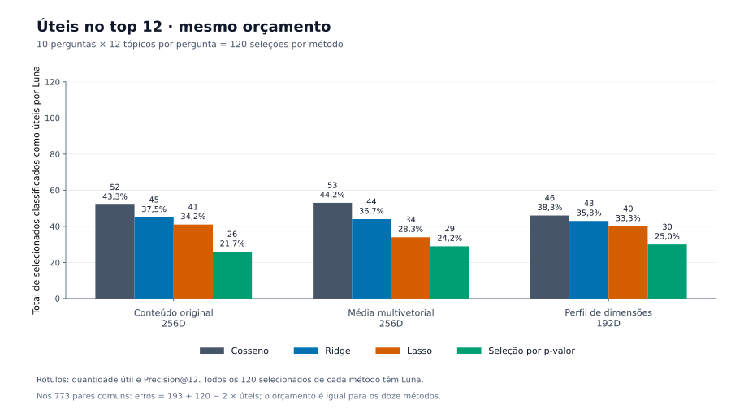
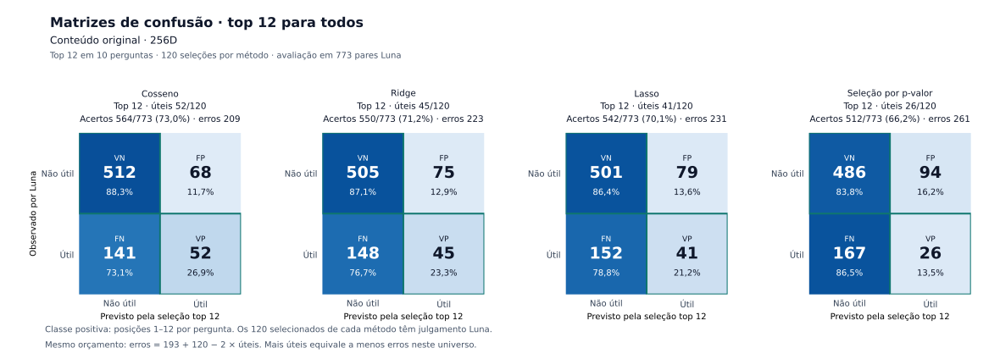
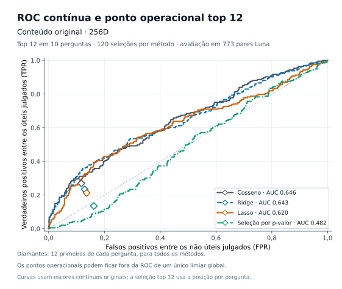
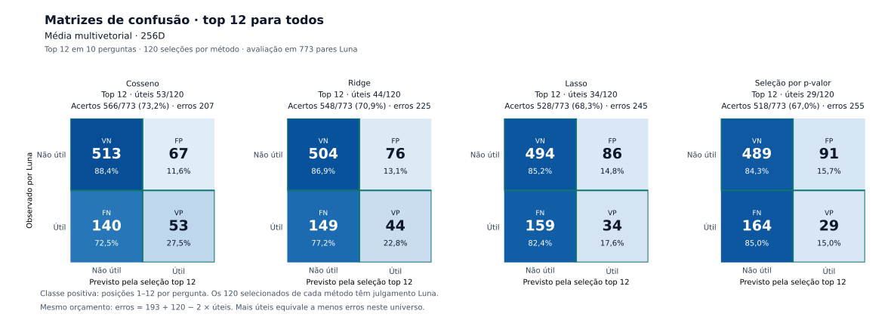
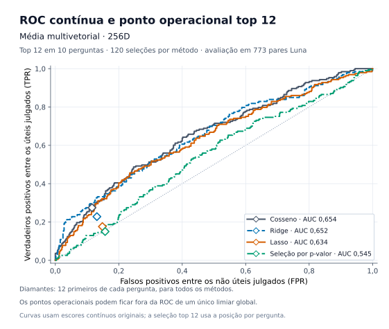
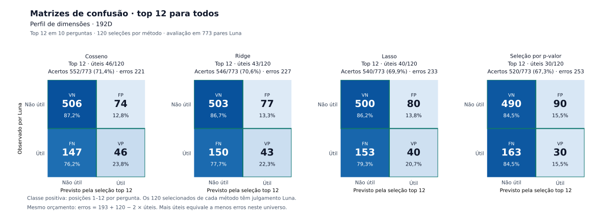
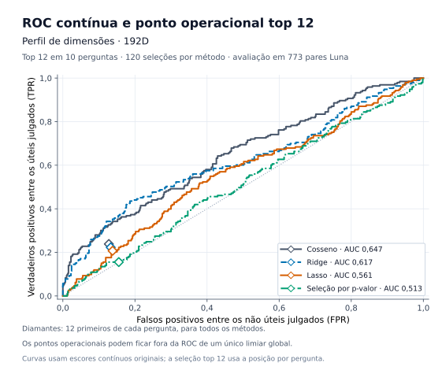

Cosseno
| Luna | Entre os 12 | Fora dos 12 |
|---|---|---|
| Útil | TP 52 | FN 141 |
| Não útil | FP 68 | TN 512 |
564 acertos; 209 erros. Os 120 selecionados possuem rótulo Luna; FN/TN referem-se somente aos demais pares julgados.
Cada método ordena os mesmos 282 tópicos e entrega exatamente 12 por pergunta: cosseno por similaridade; Ridge, LASSO e logística por p-valor pela probabilidade prevista. O Luna é a referência de utilidade em todos os 120 retornos de cada método.
Gerado em 28/10/2026 13:56 Hora oficial do Brasil. Sem filtro por probabilidade ou escore 0,5.
Multivetorial · Cosseno obteve a maior quantidade de úteis no top 12 neste conjunto de dez perguntas.
A classificação abaixo usa úteis/120 em ordem decrescente e mantém empates. A diferença entre os cossenos multivetorial e original é de um tópico útil nestas 120 posições; é um resultado observado, sem conclusão de superioridade geral.

| Ordem | Perfil | Método | Úteis / 120 | Não úteis / 120 | Precision@12 | IC95% P@12 por pergunta | Selecionados | Acertos TP+TN | Erros FP+FN | Acurácia nos julgados | TP | TN | FP | FN | Sensibilidade / recall | Especificidade | Ac. balanceada | AUROC auxiliar |
|---|---|---|---|---|---|---|---|---|---|---|---|---|---|---|---|---|---|---|
| 1 | Multivetorial | Cosseno | 53 | 67 | 44,2% | 33,3% a 55,0% | 120 | 566 | 207 | 73,2% | 53 | 513 | 67 | 140 | 27,5% | 88,4% | 58,0% | 0,6540 |
| 2 | Conteúdo original 256D | Cosseno | 52 | 68 | 43,3% | 30,8% a 57,5% | 120 | 564 | 209 | 73,0% | 52 | 512 | 68 | 141 | 26,9% | 88,3% | 57,6% | 0,6458 |
| 3 | Perfil 192D | Cosseno | 46 | 74 | 38,3% | 26,7% a 50,9% | 120 | 552 | 221 | 71,4% | 46 | 506 | 74 | 147 | 23,8% | 87,2% | 55,5% | 0,6468 |
| 4 | Conteúdo original 256D | Ridge | 45 | 75 | 37,5% | 23,3% a 53,3% | 120 | 550 | 223 | 71,2% | 45 | 505 | 75 | 148 | 23,3% | 87,1% | 55,2% | 0,6428 |
| 5 | Multivetorial | Ridge | 44 | 76 | 36,7% | 23,3% a 50,8% | 120 | 548 | 225 | 70,9% | 44 | 504 | 76 | 149 | 22,8% | 86,9% | 54,8% | 0,6515 |
| 6 | Perfil 192D | Ridge | 43 | 77 | 35,8% | 24,2% a 48,3% | 120 | 546 | 227 | 70,6% | 43 | 503 | 77 | 150 | 22,3% | 86,7% | 54,5% | 0,6173 |
| 7 | Conteúdo original 256D | LASSO | 41 | 79 | 34,2% | 23,3% a 45,8% | 120 | 542 | 231 | 70,1% | 41 | 501 | 79 | 152 | 21,2% | 86,4% | 53,8% | 0,6203 |
| 8 | Perfil 192D | LASSO | 40 | 80 | 33,3% | 22,5% a 45,8% | 120 | 540 | 233 | 69,9% | 40 | 500 | 80 | 153 | 20,7% | 86,2% | 53,5% | 0,5608 |
| 9 | Multivetorial | LASSO | 34 | 86 | 28,3% | 16,7% a 42,5% | 120 | 528 | 245 | 68,3% | 34 | 494 | 86 | 159 | 17,6% | 85,2% | 51,4% | 0,6338 |
| 10 | Perfil 192D | Logística por p-valor | 30 | 90 | 25,0% | 13,3% a 36,7% | 120 | 520 | 253 | 67,3% | 30 | 490 | 90 | 163 | 15,5% | 84,5% | 50,0% | 0,5128 |
| 11 | Multivetorial | Logística por p-valor | 29 | 91 | 24,2% | 13,3% a 36,7% | 120 | 518 | 255 | 67,0% | 29 | 489 | 91 | 164 | 15,0% | 84,3% | 49,7% | 0,5451 |
| 12 | Conteúdo original 256D | Logística por p-valor | 26 | 94 | 21,7% | 9,2% a 35,0% | 120 | 512 | 261 | 66,2% | 26 | 486 | 94 | 167 | 13,5% | 83,8% | 48,6% | 0,4818 |
Os 12 métodos recebem os mesmos 2.820 pares: 282 tópicos em cada uma das dez perguntas. Cada ranking seleciona exatamente os 12 primeiros de cada pergunta, totalizando 120 posições. Todos os selecionados possuem rótulo real do Luna.
A conversão do ranking em classe muda em relação ao corte p ≥ 0,5, portanto mudam as matrizes das regressões. Os modelos e os escores permanecem os mesmos; a AUROC do mesmo escore contínuo também não muda.
Os perfis diferem na representação do tópico: original 256D usa o melhor segmento do conteúdo; multivetorial 256D agrega a média de todos os vetores do tópico antes de selecionar os 12; perfil 192D usa o melhor segmento de conteúdo após a transformação de 192 dimensões.
Nos acertos e erros, a referência comum contém 773 pares: 193 úteis e 580 não úteis. Útil significa relação temática substantiva segundo o Luna, sem exigir suficiência para responder integralmente à pergunta. Os 2.047 pares sem julgamento não entram nas matrizes. Eles recebem posição e previsão, sem receber um rótulo inventado.
Com o mesmo orçamento, FP = 120 − TP, FN = 193 − TP e erros = 313 − 2 × TP. Por isso, cada útil adicional no top 12 reduz dois erros na comparação dos mesmos 773 pares. Uma regra que não seleciona nenhum item não atende ao orçamento de recuperação.
Todas as previsões · 33.840 linhasPrevisões com Luna · 9.276 linhasSelecionados com Luna · 1.440 linhas
Nas matrizes, as linhas são o Luna e as colunas indicam estar entre os 12 selecionados ou fora deles. A regra é idêntica para os quatro métodos. As curvas ROC ficam como diagnóstico auxiliar do escore contínuo.
| Perfil | Método | Úteis / 120 | Não úteis / 120 | Precision@12 | IC95% P@12 por pergunta | Selecionados | Acertos TP+TN | Erros FP+FN | Acurácia nos julgados | TP | TN | FP | FN | Sensibilidade / recall | Especificidade | Ac. balanceada | AUROC auxiliar |
|---|---|---|---|---|---|---|---|---|---|---|---|---|---|---|---|---|---|
| Conteúdo original 256D | Cosseno | 52 | 68 | 43,3% | 30,8% a 57,5% | 120 | 564 | 209 | 73,0% | 52 | 512 | 68 | 141 | 26,9% | 88,3% | 57,6% | 0,6458 |
| Conteúdo original 256D | Ridge | 45 | 75 | 37,5% | 23,3% a 53,3% | 120 | 550 | 223 | 71,2% | 45 | 505 | 75 | 148 | 23,3% | 87,1% | 55,2% | 0,6428 |
| Conteúdo original 256D | LASSO | 41 | 79 | 34,2% | 23,3% a 45,8% | 120 | 542 | 231 | 70,1% | 41 | 501 | 79 | 152 | 21,2% | 86,4% | 53,8% | 0,6203 |
| Conteúdo original 256D | Logística por p-valor | 26 | 94 | 21,7% | 9,2% a 35,0% | 120 | 512 | 261 | 66,2% | 26 | 486 | 94 | 167 | 13,5% | 83,8% | 48,6% | 0,4818 |

| Luna | Entre os 12 | Fora dos 12 |
|---|---|---|
| Útil | TP 52 | FN 141 |
| Não útil | FP 68 | TN 512 |
564 acertos; 209 erros. Os 120 selecionados possuem rótulo Luna; FN/TN referem-se somente aos demais pares julgados.
| Luna | Entre os 12 | Fora dos 12 |
|---|---|---|
| Útil | TP 45 | FN 148 |
| Não útil | FP 75 | TN 505 |
550 acertos; 223 erros. Os 120 selecionados possuem rótulo Luna; FN/TN referem-se somente aos demais pares julgados.
| Luna | Entre os 12 | Fora dos 12 |
|---|---|---|
| Útil | TP 41 | FN 152 |
| Não útil | FP 79 | TN 501 |
542 acertos; 231 erros. Os 120 selecionados possuem rótulo Luna; FN/TN referem-se somente aos demais pares julgados.
| Luna | Entre os 12 | Fora dos 12 |
|---|---|---|
| Útil | TP 26 | FN 167 |
| Não útil | FP 94 | TN 486 |
512 acertos; 261 erros. Os 120 selecionados possuem rótulo Luna; FN/TN referem-se somente aos demais pares julgados.

| Perfil | Método | Úteis / 120 | Não úteis / 120 | Precision@12 | IC95% P@12 por pergunta | Selecionados | Acertos TP+TN | Erros FP+FN | Acurácia nos julgados | TP | TN | FP | FN | Sensibilidade / recall | Especificidade | Ac. balanceada | AUROC auxiliar |
|---|---|---|---|---|---|---|---|---|---|---|---|---|---|---|---|---|---|
| Multivetorial | Cosseno | 53 | 67 | 44,2% | 33,3% a 55,0% | 120 | 566 | 207 | 73,2% | 53 | 513 | 67 | 140 | 27,5% | 88,4% | 58,0% | 0,6540 |
| Multivetorial | Ridge | 44 | 76 | 36,7% | 23,3% a 50,8% | 120 | 548 | 225 | 70,9% | 44 | 504 | 76 | 149 | 22,8% | 86,9% | 54,8% | 0,6515 |
| Multivetorial | LASSO | 34 | 86 | 28,3% | 16,7% a 42,5% | 120 | 528 | 245 | 68,3% | 34 | 494 | 86 | 159 | 17,6% | 85,2% | 51,4% | 0,6338 |
| Multivetorial | Logística por p-valor | 29 | 91 | 24,2% | 13,3% a 36,7% | 120 | 518 | 255 | 67,0% | 29 | 489 | 91 | 164 | 15,0% | 84,3% | 49,7% | 0,5451 |

| Luna | Entre os 12 | Fora dos 12 |
|---|---|---|
| Útil | TP 53 | FN 140 |
| Não útil | FP 67 | TN 513 |
566 acertos; 207 erros. Os 120 selecionados possuem rótulo Luna; FN/TN referem-se somente aos demais pares julgados.
| Luna | Entre os 12 | Fora dos 12 |
|---|---|---|
| Útil | TP 44 | FN 149 |
| Não útil | FP 76 | TN 504 |
548 acertos; 225 erros. Os 120 selecionados possuem rótulo Luna; FN/TN referem-se somente aos demais pares julgados.
| Luna | Entre os 12 | Fora dos 12 |
|---|---|---|
| Útil | TP 34 | FN 159 |
| Não útil | FP 86 | TN 494 |
528 acertos; 245 erros. Os 120 selecionados possuem rótulo Luna; FN/TN referem-se somente aos demais pares julgados.
| Luna | Entre os 12 | Fora dos 12 |
|---|---|---|
| Útil | TP 29 | FN 164 |
| Não útil | FP 91 | TN 489 |
518 acertos; 255 erros. Os 120 selecionados possuem rótulo Luna; FN/TN referem-se somente aos demais pares julgados.

| Perfil | Método | Úteis / 120 | Não úteis / 120 | Precision@12 | IC95% P@12 por pergunta | Selecionados | Acertos TP+TN | Erros FP+FN | Acurácia nos julgados | TP | TN | FP | FN | Sensibilidade / recall | Especificidade | Ac. balanceada | AUROC auxiliar |
|---|---|---|---|---|---|---|---|---|---|---|---|---|---|---|---|---|---|
| Perfil 192D | Cosseno | 46 | 74 | 38,3% | 26,7% a 50,9% | 120 | 552 | 221 | 71,4% | 46 | 506 | 74 | 147 | 23,8% | 87,2% | 55,5% | 0,6468 |
| Perfil 192D | Ridge | 43 | 77 | 35,8% | 24,2% a 48,3% | 120 | 546 | 227 | 70,6% | 43 | 503 | 77 | 150 | 22,3% | 86,7% | 54,5% | 0,6173 |
| Perfil 192D | LASSO | 40 | 80 | 33,3% | 22,5% a 45,8% | 120 | 540 | 233 | 69,9% | 40 | 500 | 80 | 153 | 20,7% | 86,2% | 53,5% | 0,5608 |
| Perfil 192D | Logística por p-valor | 30 | 90 | 25,0% | 13,3% a 36,7% | 120 | 520 | 253 | 67,3% | 30 | 490 | 90 | 163 | 15,5% | 84,5% | 50,0% | 0,5128 |

| Luna | Entre os 12 | Fora dos 12 |
|---|---|---|
| Útil | TP 46 | FN 147 |
| Não útil | FP 74 | TN 506 |
552 acertos; 221 erros. Os 120 selecionados possuem rótulo Luna; FN/TN referem-se somente aos demais pares julgados.
| Luna | Entre os 12 | Fora dos 12 |
|---|---|---|
| Útil | TP 43 | FN 150 |
| Não útil | FP 77 | TN 503 |
546 acertos; 227 erros. Os 120 selecionados possuem rótulo Luna; FN/TN referem-se somente aos demais pares julgados.
| Luna | Entre os 12 | Fora dos 12 |
|---|---|---|
| Útil | TP 40 | FN 153 |
| Não útil | FP 80 | TN 500 |
540 acertos; 233 erros. Os 120 selecionados possuem rótulo Luna; FN/TN referem-se somente aos demais pares julgados.
| Luna | Entre os 12 | Fora dos 12 |
|---|---|---|
| Útil | TP 30 | FN 163 |
| Não útil | FP 90 | TN 490 |
520 acertos; 253 erros. Os 120 selecionados possuem rótulo Luna; FN/TN referem-se somente aos demais pares julgados.

| Pergunta | Tema | Texto |
|---|---|---|
| nova_01 | Submissão ética | Quero entrevistar usuários de uma unidade de saúde sobre o atendimento que recebem. O que preciso preparar e apresentar para a avaliação ética antes de convidar as pessoas e começar as entrevistas? |
| nova_02 | Consentimento em entrevista remota | As entrevistas da minha pesquisa serão por videoconferência e alguns participantes não conseguem assinar um documento digital. Como devo conduzir e registrar o consentimento para que a participação seja esclarecida e voluntária? |
| nova_03 | Adolescentes e assentimento | Vou incluir adolescentes de 14 a 17 anos em uma pesquisa na escola. Que cuidados preciso prever para explicar o estudo, registrar a decisão dos adolescentes e obter a autorização dos responsáveis? |
| nova_04 | Prontuários, dispensa e proteção de dados | Quero analisar prontuários antigos de um hospital, mas não consigo localizar todos os pacientes. O que devo apresentar para pedir dispensa do consentimento e como proteger os dados durante a extração e a análise? |
| nova_05 | Recrutamento e relação de dependência | Sou professor e gostaria de convidar meus próprios alunos para uma pesquisa. Como organizar o convite e a decisão de participar para que eles não se sintam pressionados nem temam prejuízo nas notas? |
| nova_06 | Risco psicológico e apoio | Minha pesquisa terá entrevistas sobre experiências de violência, e alguém pode ficar emocionalmente abalado durante a conversa. Que medidas de prevenção, interrupção da entrevista e apoio ao participante devo prever no projeto? |
| nova_07 | Mudança de protocolo aprovado | Meu projeto já foi aprovado, mas quero acrescentar perguntas sensíveis ao questionário e mudar o local de coleta. Como devo comunicar essas alterações e o que preciso aguardar antes de aplicá-las? |
| nova_08 | Pesquisa multicêntrica | O mesmo estudo será realizado em três hospitais de instituições diferentes. Como organizar a avaliação ética, os documentos de cada centro e as responsabilidades dos pesquisadores antes de iniciar a coleta em todos os locais? |
| nova_09 | Armazenamento de amostras e uso futuro | Vamos guardar amostras de sangue após o encerramento da pesquisa para possíveis estudos futuros. O que precisa ser explicado aos participantes e previsto no protocolo sobre armazenamento, retirada da autorização e novos usos dessas amostras? |
| nova_10 | Dano relacionado à pesquisa | Durante um procedimento previsto no estudo, um participante sofreu uma complicação e precisou de atendimento. Quais providências a equipe deve tomar quanto à assistência, ao registro do ocorrido e à comunicação aos responsáveis pela avaliação ética? |
Cada linha mostra os 12 retornos de uma combinação método–pergunta. O escore da posição 12 é a fronteira observada desse ranking, sem um corte global comum de probabilidade. Os escores brutos de famílias diferentes não precisam ter a mesma escala.
| Perfil | Método | Pergunta | Úteis / 12 | Precision@12 | Escore da posição 1 | Escore da posição 12 | Probabilidade na posição 12 | Escala do escore |
|---|---|---|---|---|---|---|---|---|
| Conteúdo original 256D | Cosseno | nova_01 | 5 | 41,7% | 0,457589 | 0,392388 | — | cosseno bruto |
| Conteúdo original 256D | Cosseno | nova_02 | 8 | 66,7% | 0,553768 | 0,443671 | — | cosseno bruto |
| Conteúdo original 256D | Cosseno | nova_03 | 3 | 25,0% | 0,480483 | 0,409118 | — | cosseno bruto |
| Conteúdo original 256D | Cosseno | nova_04 | 2 | 16,7% | 0,473893 | 0,423763 | — | cosseno bruto |
| Conteúdo original 256D | Cosseno | nova_05 | 3 | 25,0% | 0,440114 | 0,370525 | — | cosseno bruto |
| Conteúdo original 256D | Cosseno | nova_06 | 8 | 66,7% | 0,464195 | 0,378267 | — | cosseno bruto |
| Conteúdo original 256D | Cosseno | nova_07 | 3 | 25,0% | 0,561381 | 0,462691 | — | cosseno bruto |
| Conteúdo original 256D | Cosseno | nova_08 | 10 | 83,3% | 0,614624 | 0,518248 | — | cosseno bruto |
| Conteúdo original 256D | Cosseno | nova_09 | 5 | 41,7% | 0,580187 | 0,459080 | — | cosseno bruto |
| Conteúdo original 256D | Cosseno | nova_10 | 5 | 41,7% | 0,585057 | 0,506369 | — | cosseno bruto |
| Conteúdo original 256D | Ridge | nova_01 | 8 | 66,7% | 1,658144 | 0,530240 | 0,629539 | logit da probabilidade congelada |
| Conteúdo original 256D | Ridge | nova_02 | 6 | 50,0% | 0,966188 | -0,004681 | 0,498830 | logit da probabilidade congelada |
| Conteúdo original 256D | Ridge | nova_03 | 1 | 8,3% | 0,805926 | 0,358195 | 0,588604 | logit da probabilidade congelada |
| Conteúdo original 256D | Ridge | nova_04 | 4 | 33,3% | 1,638213 | 0,600574 | 0,645788 | logit da probabilidade congelada |
| Conteúdo original 256D | Ridge | nova_05 | 2 | 16,7% | 1,075210 | 0,301925 | 0,574913 | logit da probabilidade congelada |
| Conteúdo original 256D | Ridge | nova_06 | 3 | 25,0% | 1,310699 | -0,102066 | 0,474506 | logit da probabilidade congelada |
| Conteúdo original 256D | Ridge | nova_07 | 2 | 16,7% | 1,405556 | 0,170204 | 0,542449 | logit da probabilidade congelada |
| Conteúdo original 256D | Ridge | nova_08 | 10 | 83,3% | 3,162744 | 2,230879 | 0,902988 | logit da probabilidade congelada |
| Conteúdo original 256D | Ridge | nova_09 | 7 | 58,3% | 1,765007 | 0,374556 | 0,592559 | logit da probabilidade congelada |
| Conteúdo original 256D | Ridge | nova_10 | 2 | 16,7% | 1,489389 | 1,098208 | 0,749924 | logit da probabilidade congelada |
| Conteúdo original 256D | LASSO | nova_01 | 6 | 50,0% | 3,420204 | 2,257794 | 0,905321 | logit da probabilidade congelada |
| Conteúdo original 256D | LASSO | nova_02 | 5 | 41,7% | 1,489312 | 0,930528 | 0,717182 | logit da probabilidade congelada |
| Conteúdo original 256D | LASSO | nova_03 | 3 | 25,0% | 1,928151 | 0,911738 | 0,713356 | logit da probabilidade congelada |
| Conteúdo original 256D | LASSO | nova_04 | 3 | 25,0% | 1,255655 | 0,559044 | 0,636231 | logit da probabilidade congelada |
| Conteúdo original 256D | LASSO | nova_05 | 2 | 16,7% | 3,148530 | 1,127812 | 0,755435 | logit da probabilidade congelada |
| Conteúdo original 256D | LASSO | nova_06 | 3 | 25,0% | 2,542607 | 1,267924 | 0,780387 | logit da probabilidade congelada |
| Conteúdo original 256D | LASSO | nova_07 | 1 | 8,3% | 2,183904 | 1,540798 | 0,823581 | logit da probabilidade congelada |
| Conteúdo original 256D | LASSO | nova_08 | 7 | 58,3% | 6,612935 | 3,945753 | 0,981030 | logit da probabilidade congelada |
| Conteúdo original 256D | LASSO | nova_09 | 8 | 66,7% | 2,118435 | 1,308986 | 0,787343 | logit da probabilidade congelada |
| Conteúdo original 256D | LASSO | nova_10 | 3 | 25,0% | 3,547531 | 1,997584 | 0,880543 | logit da probabilidade congelada |
| Conteúdo original 256D | Logística por p-valor | nova_01 | 7 | 58,3% | 2,510392 | 1,026841 | 0,736303 | logit da probabilidade congelada |
| Conteúdo original 256D | Logística por p-valor | nova_02 | 2 | 16,7% | 3,350288 | 1,748571 | 0,851773 | logit da probabilidade congelada |
| Conteúdo original 256D | Logística por p-valor | nova_03 | 0 | 0,0% | 6,314003 | 3,499615 | 0,970677 | logit da probabilidade congelada |
| Conteúdo original 256D | Logística por p-valor | nova_04 | 6 | 50,0% | 5,807829 | 0,440181 | 0,608302 | logit da probabilidade congelada |
| Conteúdo original 256D | Logística por p-valor | nova_05 | 0 | 0,0% | 9,992041 | 4,056656 | 0,982988 | logit da probabilidade congelada |
| Conteúdo original 256D | Logística por p-valor | nova_06 | 1 | 8,3% | 5,828058 | 2,497898 | 0,923994 | logit da probabilidade congelada |
| Conteúdo original 256D | Logística por p-valor | nova_07 | 2 | 16,7% | 6,108977 | 2,344073 | 0,912462 | logit da probabilidade congelada |
| Conteúdo original 256D | Logística por p-valor | nova_08 | 6 | 50,0% | 4,610592 | 2,927556 | 0,949192 | logit da probabilidade congelada |
| Conteúdo original 256D | Logística por p-valor | nova_09 | 2 | 16,7% | 4,591229 | 2,790416 | 0,942156 | logit da probabilidade congelada |
| Conteúdo original 256D | Logística por p-valor | nova_10 | 0 | 0,0% | 4,457565 | 2,971509 | 0,951270 | logit da probabilidade congelada |
| Multivetorial | Cosseno | nova_01 | 8 | 66,7% | 0,419827 | 0,356195 | — | cosseno bruto |
| Multivetorial | Cosseno | nova_02 | 6 | 50,0% | 0,466260 | 0,405926 | — | cosseno bruto |
| Multivetorial | Cosseno | nova_03 | 3 | 25,0% | 0,393358 | 0,363724 | — | cosseno bruto |
| Multivetorial | Cosseno | nova_04 | 5 | 41,7% | 0,433415 | 0,389171 | — | cosseno bruto |
| Multivetorial | Cosseno | nova_05 | 2 | 16,7% | 0,379726 | 0,352359 | — | cosseno bruto |
| Multivetorial | Cosseno | nova_06 | 8 | 66,7% | 0,412333 | 0,364141 | — | cosseno bruto |
| Multivetorial | Cosseno | nova_07 | 3 | 25,0% | 0,532509 | 0,425559 | — | cosseno bruto |
| Multivetorial | Cosseno | nova_08 | 8 | 66,7% | 0,561459 | 0,445676 | — | cosseno bruto |
| Multivetorial | Cosseno | nova_09 | 5 | 41,7% | 0,476990 | 0,423753 | — | cosseno bruto |
| Multivetorial | Cosseno | nova_10 | 5 | 41,7% | 0,508381 | 0,434980 | — | cosseno bruto |
| Multivetorial | Ridge | nova_01 | 7 | 58,3% | 1,481632 | 0,642824 | 0,655392 | logit da probabilidade congelada |
| Multivetorial | Ridge | nova_02 | 7 | 58,3% | 0,165645 | -0,138774 | 0,465362 | logit da probabilidade congelada |
| Multivetorial | Ridge | nova_03 | 2 | 16,7% | 0,989874 | 0,602910 | 0,646322 | logit da probabilidade congelada |
| Multivetorial | Ridge | nova_04 | 2 | 16,7% | 0,861958 | 0,037918 | 0,509478 | logit da probabilidade congelada |
| Multivetorial | Ridge | nova_05 | 2 | 16,7% | 1,082887 | 0,419110 | 0,603270 | logit da probabilidade congelada |
| Multivetorial | Ridge | nova_06 | 3 | 25,0% | 1,134655 | 0,168228 | 0,541958 | logit da probabilidade congelada |
| Multivetorial | Ridge | nova_07 | 2 | 16,7% | 1,821115 | 0,305873 | 0,575878 | logit da probabilidade congelada |
| Multivetorial | Ridge | nova_08 | 9 | 75,0% | 3,264984 | 2,004399 | 0,881258 | logit da probabilidade congelada |
| Multivetorial | Ridge | nova_09 | 7 | 58,3% | 1,325204 | 0,620921 | 0,650428 | logit da probabilidade congelada |
| Multivetorial | Ridge | nova_10 | 3 | 25,0% | 2,310594 | 1,047985 | 0,740388 | logit da probabilidade congelada |
| Multivetorial | LASSO | nova_01 | 6 | 50,0% | 6,831930 | 3,067296 | 0,955523 | logit da probabilidade congelada |
| Multivetorial | LASSO | nova_02 | 2 | 16,7% | 2,003932 | 0,817946 | 0,693800 | logit da probabilidade congelada |
| Multivetorial | LASSO | nova_03 | 2 | 16,7% | 2,540282 | 0,904644 | 0,711903 | logit da probabilidade congelada |
| Multivetorial | LASSO | nova_04 | 2 | 16,7% | 1,175211 | 0,195240 | 0,548655 | logit da probabilidade congelada |
| Multivetorial | LASSO | nova_05 | 4 | 33,3% | 3,107176 | 1,000350 | 0,731127 | logit da probabilidade congelada |
| Multivetorial | LASSO | nova_06 | 1 | 8,3% | 7,565430 | 2,714100 | 0,937854 | logit da probabilidade congelada |
| Multivetorial | LASSO | nova_07 | 2 | 16,7% | 4,311868 | 1,472907 | 0,813499 | logit da probabilidade congelada |
| Multivetorial | LASSO | nova_08 | 9 | 75,0% | 7,090723 | 3,982055 | 0,981694 | logit da probabilidade congelada |
| Multivetorial | LASSO | nova_09 | 5 | 41,7% | 5,353642 | 1,465107 | 0,812313 | logit da probabilidade congelada |
| Multivetorial | LASSO | nova_10 | 1 | 8,3% | 4,126618 | 2,128303 | 0,893624 | logit da probabilidade congelada |
| Multivetorial | Logística por p-valor | nova_01 | 4 | 33,3% | 5,506016 | 2,267754 | 0,906171 | logit da probabilidade congelada |
| Multivetorial | Logística por p-valor | nova_02 | 3 | 25,0% | 3,148720 | 1,035766 | 0,738032 | logit da probabilidade congelada |
| Multivetorial | Logística por p-valor | nova_03 | 0 | 0,0% | 4,174950 | 2,148535 | 0,895532 | logit da probabilidade congelada |
| Multivetorial | Logística por p-valor | nova_04 | 3 | 25,0% | 1,451875 | -0,250151 | 0,437786 | logit da probabilidade congelada |
| Multivetorial | Logística por p-valor | nova_05 | 1 | 8,3% | 3,685943 | 2,056175 | 0,886570 | logit da probabilidade congelada |
| Multivetorial | Logística por p-valor | nova_06 | 2 | 16,7% | 3,113283 | 1,056637 | 0,742047 | logit da probabilidade congelada |
| Multivetorial | Logística por p-valor | nova_07 | 1 | 8,3% | 10,416852 | 0,702604 | 0,668765 | logit da probabilidade congelada |
| Multivetorial | Logística por p-valor | nova_08 | 5 | 41,7% | 11,306668 | 3,199280 | 0,960807 | logit da probabilidade congelada |
| Multivetorial | Logística por p-valor | nova_09 | 8 | 66,7% | 2,593595 | 0,011880 | 0,502970 | logit da probabilidade congelada |
| Multivetorial | Logística por p-valor | nova_10 | 2 | 16,7% | 4,869846 | 1,558207 | 0,826096 | logit da probabilidade congelada |
| Perfil 192D | Cosseno | nova_01 | 6 | 50,0% | 0,465647 | 0,387083 | — | cosseno bruto |
| Perfil 192D | Cosseno | nova_02 | 6 | 50,0% | 0,528878 | 0,429129 | — | cosseno bruto |
| Perfil 192D | Cosseno | nova_03 | 2 | 16,7% | 0,464321 | 0,394484 | — | cosseno bruto |
| Perfil 192D | Cosseno | nova_04 | 3 | 25,0% | 0,502837 | 0,433743 | — | cosseno bruto |
| Perfil 192D | Cosseno | nova_05 | 2 | 16,7% | 0,485348 | 0,379255 | — | cosseno bruto |
| Perfil 192D | Cosseno | nova_06 | 5 | 41,7% | 0,457792 | 0,348818 | — | cosseno bruto |
| Perfil 192D | Cosseno | nova_07 | 2 | 16,7% | 0,540597 | 0,428761 | — | cosseno bruto |
| Perfil 192D | Cosseno | nova_08 | 10 | 83,3% | 0,612520 | 0,510911 | — | cosseno bruto |
| Perfil 192D | Cosseno | nova_09 | 5 | 41,7% | 0,575055 | 0,432408 | — | cosseno bruto |
| Perfil 192D | Cosseno | nova_10 | 5 | 41,7% | 0,551860 | 0,472075 | — | cosseno bruto |
| Perfil 192D | Ridge | nova_01 | 7 | 58,3% | 0,351754 | -0,377422 | 0,406749 | logit da probabilidade congelada |
| Perfil 192D | Ridge | nova_02 | 6 | 50,0% | 0,597415 | -0,514027 | 0,374250 | logit da probabilidade congelada |
| Perfil 192D | Ridge | nova_03 | 2 | 16,7% | -0,147027 | -0,651830 | 0,342577 | logit da probabilidade congelada |
| Perfil 192D | Ridge | nova_04 | 3 | 25,0% | 0,926337 | 0,097284 | 0,524302 | logit da probabilidade congelada |
| Perfil 192D | Ridge | nova_05 | 2 | 16,7% | 0,234757 | -0,455760 | 0,387992 | logit da probabilidade congelada |
| Perfil 192D | Ridge | nova_06 | 3 | 25,0% | 0,149817 | -1,059233 | 0,257456 | logit da probabilidade congelada |
| Perfil 192D | Ridge | nova_07 | 2 | 16,7% | 1,120277 | -0,407338 | 0,399551 | logit da probabilidade congelada |
| Perfil 192D | Ridge | nova_08 | 9 | 75,0% | 2,405951 | 1,210936 | 0,770465 | logit da probabilidade congelada |
| Perfil 192D | Ridge | nova_09 | 6 | 50,0% | 1,239091 | -0,294136 | 0,426992 | logit da probabilidade congelada |
| Perfil 192D | Ridge | nova_10 | 3 | 25,0% | 1,246314 | 0,459678 | 0,612938 | logit da probabilidade congelada |
| Perfil 192D | LASSO | nova_01 | 5 | 41,7% | 1,588436 | 0,439284 | 0,608088 | logit da probabilidade congelada |
| Perfil 192D | LASSO | nova_02 | 3 | 25,0% | 1,082787 | -0,047146 | 0,488216 | logit da probabilidade congelada |
| Perfil 192D | LASSO | nova_03 | 2 | 16,7% | 1,514680 | 0,340755 | 0,584374 | logit da probabilidade congelada |
| Perfil 192D | LASSO | nova_04 | 4 | 33,3% | 1,160738 | 0,159857 | 0,539879 | logit da probabilidade congelada |
| Perfil 192D | LASSO | nova_05 | 1 | 8,3% | 6,015221 | 1,586810 | 0,830167 | logit da probabilidade congelada |
| Perfil 192D | LASSO | nova_06 | 4 | 33,3% | 1,099866 | -0,046746 | 0,488316 | logit da probabilidade congelada |
| Perfil 192D | LASSO | nova_07 | 2 | 16,7% | 0,968106 | -0,297312 | 0,426215 | logit da probabilidade congelada |
| Perfil 192D | LASSO | nova_08 | 9 | 75,0% | 2,297236 | 0,710825 | 0,670583 | logit da probabilidade congelada |
| Perfil 192D | LASSO | nova_09 | 7 | 58,3% | 1,745885 | 0,243229 | 0,560509 | logit da probabilidade congelada |
| Perfil 192D | LASSO | nova_10 | 3 | 25,0% | 1,792664 | 0,987755 | 0,728644 | logit da probabilidade congelada |
| Perfil 192D | Logística por p-valor | nova_01 | 6 | 50,0% | 10,516570 | 3,409312 | 0,967994 | logit da probabilidade congelada |
| Perfil 192D | Logística por p-valor | nova_02 | 5 | 41,7% | 2,964118 | 1,241734 | 0,775866 | logit da probabilidade congelada |
| Perfil 192D | Logística por p-valor | nova_03 | 0 | 0,0% | 3,402481 | 2,432396 | 0,919265 | logit da probabilidade congelada |
| Perfil 192D | Logística por p-valor | nova_04 | 4 | 33,3% | 8,769670 | 4,410183 | 0,987993 | logit da probabilidade congelada |
| Perfil 192D | Logística por p-valor | nova_05 | 1 | 8,3% | 7,774846 | 3,149095 | 0,958873 | logit da probabilidade congelada |
| Perfil 192D | Logística por p-valor | nova_06 | 2 | 16,7% | 3,771866 | 1,235754 | 0,774824 | logit da probabilidade congelada |
| Perfil 192D | Logística por p-valor | nova_07 | 1 | 8,3% | 2,853979 | 0,828746 | 0,696090 | logit da probabilidade congelada |
| Perfil 192D | Logística por p-valor | nova_08 | 6 | 50,0% | 3,850806 | 2,104942 | 0,891383 | logit da probabilidade congelada |
| Perfil 192D | Logística por p-valor | nova_09 | 5 | 41,7% | 3,184927 | 1,546035 | 0,824340 | logit da probabilidade congelada |
| Perfil 192D | Logística por p-valor | nova_10 | 0 | 0,0% | 1,473520 | 0,566944 | 0,638058 | logit da probabilidade congelada |
Expanda um método para ver a utilidade de cada posição e pesquisar os títulos dos 120 tópicos retornados. Os rótulos mostrados são os do Luna; estar no top 12 não significa receber rótulo útil.
Verde: útil segundo o Luna. Bege: não útil. Cada linha contém as mesmas 12 posições; o rótulo é observado em todas elas.
Escore de ordenação: cosseno bruto. Nas regressões, o logit preserva a ordem da probabilidade e evita empates numéricos por arredondamento. Nenhum corte em 0,5 é aplicado.
| Pergunta | Posição | Tópico | Escore de ordenação | Probabilidade da regressão | Luna |
|---|---|---|---|---|---|
| nova_01 | 1 | Avaliação ética e sanitária integrada de pesquisas clínicas tp_decreto_12651_2025_art_28_avaliacao_integrada | 0,457589 | — | Não útil |
| nova_01 | 2 | Inclusão complementar do contato do CEP local no TCLE tp_despacho_3_2026_secao_v_bc_contato_cep_local | 0,413017 | — | Útil |
| nova_01 | 3 | Priorização de pesquisas estratégicas para o SUS tp_decreto_12651_2025_art_29_priorizacao_sus | 0,410401 | — | Não útil |
| nova_01 | 4 | Interlocução entre o CEP responsável e os CEPs participantes tp_despacho_3_2026_secao_ii_bc_interlocucao | 0,407976 | — | Útil |
| nova_01 | 5 | Proteção de dados pessoais nos documentos do DQT tp_guia_s_n_2026_secao_3_6_protecao_dados_lgpd | 0,406209 | — | Útil |
| nova_01 | 6 | Acreditação dos Comitês de Ética em Pesquisa tp_decreto_12651_2025_art_19_acreditacao_ceps | 0,405667 | — | Não útil |
| nova_01 | 7 | Etapas do fluxo procedimental da análise ética tp_despacho_2_2026_inciso_xxii_fluxo_analise | 0,404652 | — | Útil |
| nova_01 | 8 | Verificação final e coerência mínima do dossiê tp_guia_s_n_2026_secao_7_verificacao_final | 0,403991 | — | Não útil |
| nova_01 | 9 | F05 — Governança em Rede (condicional) tp_guia_s_n_2026_f05_governanca_rede | 0,395704 | — | Não útil |
| nova_01 | 10 | Admissão excepcional de voluntários sadios tp_despacho_5_2026_item_iii_voluntarios_sadios | 0,393043 | — | Não útil |
| nova_01 | 11 | Grupos técnicos consultivos tp_decreto_12651_2025_art_7_grupos_tecnicos | 0,392794 | — | Não útil |
| nova_01 | 12 | Responsabilidades residuais dos CEPs locais tp_despacho_3_2026_secao_iv_b_responsabilidades_residuais | 0,392388 | — | Útil |
| nova_02 | 1 | Definições legais: documentos, compensações, reações adversas, TCLE e vulnerabilidade tp_lei_14874_2024_art_2_definicoes_xliii_lvi | 0,553768 | — | Útil |
| nova_02 | 2 | Conteúdo das informações, esclarecimento e testemunha imparcial tp_lei_14874_2024_art_18_informacao_testemunha | 0,543952 | — | Útil |
| nova_02 | 3 | Definições legais: acesso direto, assentimento, auditoria, entidades e instrumentos da pesquisa tp_lei_14874_2024_art_2_definicoes_i_xiv | 0,511340 | — | Útil |
| nova_02 | 4 | Inclusão em emergência e retirada do consentimento tp_lei_14874_2024_art_18_emergencia_retirada | 0,504965 | — | Útil |
| nova_02 | 5 | Contato obrigatório do CEP responsável no TCLE tp_despacho_3_2026_secao_v_a_contato_cep_responsavel | 0,472734 | — | Útil |
| nova_02 | 6 | Requisitos para participação de pessoas vulneráveis ou incapazes e comunicação ao Ministério Público tp_lei_14874_2024_art_24_vulnerabilidade_requisitos | 0,468556 | — | Útil |
| nova_02 | 7 | Direitos do participante sobre material biológico humano e informações associadas tp_lei_14874_2024_art_40_direitos_material_biologico | 0,465159 | — | Útil |
| nova_02 | 8 | Autorização expressa, validade e atualização do TCLE tp_lei_14874_2024_art_18_tcle_requisitos | 0,463779 | — | Útil |
| nova_02 | 9 | Inclusão complementar do contato do CEP local no TCLE tp_despacho_3_2026_secao_v_bc_contato_cep_local | 0,455405 | — | Não útil |
| nova_02 | 10 | Inclusão excepcional de voluntários sadios tp_informe_tecnico_s_n_2026_voluntarios_sadios_excepcionalidade | 0,455134 | — | Não útil |
| nova_02 | 11 | Acesso direto aos registros e dever de confidencialidade tp_lei_14874_2024_art_17_acesso_registros_confidencialidade | 0,444929 | — | Não útil |
| nova_02 | 12 | Admissão excepcional de voluntários sadios tp_despacho_5_2026_item_iii_voluntarios_sadios | 0,443671 | — | Não útil |
| nova_03 | 1 | Definições legais: acesso direto, assentimento, auditoria, entidades e instrumentos da pesquisa tp_lei_14874_2024_art_2_definicoes_i_xiv | 0,480483 | — | Útil |
| nova_03 | 2 | Acesso direto aos registros e dever de confidencialidade tp_lei_14874_2024_art_17_acesso_registros_confidencialidade | 0,452951 | — | Não útil |
| nova_03 | 3 | Instrução do processo e guarda documental pelo CEP tp_lei_14874_2024_art_13_instrucao_arquivo | 0,431375 | — | Não útil |
| nova_03 | 4 | Formulação, registro e comunicação de diligências tp_despacho_2_2026_incisos_v_viii_diligencia | 0,425416 | — | Não útil |
| nova_03 | 5 | Inclusão em emergência e retirada do consentimento tp_lei_14874_2024_art_18_emergencia_retirada | 0,422327 | — | Útil |
| nova_03 | 6 | Prazos, diligências e resultados do parecer ético tp_lei_14874_2024_art_14_prazos_diligencias_parecer | 0,416569 | — | Não útil |
| nova_03 | 7 | Objeto e âmbito de aplicação do Decreto tp_decreto_12651_2025_art_1_escopo | 0,416558 | — | Não útil |
| nova_03 | 8 | Anonimato, privacidade e sigilo das informações tp_lei_14874_2024_art_19_anonimato_privacidade_sigilo | 0,414084 | — | Não útil |
| nova_03 | 9 | Separação entre análise ética e plano administrativo tp_despacho_3_2026_secao_iii_fj_separacao_planos | 0,413796 | — | Não útil |
| nova_03 | 10 | Direitos do participante sobre material biológico humano e informações associadas tp_lei_14874_2024_art_40_direitos_material_biologico | 0,410846 | — | Não útil |
| nova_03 | 11 | Verificação inicial do enquadramento do protocolo em área temática de risco elevado tp_nota_tecnica_1_2026_item_3_2_a_verificacao_area_tematica | 0,410062 | — | Não útil |
| nova_03 | 12 | Requisitos para participação de pessoas vulneráveis ou incapazes e comunicação ao Ministério Público tp_lei_14874_2024_art_24_vulnerabilidade_requisitos | 0,409118 | — | Útil |
| nova_04 | 1 | Proteção de dados pessoais nos documentos do DQT tp_guia_s_n_2026_secao_3_6_protecao_dados_lgpd | 0,473893 | — | Útil |
| nova_04 | 2 | Fluxo de transferência após aprovação por CEP credenciado tp_nota_tecnica_43_2025_anexo_ii_fluxo_transferencia_pos_cep | 0,449953 | — | Não útil |
| nova_04 | 3 | Análise ética única de pesquisas multicêntricas tp_despacho_3_2026_secao_i_a_analise_unica | 0,444781 | — | Não útil |
| nova_04 | 4 | Organização, nomeação e identificação dos anexos tp_guia_s_n_2026_secao_3_3_nomeacao_anexos | 0,439674 | — | Não útil |
| nova_04 | 5 | Prazo, responsabilidade e confidencialidade no armazenamento dos dados da pesquisa tp_lei_14874_2024_art_51_armazenamento_dados | 0,437726 | — | Útil |
| nova_04 | 6 | Instrução do processo e guarda documental pelo CEP tp_lei_14874_2024_art_13_instrucao_arquivo | 0,437361 | — | Não útil |
| nova_04 | 7 | Destinação dos protocolos segundo a classificação e a instância de origem tp_nota_tecnica_43_2025_itens_6_37_6_41_destinacao | 0,432662 | — | Não útil |
| nova_04 | 8 | Conteúdo das informações, esclarecimento e testemunha imparcial tp_lei_14874_2024_art_18_informacao_testemunha | 0,430995 | — | Não útil |
| nova_04 | 9 | Inclusão em emergência e retirada do consentimento tp_lei_14874_2024_art_18_emergencia_retirada | 0,429629 | — | Não útil |
| nova_04 | 10 | Manifestação operacional dos CEPs participantes na Plataforma Brasil tp_despacho_3_2026_secao_vii_a_plataforma_brasil | 0,425437 | — | Não útil |
| nova_04 | 11 | Interlocução entre o CEP responsável e os CEPs participantes tp_despacho_3_2026_secao_ii_bc_interlocucao | 0,425291 | — | Não útil |
| nova_04 | 12 | Verificação final e coerência mínima do dossiê tp_guia_s_n_2026_secao_7_verificacao_final | 0,423763 | — | Não útil |
| nova_05 | 1 | Inclusão em emergência e retirada do consentimento tp_lei_14874_2024_art_18_emergencia_retirada | 0,440114 | — | Útil |
| nova_05 | 2 | Encaminhamento administrativo de protocolo de risco elevado à Inaep tp_nota_tecnica_1_2026_item_3_2_b_encaminhamento_inaep | 0,400925 | — | Não útil |
| nova_05 | 3 | Princípios, DQT e etapas do processo de acreditação tp_resolucao_rci_2_2026_arts_9_11_dqt_etapas | 0,400620 | — | Não útil |
| nova_05 | 4 | Prazos, diligências e resultados do parecer ético tp_lei_14874_2024_art_14_prazos_diligencias_parecer | 0,400213 | — | Não útil |
| nova_05 | 5 | Trâmites posteriores à transferência e retorno de protocolo cadastrado incorretamente tp_nota_tecnica_1_2026_anexo_i_tramites_pos_transferencia | 0,385265 | — | Não útil |
| nova_05 | 6 | Consulta técnica ao CEP local pela direção institucional tp_despacho_3_2026_secao_iii_lm_consulta_cep_local | 0,384236 | — | Não útil |
| nova_05 | 7 | Verificação inicial do enquadramento do protocolo em área temática de risco elevado tp_nota_tecnica_1_2026_item_3_2_a_verificacao_area_tematica | 0,382017 | — | Não útil |
| nova_05 | 8 | Inclusão complementar do contato do CEP local no TCLE tp_despacho_3_2026_secao_v_bc_contato_cep_local | 0,381070 | — | Útil |
| nova_05 | 9 | Adequação dos TCLEs às especificidades locais tp_despacho_3_2026_secao_v_d_especificidades_tcle | 0,380111 | — | Não útil |
| nova_05 | 10 | Conteúdo das informações, esclarecimento e testemunha imparcial tp_lei_14874_2024_art_18_informacao_testemunha | 0,376540 | — | Útil |
| nova_05 | 11 | Providências do pesquisador após a transferência para CEP acreditado tp_nota_tecnica_1_2026_anexo_i_pendencias_pesquisador | 0,374874 | — | Não útil |
| nova_05 | 12 | Governança ética colaborativa entre comitês tp_despacho_3_2026_secao_ii_a_governanca_colaborativa | 0,370525 | — | Não útil |
| nova_06 | 1 | Inclusão em emergência e retirada do consentimento tp_lei_14874_2024_art_18_emergencia_retirada | 0,464195 | — | Útil |
| nova_06 | 2 | Definições legais: documentos, compensações, reações adversas, TCLE e vulnerabilidade tp_lei_14874_2024_art_2_definicoes_xliii_lvi | 0,438034 | — | Não útil |
| nova_06 | 3 | Anonimato, privacidade e sigilo das informações tp_lei_14874_2024_art_19_anonimato_privacidade_sigilo | 0,429912 | — | Não útil |
| nova_06 | 4 | Inclusão complementar do contato do CEP local no TCLE tp_despacho_3_2026_secao_v_bc_contato_cep_local | 0,424619 | — | Não útil |
| nova_06 | 5 | Conteúdo das informações, esclarecimento e testemunha imparcial tp_lei_14874_2024_art_18_informacao_testemunha | 0,422721 | — | Útil |
| nova_06 | 6 | Condicionamento da inclusão de participantes em situação de vulnerabilidade tp_lei_14874_2024_art_24_inclusao_vulnerabilidade_caput | 0,422676 | — | Útil |
| nova_06 | 7 | Obrigatoriedade de análise ética prévia tp_lei_14874_2024_art_6_analise_etica_previa | 0,418343 | — | Útil |
| nova_06 | 8 | Etapas do fluxo procedimental da análise ética tp_despacho_2_2026_inciso_xxii_fluxo_analise | 0,394911 | — | Não útil |
| nova_06 | 9 | Providências locais diante de irregularidade grave ou risco iminente tp_despacho_3_2026_secao_iv_de_risco_iminente | 0,383618 | — | Útil |
| nova_06 | 10 | Diretrizes da análise ética e impedimento por conflito de interesse tp_lei_14874_2024_art_7_diretrizes_analise_etica | 0,382895 | — | Útil |
| nova_06 | 11 | Responsabilidades do Comitê de Ética em Pesquisa tp_lei_14874_2024_art_12_responsabilidades_cep | 0,380746 | — | Útil |
| nova_06 | 12 | Exigências éticas e científicas aplicáveis à pesquisa com seres humanos tp_lei_14874_2024_art_3_exigencias_eticas_cientificas | 0,378267 | — | Útil |
| nova_07 | 1 | Submissão e implementação de emendas ao projeto de pesquisa tp_lei_14874_2024_art_16_emendas | 0,561381 | — | Útil |
| nova_07 | 2 | Mensagem obrigatória no parecer administrativo de transferência tp_nota_tecnica_1_2026_item_3_2_b_mensagem_parecer | 0,517620 | — | Não útil |
| nova_07 | 3 | Trâmites posteriores à transferência e retorno de protocolo cadastrado incorretamente tp_nota_tecnica_1_2026_anexo_i_tramites_pos_transferencia | 0,514934 | — | Não útil |
| nova_07 | 4 | Uso transitório do parecer consubstanciado pendente para diligências tp_despacho_2_2026_inciso_x_parecer_pendente | 0,488390 | — | Útil |
| nova_07 | 5 | Formas de direcionamento de protocolos de área temática aos CEPs acreditados tp_nota_tecnica_43_2025_anexo_ii_formas_direcionamento | 0,487443 | — | Não útil |
| nova_07 | 6 | Plano em fases para classificação e direcionamento dos protocolos tp_nota_tecnica_43_2025_itens_5_31_5_33_plano_fases | 0,482047 | — | Não útil |
| nova_07 | 7 | Acompanhamento pelo CEP da instituição proponente após transferência tp_nota_tecnica_1_2026_anexo_i_acompanhamento_cep_proponente | 0,480635 | — | Não útil |
| nova_07 | 8 | Efeitos da ausência de manifestação da Inaep e instrução da notificação tp_despacho_1_2026_inciso_vii_silencio_e_instrucao | 0,477895 | — | Não útil |
| nova_07 | 9 | Motivo da transferência de protocolos de risco elevado para CEP acreditado tp_nota_tecnica_1_2026_anexo_i_transferencia_cep_acreditado | 0,477671 | — | Útil |
| nova_07 | 10 | Extensão de especialidades e modificação ou ampliação do nível tp_resolucao_rci_2_2026_arts_25_26_extensao_ampliacao | 0,471072 | — | Não útil |
| nova_07 | 11 | Classificação técnica provisória até a atualização da Plataforma Brasil tp_nota_tecnica_43_2025_itens_5_35_5_36_classificacao_tecnica | 0,470329 | — | Não útil |
| nova_07 | 12 | Verificação inicial do enquadramento do protocolo em área temática de risco elevado tp_nota_tecnica_1_2026_item_3_2_a_verificacao_area_tematica | 0,462691 | — | Não útil |
| nova_08 | 1 | Análise ética única de pesquisas multicêntricas tp_despacho_3_2026_secao_i_a_analise_unica | 0,614624 | — | Útil |
| nova_08 | 2 | Interlocução entre o CEP responsável e os CEPs participantes tp_despacho_3_2026_secao_ii_bc_interlocucao | 0,585382 | — | Útil |
| nova_08 | 3 | Adequação dos TCLEs às especificidades locais tp_despacho_3_2026_secao_v_d_especificidades_tcle | 0,575780 | — | Útil |
| nova_08 | 4 | Monitoramento pelo CEP responsável e acompanhamento local tp_despacho_3_2026_secao_iii_e_monitoramento_local | 0,567097 | — | Útil |
| nova_08 | 5 | Manifestação operacional dos CEPs participantes na Plataforma Brasil tp_despacho_3_2026_secao_vii_a_plataforma_brasil | 0,564566 | — | Útil |
| nova_08 | 6 | Separação entre análise ética e plano administrativo tp_despacho_3_2026_secao_iii_fj_separacao_planos | 0,558781 | — | Útil |
| nova_08 | 7 | Responsabilidades residuais dos CEPs locais tp_despacho_3_2026_secao_iv_b_responsabilidades_residuais | 0,544202 | — | Útil |
| nova_08 | 8 | Destinatários e aplicação da orientação na análise ética tp_despacho_5_2026_item_vi_aplicacao_da_orientacao | 0,541471 | — | Não útil |
| nova_08 | 9 | Efeitos do Despacho sobre a análise ética tp_informe_tecnico_s_n_2026_efeitos_despacho | 0,529620 | — | Não útil |
| nova_08 | 10 | Governança em rede e responsabilidades dos CEPs de referência e locais tp_resolucao_rci_2_2026_arts_44_46_governanca_rede | 0,529154 | — | Útil |
| nova_08 | 11 | Inclusão complementar do contato do CEP local no TCLE tp_despacho_3_2026_secao_v_bc_contato_cep_local | 0,525031 | — | Útil |
| nova_08 | 12 | Eficácia do parecer ético favorável em todos os centros tp_despacho_3_2026_secao_i_b_eficacia_parecer | 0,518248 | — | Útil |
| nova_09 | 1 | Prazos, titularidade e gerenciamento de material biológico armazenado tp_lei_14874_2024_arts_41_44_armazenamento_gestao | 0,580187 | — | Útil |
| nova_09 | 2 | Direitos do participante sobre material biológico humano e informações associadas tp_lei_14874_2024_art_40_direitos_material_biologico | 0,531126 | — | Útil |
| nova_09 | 3 | Não discriminação e consentimento para disposição de material biológico humano tp_lei_14874_2024_arts_38_39_material_consentimento | 0,510643 | — | Útil |
| nova_09 | 4 | Prazo, responsabilidade e confidencialidade no armazenamento dos dados da pesquisa tp_lei_14874_2024_art_51_armazenamento_dados | 0,501415 | — | Não útil |
| nova_09 | 5 | Plano de transição para cuidados após o ensaio clínico tp_lei_14874_2024_art_35_transicao_cuidados | 0,497243 | — | Não útil |
| nova_09 | 6 | Plano e programa de acesso pós-estudo tp_lei_14874_2024_art_30_plano_pos_estudo | 0,483512 | — | Não útil |
| nova_09 | 7 | Instrução do processo e guarda documental pelo CEP tp_lei_14874_2024_art_13_instrucao_arquivo | 0,480622 | — | Não útil |
| nova_09 | 8 | Transferência de material biológico humano e informações associadas tp_lei_14874_2024_arts_46_48_transferencia_material | 0,478119 | — | Útil |
| nova_09 | 9 | Conteúdo das informações, esclarecimento e testemunha imparcial tp_lei_14874_2024_art_18_informacao_testemunha | 0,464052 | — | Não útil |
| nova_09 | 10 | Inclusão em emergência e retirada do consentimento tp_lei_14874_2024_art_18_emergencia_retirada | 0,461734 | — | Útil |
| nova_09 | 11 | Destinação dos protocolos segundo a classificação e a instância de origem tp_nota_tecnica_43_2025_itens_6_37_6_41_destinacao | 0,460562 | — | Não útil |
| nova_09 | 12 | Providências do pesquisador após a transferência para CEP acreditado tp_nota_tecnica_1_2026_anexo_i_pendencias_pesquisador | 0,459080 | — | Não útil |
| nova_10 | 1 | Inclusão complementar do contato do CEP local no TCLE tp_despacho_3_2026_secao_v_bc_contato_cep_local | 0,585057 | — | Não útil |
| nova_10 | 2 | Providências locais diante de irregularidade grave ou risco iminente tp_despacho_3_2026_secao_iv_de_risco_iminente | 0,564822 | — | Útil |
| nova_10 | 3 | Comunicação obrigatória de eventos adversos graves e violações do protocolo tp_lei_14874_2024_arts_55_56_comunicacoes_obrigatorias | 0,547069 | — | Útil |
| nova_10 | 4 | Interlocução entre o CEP responsável e os CEPs participantes tp_despacho_3_2026_secao_ii_bc_interlocucao | 0,536851 | — | Não útil |
| nova_10 | 5 | Destinação dos protocolos segundo a classificação e a instância de origem tp_nota_tecnica_43_2025_itens_6_37_6_41_destinacao | 0,527900 | — | Não útil |
| nova_10 | 6 | Competência por risco, participação de grupos especiais e deliberação do CEP tp_lei_14874_2024_art_9_risco_grupos_deliberacao | 0,514754 | — | Não útil |
| nova_10 | 7 | Providências do pesquisador após a transferência para CEP acreditado tp_nota_tecnica_1_2026_anexo_i_pendencias_pesquisador | 0,512252 | — | Não útil |
| nova_10 | 8 | Princípios do processo de análise ética e impedimento por conflito de interesse tp_decreto_12651_2025_art_26_principios_analise_etica | 0,510352 | — | Não útil |
| nova_10 | 9 | Monitoramento pelo CEP responsável e acompanhamento local tp_despacho_3_2026_secao_iii_e_monitoramento_local | 0,508552 | — | Útil |
| nova_10 | 10 | Competências dos Comitês de Ética em Pesquisa tp_decreto_12651_2025_art_23_competencias_ceps | 0,506866 | — | Útil |
| nova_10 | 11 | Verificação inicial do enquadramento do protocolo em área temática de risco elevado tp_nota_tecnica_1_2026_item_3_2_a_verificacao_area_tematica | 0,506556 | — | Não útil |
| nova_10 | 12 | Deveres permanentes e responsabilidades na execução tp_despacho_3_2026_secao_iii_cd_deveres_permanentes | 0,506369 | — | Útil |
Verde: útil segundo o Luna. Bege: não útil. Cada linha contém as mesmas 12 posições; o rótulo é observado em todas elas.
Escore de ordenação: logit da probabilidade congelada. Nas regressões, o logit preserva a ordem da probabilidade e evita empates numéricos por arredondamento. Nenhum corte em 0,5 é aplicado.
| Pergunta | Posição | Tópico | Escore de ordenação | Probabilidade da regressão | Luna |
|---|---|---|---|---|---|
| nova_01 | 1 | Riscos dos medicamentos e necessidade de análise criteriosa tp_informe_tecnico_s_n_2026_riscos_medicamentos_abrangidos | 1,658144 | 0,839989 | Não útil |
| nova_01 | 2 | Classificação técnica provisória até a atualização da Plataforma Brasil tp_nota_tecnica_43_2025_itens_5_35_5_36_classificacao_tecnica | 1,445455 | 0,809298 | Não útil |
| nova_01 | 3 | Definições aplicáveis ao processo de acreditação tp_resolucao_rci_2_2026_art_3_definicoes | 1,183748 | 0,765621 | Útil |
| nova_01 | 4 | Princípios da análise ética e compatibilidade das normas anteriores do CNS tp_despacho_1_2026_premissas_principios_compatibilidade | 1,086886 | 0,747795 | Útil |
| nova_01 | 5 | Priorização de pesquisas estratégicas para o SUS tp_decreto_12651_2025_art_29_priorizacao_sus | 0,729981 | 0,674801 | Não útil |
| nova_01 | 6 | Competências dos Comitês de Ética em Pesquisa tp_decreto_12651_2025_art_23_competencias_ceps | 0,722492 | 0,673156 | Útil |
| nova_01 | 7 | Prazos para integridade documental e emissão do parecer ético tp_despacho_2_2026_inciso_ii_marcos_temporais | 0,716995 | 0,671945 | Útil |
| nova_01 | 8 | Obrigatoriedade de análise ética prévia tp_lei_14874_2024_art_6_analise_etica_previa | 0,647238 | 0,656388 | Útil |
| nova_01 | 9 | Atribuições da instância nacional de ética em pesquisa tp_lei_14874_2024_art_8_atribuicoes_instancia_nacional | 0,631412 | 0,652810 | Útil |
| nova_01 | 10 | Atribuições institucionais dos CEPs acreditados tp_nota_tecnica_43_2025_itens_3_15_3_19_atribuicoes_acreditados | 0,568631 | 0,638447 | Útil |
| nova_01 | 11 | Competência e transferência dos protocolos com o Ministério da Saúde como instituição proponente tp_nota_tecnica_1_2026_itens_4_1_a_4_3_protocolos_ms | 0,547800 | 0,633625 | Não útil |
| nova_01 | 12 | Responsabilização das instituições e dos pesquisadores tp_despacho_3_2026_secao_vi_a_responsabilizacao | 0,530240 | 0,629539 | Útil |
| nova_02 | 1 | Definições legais: acesso direto, assentimento, auditoria, entidades e instrumentos da pesquisa tp_lei_14874_2024_art_2_definicoes_i_xiv | 0,966188 | 0,724359 | Útil |
| nova_02 | 2 | Exigências institucionais incompatíveis após a adesão tp_despacho_3_2026_secao_iii_b_exigencias_incompativeis | 0,937932 | 0,718682 | Não útil |
| nova_02 | 3 | Definições legais: documentos, compensações, reações adversas, TCLE e vulnerabilidade tp_lei_14874_2024_art_2_definicoes_xliii_lvi | 0,872873 | 0,705343 | Útil |
| nova_02 | 4 | Classificação técnica provisória até a atualização da Plataforma Brasil tp_nota_tecnica_43_2025_itens_5_35_5_36_classificacao_tecnica | 0,329592 | 0,581660 | Não útil |
| nova_02 | 5 | Ineficácia de regras inferiores que imponham dupla revisão tp_despacho_3_2026_secao_viii_a_dupla_revisao | 0,308230 | 0,576453 | Não útil |
| nova_02 | 6 | Inclusão excepcional de voluntários sadios tp_informe_tecnico_s_n_2026_voluntarios_sadios_excepcionalidade | 0,305734 | 0,575844 | Não útil |
| nova_02 | 7 | Requisitos para participação de pessoas vulneráveis ou incapazes e comunicação ao Ministério Público tp_lei_14874_2024_art_24_vulnerabilidade_requisitos | 0,202163 | 0,550369 | Útil |
| nova_02 | 8 | Conteúdo das informações, esclarecimento e testemunha imparcial tp_lei_14874_2024_art_18_informacao_testemunha | 0,158092 | 0,539441 | Útil |
| nova_02 | 9 | Autorização expressa, validade e atualização do TCLE tp_lei_14874_2024_art_18_tcle_requisitos | 0,154129 | 0,538456 | Útil |
| nova_02 | 10 | Inclusão em emergência e retirada do consentimento tp_lei_14874_2024_art_18_emergencia_retirada | 0,141519 | 0,535321 | Útil |
| nova_02 | 11 | Responsabilização das instituições e dos pesquisadores tp_despacho_3_2026_secao_vi_a_responsabilizacao | 0,058014 | 0,514499 | Não útil |
| nova_02 | 12 | Uso transitório do parecer consubstanciado pendente para diligências tp_despacho_2_2026_inciso_x_parecer_pendente | -0,004681 | 0,498830 | Não útil |
| nova_03 | 1 | Formulação, registro e comunicação de diligências tp_despacho_2_2026_incisos_v_viii_diligencia | 0,805926 | 0,691241 | Não útil |
| nova_03 | 2 | Manifestação operacional dos CEPs participantes na Plataforma Brasil tp_despacho_3_2026_secao_vii_a_plataforma_brasil | 0,652838 | 0,657650 | Não útil |
| nova_03 | 3 | Definições legais: acesso direto, assentimento, auditoria, entidades e instrumentos da pesquisa tp_lei_14874_2024_art_2_definicoes_i_xiv | 0,630202 | 0,652535 | Útil |
| nova_03 | 4 | Fluxo de transferência após aprovação por CEP credenciado tp_nota_tecnica_43_2025_anexo_ii_fluxo_transferencia_pos_cep | 0,628531 | 0,652156 | Não útil |
| nova_03 | 5 | Admissão excepcional de voluntários sadios tp_despacho_5_2026_item_iii_voluntarios_sadios | 0,603867 | 0,646540 | Não útil |
| nova_03 | 6 | Interlocução entre o CEP responsável e os CEPs participantes tp_despacho_3_2026_secao_ii_bc_interlocucao | 0,553820 | 0,635021 | Não útil |
| nova_03 | 7 | Competência exclusiva para decisões, monitoramento e emendas tp_despacho_3_2026_secao_iv_a_competencia_exclusiva | 0,489051 | 0,619883 | Não útil |
| nova_03 | 8 | Exigências institucionais incompatíveis após a adesão tp_despacho_3_2026_secao_iii_b_exigencias_incompativeis | 0,476612 | 0,616948 | Não útil |
| nova_03 | 9 | Atribuições institucionais dos CEPs acreditados tp_nota_tecnica_43_2025_itens_3_15_3_19_atribuicoes_acreditados | 0,459749 | 0,612955 | Não útil |
| nova_03 | 10 | Objeto e âmbito de aplicação do Decreto tp_decreto_12651_2025_art_1_escopo | 0,397501 | 0,598087 | Não útil |
| nova_03 | 11 | Análise ética única de pesquisas multicêntricas tp_despacho_3_2026_secao_i_a_analise_unica | 0,377578 | 0,593289 | Não útil |
| nova_03 | 12 | Competências dos CEPs credenciados e acreditados segundo o grau de risco tp_nota_tecnica_43_2025_itens_2_1_2_4_competencias_ceps | 0,358195 | 0,588604 | Não útil |
| nova_04 | 1 | Manifestação operacional dos CEPs participantes na Plataforma Brasil tp_despacho_3_2026_secao_vii_a_plataforma_brasil | 1,638213 | 0,837292 | Não útil |
| nova_04 | 2 | Destinação dos protocolos segundo a classificação e a instância de origem tp_nota_tecnica_43_2025_itens_6_37_6_41_destinacao | 1,463445 | 0,812059 | Não útil |
| nova_04 | 3 | Fluxo de transferência após aprovação por CEP credenciado tp_nota_tecnica_43_2025_anexo_ii_fluxo_transferencia_pos_cep | 1,453236 | 0,810496 | Não útil |
| nova_04 | 4 | Interlocução entre o CEP responsável e os CEPs participantes tp_despacho_3_2026_secao_ii_bc_interlocucao | 1,197328 | 0,768049 | Não útil |
| nova_04 | 5 | Classificação técnica provisória até a atualização da Plataforma Brasil tp_nota_tecnica_43_2025_itens_5_35_5_36_classificacao_tecnica | 1,179730 | 0,764899 | Não útil |
| nova_04 | 6 | Responsabilização das instituições e dos pesquisadores tp_despacho_3_2026_secao_vi_a_responsabilizacao | 1,156389 | 0,760676 | Não útil |
| nova_04 | 7 | Análise ética única de pesquisas multicêntricas tp_despacho_3_2026_secao_i_a_analise_unica | 0,873261 | 0,705424 | Não útil |
| nova_04 | 8 | Observância do art. 17 da Resolução CNS nº 506/2016 tp_nota_tecnica_43_2025_item_5_34_resolucao_506 | 0,782335 | 0,686183 | Não útil |
| nova_04 | 9 | Deveres permanentes e responsabilidades na execução tp_despacho_3_2026_secao_iii_cd_deveres_permanentes | 0,743125 | 0,677679 | Útil |
| nova_04 | 10 | Competência e transferência dos protocolos com o Ministério da Saúde como instituição proponente tp_nota_tecnica_1_2026_itens_4_1_a_4_3_protocolos_ms | 0,722599 | 0,673179 | Útil |
| nova_04 | 11 | Definições legais: acesso direto, assentimento, auditoria, entidades e instrumentos da pesquisa tp_lei_14874_2024_art_2_definicoes_i_xiv | 0,721987 | 0,673044 | Útil |
| nova_04 | 12 | Finalidade de uso de dados e material biológico tp_decreto_12651_2025_art_34_finalidade_dados_material | 0,600574 | 0,645788 | Útil |
| nova_05 | 1 | Inclusão em emergência e retirada do consentimento tp_lei_14874_2024_art_18_emergencia_retirada | 1,075210 | 0,745586 | Útil |
| nova_05 | 2 | Princípios, DQT e etapas do processo de acreditação tp_resolucao_rci_2_2026_arts_9_11_dqt_etapas | 0,762131 | 0,681816 | Não útil |
| nova_05 | 3 | Conteúdo mínimo do Dossiê de Qualidade Técnica tp_resolucao_rci_2_2026_anexo_dqt_conteudo_minimo | 0,674334 | 0,662473 | Não útil |
| nova_05 | 4 | Uso transitório do parecer consubstanciado pendente para diligências tp_despacho_2_2026_inciso_x_parecer_pendente | 0,669229 | 0,661331 | Útil |
| nova_05 | 5 | Inclusão excepcional de voluntários sadios tp_informe_tecnico_s_n_2026_voluntarios_sadios_excepcionalidade | 0,584661 | 0,642139 | Não útil |
| nova_05 | 6 | Limites da manifestação consultiva após a adesão tp_despacho_3_2026_secao_iii_n_limite_consulta | 0,572107 | 0,639249 | Não útil |
| nova_05 | 7 | Finalidade de uso de dados e material biológico tp_decreto_12651_2025_art_34_finalidade_dados_material | 0,520515 | 0,627268 | Não útil |
| nova_05 | 8 | Manifestação operacional dos CEPs participantes na Plataforma Brasil tp_despacho_3_2026_secao_vii_a_plataforma_brasil | 0,462445 | 0,613594 | Não útil |
| nova_05 | 9 | Competência exclusiva para decisões, monitoramento e emendas tp_despacho_3_2026_secao_iv_a_competencia_exclusiva | 0,453306 | 0,611425 | Não útil |
| nova_05 | 10 | F02 — Composição e Qualificação do Colegiado tp_guia_s_n_2026_f02_composicao_qualificacao | 0,437587 | 0,607684 | Não útil |
| nova_05 | 11 | Natureza, finalidade e prevalência documental do Dossiê de Qualidade Técnica tp_guia_s_n_2026_apresentacao_dqt | 0,428565 | 0,605531 | Não útil |
| nova_05 | 12 | Verificação inicial do enquadramento do protocolo em área temática de risco elevado tp_nota_tecnica_1_2026_item_3_2_a_verificacao_area_tematica | 0,301925 | 0,574913 | Não útil |
| nova_06 | 1 | Uso transitório do parecer consubstanciado pendente para diligências tp_despacho_2_2026_inciso_x_parecer_pendente | 1,310699 | 0,787630 | Não útil |
| nova_06 | 2 | Direitos do participante sobre material biológico humano e informações associadas tp_lei_14874_2024_art_40_direitos_material_biologico | 0,389486 | 0,596159 | Não útil |
| nova_06 | 3 | Classificação técnica provisória até a atualização da Plataforma Brasil tp_nota_tecnica_43_2025_itens_5_35_5_36_classificacao_tecnica | 0,284366 | 0,570616 | Não útil |
| nova_06 | 4 | Etapas do fluxo procedimental da análise ética tp_despacho_2_2026_inciso_xxii_fluxo_analise | 0,233310 | 0,558064 | Não útil |
| nova_06 | 5 | M04 — Declaração sobre conflitos de interesse tp_guia_s_n_2026_m04_conflitos_interesse | 0,178698 | 0,544556 | Não útil |
| nova_06 | 6 | Exigências éticas e científicas aplicáveis à pesquisa com seres humanos tp_lei_14874_2024_art_3_exigencias_eticas_cientificas | 0,174747 | 0,543576 | Útil |
| nova_06 | 7 | Responsabilidades do patrocinador pela qualidade, condução e segurança da pesquisa tp_lei_14874_2024_art_26_responsabilidades_patrocinador | 0,170388 | 0,542494 | Não útil |
| nova_06 | 8 | Exigências institucionais incompatíveis após a adesão tp_despacho_3_2026_secao_iii_b_exigencias_incompativeis | 0,146695 | 0,536608 | Não útil |
| nova_06 | 9 | Inclusão em emergência e retirada do consentimento tp_lei_14874_2024_art_18_emergencia_retirada | 0,130440 | 0,532564 | Útil |
| nova_06 | 10 | Conteúdo mínimo do Dossiê de Qualidade Técnica tp_resolucao_rci_2_2026_anexo_dqt_conteudo_minimo | 0,010686 | 0,502672 | Não útil |
| nova_06 | 11 | Implementação gradual da classificação de risco tp_nota_tecnica_43_2025_itens_4_23_4_26_implementacao_gradual | -0,056743 | 0,485818 | Útil |
| nova_06 | 12 | Segurança do local de uso e armazenamento de material biológico tp_lei_14874_2024_art_50_seguranca_sigilo | -0,102066 | 0,474506 | Não útil |
| nova_07 | 1 | Submissão e implementação de emendas ao projeto de pesquisa tp_lei_14874_2024_art_16_emendas | 1,405556 | 0,803064 | Útil |
| nova_07 | 2 | F02 — Composição e Qualificação do Colegiado tp_guia_s_n_2026_f02_composicao_qualificacao | 0,787437 | 0,687281 | Não útil |
| nova_07 | 3 | Uso transitório do parecer consubstanciado pendente para diligências tp_despacho_2_2026_inciso_x_parecer_pendente | 0,591814 | 0,643781 | Útil |
| nova_07 | 4 | Prorrogação do prazo para críticas e sugestões sobre a regulamentação de biobancos tp_despacho_4_2026_despacho_4_prorrogacao_consulta_biobancos | 0,437450 | 0,607651 | Não útil |
| nova_07 | 5 | Classificação técnica provisória até a atualização da Plataforma Brasil tp_nota_tecnica_43_2025_itens_5_35_5_36_classificacao_tecnica | 0,394841 | 0,597447 | Não útil |
| nova_07 | 6 | Limites da manifestação consultiva após a adesão tp_despacho_3_2026_secao_iii_n_limite_consulta | 0,331312 | 0,582079 | Não útil |
| nova_07 | 7 | Princípios, DQT e etapas do processo de acreditação tp_resolucao_rci_2_2026_arts_9_11_dqt_etapas | 0,324238 | 0,580357 | Não útil |
| nova_07 | 8 | Formas de direcionamento de protocolos de área temática aos CEPs acreditados tp_nota_tecnica_43_2025_anexo_ii_formas_direcionamento | 0,304213 | 0,575472 | Não útil |
| nova_07 | 9 | Plataforma de pesquisas com seres humanos e seus objetivos tp_decreto_12651_2025_art_8_plataforma_objetivos | 0,247192 | 0,561485 | Não útil |
| nova_07 | 10 | Direitos do participante sobre material biológico humano e informações associadas tp_lei_14874_2024_art_40_direitos_material_biologico | 0,245122 | 0,560976 | Não útil |
| nova_07 | 11 | Áreas temáticas utilizadas para identificar protocolos de risco elevado tp_nota_tecnica_43_2025_item_4_28_areas_tematicas | 0,242021 | 0,560212 | Não útil |
| nova_07 | 12 | Efeitos da ausência de manifestação da Inaep e instrução da notificação tp_despacho_1_2026_inciso_vii_silencio_e_instrucao | 0,170204 | 0,542449 | Não útil |
| nova_08 | 1 | Análise ética única de pesquisas multicêntricas tp_despacho_3_2026_secao_i_a_analise_unica | 3,162744 | 0,959408 | Útil |
| nova_08 | 2 | Monitoramento pelo CEP responsável e acompanhamento local tp_despacho_3_2026_secao_iii_e_monitoramento_local | 2,871116 | 0,946400 | Útil |
| nova_08 | 3 | Competência e transferência dos protocolos com o Ministério da Saúde como instituição proponente tp_nota_tecnica_1_2026_itens_4_1_a_4_3_protocolos_ms | 2,613954 | 0,931754 | Útil |
| nova_08 | 4 | Classificação técnica provisória até a atualização da Plataforma Brasil tp_nota_tecnica_43_2025_itens_5_35_5_36_classificacao_tecnica | 2,572785 | 0,929089 | Não útil |
| nova_08 | 5 | Deveres permanentes e responsabilidades na execução tp_despacho_3_2026_secao_iii_cd_deveres_permanentes | 2,563774 | 0,928493 | Útil |
| nova_08 | 6 | Atribuições institucionais dos CEPs acreditados tp_nota_tecnica_43_2025_itens_3_15_3_19_atribuicoes_acreditados | 2,495456 | 0,923823 | Útil |
| nova_08 | 7 | Interlocução entre o CEP responsável e os CEPs participantes tp_despacho_3_2026_secao_ii_bc_interlocucao | 2,429387 | 0,919041 | Útil |
| nova_08 | 8 | Destinação dos protocolos segundo a classificação e a instância de origem tp_nota_tecnica_43_2025_itens_6_37_6_41_destinacao | 2,378152 | 0,915146 | Útil |
| nova_08 | 9 | Governança em rede e responsabilidades dos CEPs de referência e locais tp_resolucao_rci_2_2026_arts_44_46_governanca_rede | 2,326119 | 0,911017 | Útil |
| nova_08 | 10 | Separação entre análise ética e plano administrativo tp_despacho_3_2026_secao_iii_fj_separacao_planos | 2,311610 | 0,909834 | Útil |
| nova_08 | 11 | Manifestação operacional dos CEPs participantes na Plataforma Brasil tp_despacho_3_2026_secao_vii_a_plataforma_brasil | 2,300290 | 0,908901 | Útil |
| nova_08 | 12 | Fluxo de transferência após aprovação por CEP credenciado tp_nota_tecnica_43_2025_anexo_ii_fluxo_transferencia_pos_cep | 2,230879 | 0,902988 | Não útil |
| nova_09 | 1 | Prazos, titularidade e gerenciamento de material biológico armazenado tp_lei_14874_2024_arts_41_44_armazenamento_gestao | 1,765007 | 0,853836 | Útil |
| nova_09 | 2 | Direitos do participante sobre material biológico humano e informações associadas tp_lei_14874_2024_art_40_direitos_material_biologico | 1,416412 | 0,804775 | Útil |
| nova_09 | 3 | Definições legais: dados, desvios, dispositivos, ensaios, eventos adversos e fiscalização tp_lei_14874_2024_art_2_definicoes_xv_xxviii | 0,954861 | 0,722092 | Não útil |
| nova_09 | 4 | Não discriminação e consentimento para disposição de material biológico humano tp_lei_14874_2024_arts_38_39_material_consentimento | 0,933729 | 0,717831 | Útil |
| nova_09 | 5 | Inclusão em emergência e retirada do consentimento tp_lei_14874_2024_art_18_emergencia_retirada | 0,666242 | 0,660661 | Útil |
| nova_09 | 6 | Finalidade de uso de dados e material biológico tp_decreto_12651_2025_art_34_finalidade_dados_material | 0,630514 | 0,652606 | Útil |
| nova_09 | 7 | Finalidade do uso de material biológico e autorização para pesquisas futuras tp_lei_14874_2024_art_45_finalidade_usos_futuros | 0,529502 | 0,629367 | Útil |
| nova_09 | 8 | Autorização, uso, acondicionamento, armazenamento e descarte de produtos experimentais tp_lei_14874_2024_arts_28_29_produtos_experimentais | 0,503361 | 0,623249 | Não útil |
| nova_09 | 9 | Destinação dos protocolos segundo a classificação e a instância de origem tp_nota_tecnica_43_2025_itens_6_37_6_41_destinacao | 0,502936 | 0,623149 | Não útil |
| nova_09 | 10 | Definições legais: documentos, compensações, reações adversas, TCLE e vulnerabilidade tp_lei_14874_2024_art_2_definicoes_xliii_lvi | 0,476962 | 0,617030 | Útil |
| nova_09 | 11 | Formas de direcionamento de protocolos de área temática aos CEPs acreditados tp_nota_tecnica_43_2025_anexo_ii_formas_direcionamento | 0,405203 | 0,599937 | Não útil |
| nova_09 | 12 | Instrução do processo e guarda documental pelo CEP tp_lei_14874_2024_art_13_instrucao_arquivo | 0,374556 | 0,592559 | Não útil |
| nova_10 | 1 | Classificação técnica provisória até a atualização da Plataforma Brasil tp_nota_tecnica_43_2025_itens_5_35_5_36_classificacao_tecnica | 1,489389 | 0,815987 | Não útil |
| nova_10 | 2 | Destinação dos protocolos segundo a classificação e a instância de origem tp_nota_tecnica_43_2025_itens_6_37_6_41_destinacao | 1,433076 | 0,807380 | Não útil |
| nova_10 | 3 | Interlocução entre o CEP responsável e os CEPs participantes tp_despacho_3_2026_secao_ii_bc_interlocucao | 1,416018 | 0,804713 | Não útil |
| nova_10 | 4 | Infração ética por pesquisa em desconformidade com a Lei tp_lei_14874_2024_art_59_infracao_etica | 1,382907 | 0,799457 | Não útil |
| nova_10 | 5 | Providências locais diante de irregularidade grave ou risco iminente tp_despacho_3_2026_secao_iv_de_risco_iminente | 1,371211 | 0,797576 | Útil |
| nova_10 | 6 | Atribuições institucionais dos CEPs acreditados tp_nota_tecnica_43_2025_itens_3_15_3_19_atribuicoes_acreditados | 1,254621 | 0,778099 | Não útil |
| nova_10 | 7 | Inclusão complementar do contato do CEP local no TCLE tp_despacho_3_2026_secao_v_bc_contato_cep_local | 1,182866 | 0,765463 | Não útil |
| nova_10 | 8 | Validade transitória das normas do Conselho Nacional de Saúde tp_decreto_12651_2025_art_39_normas_cns_transicao | 1,152962 | 0,760052 | Não útil |
| nova_10 | 9 | Exigências institucionais incompatíveis após a adesão tp_despacho_3_2026_secao_iii_b_exigencias_incompativeis | 1,134038 | 0,756583 | Não útil |
| nova_10 | 10 | Definições aplicáveis ao processo de acreditação tp_resolucao_rci_2_2026_art_3_definicoes | 1,132822 | 0,756359 | Não útil |
| nova_10 | 11 | Anonimato, privacidade e sigilo das informações tp_lei_14874_2024_art_19_anonimato_privacidade_sigilo | 1,104121 | 0,751031 | Útil |
| nova_10 | 12 | Competência e transferência dos protocolos com o Ministério da Saúde como instituição proponente tp_nota_tecnica_1_2026_itens_4_1_a_4_3_protocolos_ms | 1,098208 | 0,749924 | Não útil |
Verde: útil segundo o Luna. Bege: não útil. Cada linha contém as mesmas 12 posições; o rótulo é observado em todas elas.
Escore de ordenação: logit da probabilidade congelada. Nas regressões, o logit preserva a ordem da probabilidade e evita empates numéricos por arredondamento. Nenhum corte em 0,5 é aplicado.
| Pergunta | Posição | Tópico | Escore de ordenação | Probabilidade da regressão | Luna |
|---|---|---|---|---|---|
| nova_01 | 1 | M16 — Plano de capacitação dos membros tp_guia_s_n_2026_m16_plano_capacitacao | 3,420204 | 0,968330 | Não útil |
| nova_01 | 2 | Inclusão complementar do contato do CEP local no TCLE tp_despacho_3_2026_secao_v_bc_contato_cep_local | 3,225006 | 0,961765 | Útil |
| nova_01 | 3 | Monitoramento baseado em risco e indicadores de desempenho tp_resolucao_rci_2_2026_arts_40_43_indicadores_desempenho | 3,161923 | 0,959376 | Não útil |
| nova_01 | 4 | Transparência, uniformidade e previsibilidade dos critérios éticos tp_informe_tecnico_s_n_2026_finalidade_publicacao | 2,928609 | 0,949243 | Não útil |
| nova_01 | 5 | Validade, suspensão, manutenção e renovação da acreditação tp_resolucao_rci_2_2026_arts_21_24_validade_renovacao | 2,734759 | 0,939047 | Não útil |
| nova_01 | 6 | Competência e transferência dos protocolos com o Ministério da Saúde como instituição proponente tp_nota_tecnica_1_2026_itens_4_1_a_4_3_protocolos_ms | 2,641333 | 0,933475 | Não útil |
| nova_01 | 7 | Sujeição à auditoria e modalidades de fiscalização tp_resolucao_rci_2_2026_arts_35_36_auditoria_monitoramento | 2,587166 | 0,930031 | Não útil |
| nova_01 | 8 | Prazos para integridade documental e emissão do parecer ético tp_despacho_2_2026_inciso_ii_marcos_temporais | 2,565070 | 0,928579 | Útil |
| nova_01 | 9 | Obrigatoriedade de análise ética prévia tp_lei_14874_2024_art_6_analise_etica_previa | 2,390903 | 0,916131 | Útil |
| nova_01 | 10 | Fluxo de transferência após aprovação por CEP credenciado tp_nota_tecnica_43_2025_anexo_ii_fluxo_transferencia_pos_cep | 2,379630 | 0,915261 | Útil |
| nova_01 | 11 | Princípios da análise ética e compatibilidade das normas anteriores do CNS tp_despacho_1_2026_premissas_principios_compatibilidade | 2,312256 | 0,909887 | Útil |
| nova_01 | 12 | Responsabilidades ampliadas dos CEPs acreditados na transição tp_nota_tecnica_43_2025_itens_3_21_3_22_transicao_ceps | 2,257794 | 0,905321 | Útil |
| nova_02 | 1 | Responsabilização das instituições e dos pesquisadores tp_despacho_3_2026_secao_vi_a_responsabilizacao | 1,489312 | 0,815975 | Não útil |
| nova_02 | 2 | Definições legais: documentos, compensações, reações adversas, TCLE e vulnerabilidade tp_lei_14874_2024_art_2_definicoes_xliii_lvi | 1,480073 | 0,814584 | Útil |
| nova_02 | 3 | Deveres permanentes e responsabilidades na execução tp_despacho_3_2026_secao_iii_cd_deveres_permanentes | 1,466078 | 0,812461 | Não útil |
| nova_02 | 4 | Inclusão excepcional de voluntários sadios tp_informe_tecnico_s_n_2026_voluntarios_sadios_excepcionalidade | 1,248336 | 0,777012 | Não útil |
| nova_02 | 5 | Definições legais: acesso direto, assentimento, auditoria, entidades e instrumentos da pesquisa tp_lei_14874_2024_art_2_definicoes_i_xiv | 1,236732 | 0,774995 | Útil |
| nova_02 | 6 | Exigências institucionais incompatíveis após a adesão tp_despacho_3_2026_secao_iii_b_exigencias_incompativeis | 1,200216 | 0,768563 | Não útil |
| nova_02 | 7 | Contato obrigatório do CEP responsável no TCLE tp_despacho_3_2026_secao_v_a_contato_cep_responsavel | 1,166678 | 0,762544 | Útil |
| nova_02 | 8 | Autorização expressa, validade e atualização do TCLE tp_lei_14874_2024_art_18_tcle_requisitos | 1,033211 | 0,737538 | Útil |
| nova_02 | 9 | Requisitos para participação de pessoas vulneráveis ou incapazes e comunicação ao Ministério Público tp_lei_14874_2024_art_24_vulnerabilidade_requisitos | 1,020079 | 0,734988 | Útil |
| nova_02 | 10 | Classificação técnica provisória até a atualização da Plataforma Brasil tp_nota_tecnica_43_2025_itens_5_35_5_36_classificacao_tecnica | 1,008454 | 0,732718 | Não útil |
| nova_02 | 11 | Governança ética colaborativa entre comitês tp_despacho_3_2026_secao_ii_a_governanca_colaborativa | 0,932222 | 0,717526 | Não útil |
| nova_02 | 12 | Ineficácia de regras inferiores que imponham dupla revisão tp_despacho_3_2026_secao_viii_a_dupla_revisao | 0,930528 | 0,717182 | Não útil |
| nova_03 | 1 | Definições legais: documentos, compensações, reações adversas, TCLE e vulnerabilidade tp_lei_14874_2024_art_2_definicoes_xliii_lvi | 1,928151 | 0,873045 | Útil |
| nova_03 | 2 | Transparência, uniformidade e previsibilidade dos critérios éticos tp_informe_tecnico_s_n_2026_finalidade_publicacao | 1,638194 | 0,837289 | Não útil |
| nova_03 | 3 | Autorização expressa, validade e atualização do TCLE tp_lei_14874_2024_art_18_tcle_requisitos | 1,600788 | 0,832128 | Útil |
| nova_03 | 4 | Alterações sujeitas à anuência da Coordenação da Inaep tp_despacho_1_2026_inciso_vi_anuencia_inaep | 1,535316 | 0,822783 | Não útil |
| nova_03 | 5 | Requisitos para participação de pessoas vulneráveis ou incapazes e comunicação ao Ministério Público tp_lei_14874_2024_art_24_vulnerabilidade_requisitos | 1,439878 | 0,808436 | Útil |
| nova_03 | 6 | Uso transitório do parecer consubstanciado pendente para diligências tp_despacho_2_2026_inciso_x_parecer_pendente | 1,218950 | 0,771879 | Não útil |
| nova_03 | 7 | Análise multidimensional para classificação do risco elevado tp_nota_tecnica_43_2025_item_2_5_risco_elevado | 1,208187 | 0,769978 | Não útil |
| nova_03 | 8 | Organização, nomeação e identificação dos anexos tp_guia_s_n_2026_secao_3_3_nomeacao_anexos | 1,045755 | 0,739959 | Não útil |
| nova_03 | 9 | Admissão excepcional de voluntários sadios tp_despacho_5_2026_item_iii_voluntarios_sadios | 1,042941 | 0,739417 | Não útil |
| nova_03 | 10 | Fluxo de transferência após aprovação por CEP credenciado tp_nota_tecnica_43_2025_anexo_ii_fluxo_transferencia_pos_cep | 1,027810 | 0,736491 | Não útil |
| nova_03 | 11 | Competência exclusiva para decisões, monitoramento e emendas tp_despacho_3_2026_secao_iv_a_competencia_exclusiva | 0,924621 | 0,715983 | Não útil |
| nova_03 | 12 | Finalidade e alcance das orientações durante a transição para a Inaep tp_nota_tecnica_1_2026_itens_2_1_a_2_3_finalidade_transicao | 0,911738 | 0,713356 | Não útil |
| nova_04 | 1 | Manifestação operacional dos CEPs participantes na Plataforma Brasil tp_despacho_3_2026_secao_vii_a_plataforma_brasil | 1,255655 | 0,778277 | Não útil |
| nova_04 | 2 | Integração, capacitação e práticas de excelência no Sinep tp_despacho_3_2026_secao_viii_bd_integracao | 1,223619 | 0,772700 | Útil |
| nova_04 | 3 | Direitos do participante sobre material biológico humano e informações associadas tp_lei_14874_2024_art_40_direitos_material_biologico | 1,085305 | 0,747497 | Útil |
| nova_04 | 4 | Comunicação obrigatória de eventos adversos graves e violações do protocolo tp_lei_14874_2024_arts_55_56_comunicacoes_obrigatorias | 0,986683 | 0,728432 | Não útil |
| nova_04 | 5 | M12 — Declaração de concordância institucional (rede) tp_guia_s_n_2026_m12_concordancia_rede | 0,982023 | 0,727510 | Não útil |
| nova_04 | 6 | Diretrizes da transição e natureza das orientações da Nota Técnica tp_nota_tecnica_1_2026_itens_7_1_a_7_3_diretrizes_finais | 0,909558 | 0,712910 | Não útil |
| nova_04 | 7 | Designação excepcional de CEP diverso do centro coordenador tp_despacho_3_2026_secao_i_c_cep_diverso | 0,814509 | 0,693070 | Não útil |
| nova_04 | 8 | Observância do art. 17 da Resolução CNS nº 506/2016 tp_nota_tecnica_43_2025_item_5_34_resolucao_506 | 0,759394 | 0,681222 | Não útil |
| nova_04 | 9 | Análise ética única de pesquisas multicêntricas tp_despacho_3_2026_secao_i_a_analise_unica | 0,743950 | 0,677859 | Não útil |
| nova_04 | 10 | Infração ética por pesquisa em desconformidade com a Lei tp_lei_14874_2024_art_59_infracao_etica | 0,728179 | 0,674405 | Não útil |
| nova_04 | 11 | Protocolo único e análise ética da pesquisa multicêntrica tp_decreto_12651_2025_art_27_pesquisa_multicentrica | 0,625924 | 0,651565 | Não útil |
| nova_04 | 12 | Competência exclusiva para decisões, monitoramento e emendas tp_despacho_3_2026_secao_iv_a_competencia_exclusiva | 0,559044 | 0,636231 | Útil |
| nova_05 | 1 | M04 — Declaração sobre conflitos de interesse tp_guia_s_n_2026_m04_conflitos_interesse | 3,148530 | 0,958851 | Não útil |
| nova_05 | 2 | Manutenção das obrigações de renovação durante a prorrogação excepcional tp_nota_tecnica_1_2026_item_5_2_renovacao_documental | 2,310293 | 0,909726 | Não útil |
| nova_05 | 3 | Conteúdo mínimo do Dossiê de Qualidade Técnica tp_resolucao_rci_2_2026_anexo_dqt_conteudo_minimo | 2,091815 | 0,890105 | Não útil |
| nova_05 | 4 | Não discriminação e consentimento para disposição de material biológico humano tp_lei_14874_2024_arts_38_39_material_consentimento | 1,618819 | 0,834632 | Útil |
| nova_05 | 5 | Princípios, DQT e etapas do processo de acreditação tp_resolucao_rci_2_2026_arts_9_11_dqt_etapas | 1,610219 | 0,833442 | Não útil |
| nova_05 | 6 | Riscos dos medicamentos e necessidade de análise criteriosa tp_informe_tecnico_s_n_2026_riscos_medicamentos_abrangidos | 1,364148 | 0,796433 | Não útil |
| nova_05 | 7 | Requisitos para participação de pessoas vulneráveis ou incapazes e comunicação ao Ministério Público tp_lei_14874_2024_art_24_vulnerabilidade_requisitos | 1,277333 | 0,781995 | Útil |
| nova_05 | 8 | Responsabilidade institucional por controles internos dos biobancos tp_nota_tecnica_1_2026_item_6_2_3_responsabilidade_institucional | 1,214523 | 0,771098 | Não útil |
| nova_05 | 9 | Conteúdo mínimo do regimento interno do CEP tp_despacho_1_2026_inciso_ii_conteudo_minimo_regimento | 1,157335 | 0,760848 | Não útil |
| nova_05 | 10 | Inclusão excepcional de voluntários sadios tp_informe_tecnico_s_n_2026_voluntarios_sadios_excepcionalidade | 1,150478 | 0,759598 | Não útil |
| nova_05 | 11 | Prevenção de riscos reprodutivos e hormonais tp_informe_tecnico_s_n_2026_riscos_reprodutivos_hormonais | 1,138031 | 0,757318 | Não útil |
| nova_05 | 12 | Natureza, finalidade e prevalência documental do Dossiê de Qualidade Técnica tp_guia_s_n_2026_apresentacao_dqt | 1,127812 | 0,755435 | Não útil |
| nova_06 | 1 | Inclusão complementar do contato do CEP local no TCLE tp_despacho_3_2026_secao_v_bc_contato_cep_local | 2,542607 | 0,927075 | Não útil |
| nova_06 | 2 | M04 — Declaração sobre conflitos de interesse tp_guia_s_n_2026_m04_conflitos_interesse | 1,950950 | 0,875550 | Não útil |
| nova_06 | 3 | Riscos dos medicamentos e necessidade de análise criteriosa tp_informe_tecnico_s_n_2026_riscos_medicamentos_abrangidos | 1,932989 | 0,873580 | Útil |
| nova_06 | 4 | Conteúdo mínimo do regimento interno do CEP tp_despacho_1_2026_inciso_ii_conteudo_minimo_regimento | 1,758087 | 0,852970 | Não útil |
| nova_06 | 5 | Avaliação individual e critérios para continuidade do tratamento experimental tp_lei_14874_2024_arts_31_32_continuidade_tratamento | 1,650230 | 0,838922 | Não útil |
| nova_06 | 6 | Proteção diferenciada de grupos especiais tp_decreto_12651_2025_art_32_grupos_especiais | 1,547166 | 0,824504 | Útil |
| nova_06 | 7 | Câmaras consultivas do Sistema tp_decreto_12651_2025_art_6_camaras_consultivas | 1,461549 | 0,811770 | Não útil |
| nova_06 | 8 | Definições legais: documentos, compensações, reações adversas, TCLE e vulnerabilidade tp_lei_14874_2024_art_2_definicoes_xliii_lvi | 1,376936 | 0,798498 | Não útil |
| nova_06 | 9 | Responsabilidades ampliadas dos CEPs acreditados na transição tp_nota_tecnica_43_2025_itens_3_21_3_22_transicao_ceps | 1,339088 | 0,792340 | Útil |
| nova_06 | 10 | Uso transitório do parecer consubstanciado pendente para diligências tp_despacho_2_2026_inciso_x_parecer_pendente | 1,336377 | 0,791894 | Não útil |
| nova_06 | 11 | Capacitação dos integrantes do CEP pela instituição tp_lei_14874_2024_art_10_capacitacao_cep | 1,329283 | 0,790722 | Não útil |
| nova_06 | 12 | Anonimato, privacidade e sigilo das informações tp_lei_14874_2024_art_19_anonimato_privacidade_sigilo | 1,267924 | 0,780387 | Não útil |
| nova_07 | 1 | F02 — Composição e Qualificação do Colegiado tp_guia_s_n_2026_f02_composicao_qualificacao | 2,183904 | 0,898795 | Não útil |
| nova_07 | 2 | Regime de proteção e anonimato dos dados pessoais dos participantes tp_lei_14874_2024_art_61_protecao_anonimato_dados | 2,171376 | 0,897649 | Não útil |
| nova_07 | 3 | Princípios do processo de análise ética e impedimento por conflito de interesse tp_decreto_12651_2025_art_26_principios_analise_etica | 2,095376 | 0,890453 | Não útil |
| nova_07 | 4 | Periodicidade do envio de relatórios de pesquisa ao CEP tp_nota_tecnica_1_2026_anexo_i_relatorios_pesquisa | 2,088603 | 0,889790 | Não útil |
| nova_07 | 5 | M14 — Plano de ação corretiva e preventiva (CAPA) tp_guia_s_n_2026_m14_capa | 2,021380 | 0,883024 | Não útil |
| nova_07 | 6 | Quórum de reunião, aprovação e voto de qualidade tp_decreto_12651_2025_art_15_quorum_deliberacao | 1,879058 | 0,867503 | Não útil |
| nova_07 | 7 | Fornecimento gratuito e programa de acesso pós-estudo tp_decreto_12651_2025_art_31_acesso_pos_estudo | 1,808739 | 0,859209 | Não útil |
| nova_07 | 8 | Prorrogação do prazo para críticas e sugestões sobre a regulamentação de biobancos tp_despacho_4_2026_despacho_4_prorrogacao_consulta_biobancos | 1,731817 | 0,849645 | Não útil |
| nova_07 | 9 | Princípios da análise ética e compatibilidade das normas anteriores do CNS tp_despacho_1_2026_premissas_principios_compatibilidade | 1,690889 | 0,844341 | Não útil |
| nova_07 | 10 | Análise ética única de pesquisas multicêntricas tp_despacho_3_2026_secao_i_a_analise_unica | 1,677726 | 0,842603 | Não útil |
| nova_07 | 11 | Submissão e implementação de emendas ao projeto de pesquisa tp_lei_14874_2024_art_16_emendas | 1,643881 | 0,838062 | Útil |
| nova_07 | 12 | Diretrizes da análise ética e impedimento por conflito de interesse tp_lei_14874_2024_art_7_diretrizes_analise_etica | 1,540798 | 0,823581 | Não útil |
| nova_08 | 1 | Níveis I, II e III de acreditação e respectivos escopos tp_resolucao_rci_2_2026_arts_4_5_niveis_acreditacao | 6,612935 | 0,998659 | Não útil |
| nova_08 | 2 | Competência e transferência dos protocolos com o Ministério da Saúde como instituição proponente tp_nota_tecnica_1_2026_itens_4_1_a_4_3_protocolos_ms | 6,081680 | 0,997721 | Útil |
| nova_08 | 3 | Diretrizes da análise ética e impedimento por conflito de interesse tp_lei_14874_2024_art_7_diretrizes_analise_etica | 5,986015 | 0,997493 | Útil |
| nova_08 | 4 | Princípios do processo de análise ética e impedimento por conflito de interesse tp_decreto_12651_2025_art_26_principios_analise_etica | 5,851653 | 0,997133 | Não útil |
| nova_08 | 5 | Competências dos Comitês de Ética em Pesquisa tp_decreto_12651_2025_art_23_competencias_ceps | 5,143043 | 0,994194 | Útil |
| nova_08 | 6 | Análise ética única de pesquisas multicêntricas tp_despacho_3_2026_secao_i_a_analise_unica | 5,014968 | 0,993406 | Útil |
| nova_08 | 7 | Competência por risco, participação de grupos especiais e deliberação do CEP tp_lei_14874_2024_art_9_risco_grupos_deliberacao | 4,952309 | 0,992983 | Útil |
| nova_08 | 8 | Categorias de CEP segundo complexidade e grau de risco tp_decreto_12651_2025_art_25_categorias_ceps | 4,618677 | 0,990231 | Não útil |
| nova_08 | 9 | Plano em fases para classificação e direcionamento dos protocolos tp_nota_tecnica_43_2025_itens_5_31_5_33_plano_fases | 4,447204 | 0,988424 | Útil |
| nova_08 | 10 | Governança em rede e responsabilidades dos CEPs de referência e locais tp_resolucao_rci_2_2026_arts_44_46_governanca_rede | 4,048377 | 0,982849 | Útil |
| nova_08 | 11 | Relação dos oito CEPs acreditados tp_nota_tecnica_43_2025_item_3_20_ceps_acreditados | 4,012892 | 0,982240 | Não útil |
| nova_08 | 12 | Registro público, relatório anual e comunicação dos resultados da pesquisa tp_lei_14874_2024_arts_52_54_transparencia_resultados | 3,945753 | 0,981030 | Não útil |
| nova_09 | 1 | Definições legais: documentos, compensações, reações adversas, TCLE e vulnerabilidade tp_lei_14874_2024_art_2_definicoes_xliii_lvi | 2,118435 | 0,892682 | Útil |
| nova_09 | 2 | Prazos, titularidade e gerenciamento de material biológico armazenado tp_lei_14874_2024_arts_41_44_armazenamento_gestao | 1,692505 | 0,844553 | Útil |
| nova_09 | 3 | Definições legais: dados, desvios, dispositivos, ensaios, eventos adversos e fiscalização tp_lei_14874_2024_art_2_definicoes_xv_xxviii | 1,505612 | 0,818410 | Não útil |
| nova_09 | 4 | Direitos do participante sobre material biológico humano e informações associadas tp_lei_14874_2024_art_40_direitos_material_biologico | 1,495832 | 0,816952 | Útil |
| nova_09 | 5 | Definições legais: agentes da pesquisa, modalidades de pesquisa e produtos experimentais tp_lei_14874_2024_art_2_definicoes_xxix_xlii | 1,454362 | 0,810669 | Útil |
| nova_09 | 6 | Finalidade de uso de dados e material biológico tp_decreto_12651_2025_art_34_finalidade_dados_material | 1,436397 | 0,807896 | Útil |
| nova_09 | 7 | Diretrizes da transição e natureza das orientações da Nota Técnica tp_nota_tecnica_1_2026_itens_7_1_a_7_3_diretrizes_finais | 1,404186 | 0,802847 | Não útil |
| nova_09 | 8 | Prazo, responsabilidade e confidencialidade no armazenamento dos dados da pesquisa tp_lei_14874_2024_art_51_armazenamento_dados | 1,382930 | 0,799461 | Não útil |
| nova_09 | 9 | Não discriminação e consentimento para disposição de material biológico humano tp_lei_14874_2024_arts_38_39_material_consentimento | 1,360588 | 0,795855 | Útil |
| nova_09 | 10 | Finalidade do uso de material biológico e autorização para pesquisas futuras tp_lei_14874_2024_art_45_finalidade_usos_futuros | 1,357879 | 0,795415 | Útil |
| nova_09 | 11 | Transferência de material biológico humano e informações associadas tp_lei_14874_2024_arts_46_48_transferencia_material | 1,314046 | 0,788189 | Útil |
| nova_09 | 12 | Plano e programa de acesso pós-estudo tp_lei_14874_2024_art_30_plano_pos_estudo | 1,308986 | 0,787343 | Não útil |
| nova_10 | 1 | Inclusão complementar do contato do CEP local no TCLE tp_despacho_3_2026_secao_v_bc_contato_cep_local | 3,547531 | 0,972010 | Não útil |
| nova_10 | 2 | Deveres permanentes e responsabilidades na execução tp_despacho_3_2026_secao_iii_cd_deveres_permanentes | 3,418383 | 0,968274 | Útil |
| nova_10 | 3 | Proteção diferenciada de grupos especiais tp_decreto_12651_2025_art_32_grupos_especiais | 2,960368 | 0,950751 | Não útil |
| nova_10 | 4 | Classificação técnica provisória até a atualização da Plataforma Brasil tp_nota_tecnica_43_2025_itens_5_35_5_36_classificacao_tecnica | 2,918591 | 0,948758 | Não útil |
| nova_10 | 5 | Definições aplicáveis ao processo de acreditação tp_resolucao_rci_2_2026_art_3_definicoes | 2,905127 | 0,948099 | Não útil |
| nova_10 | 6 | Seleção dos representantes especialistas da comunidade científica tp_decreto_12651_2025_art_13_selecao_especialistas | 2,877581 | 0,946727 | Não útil |
| nova_10 | 7 | Riscos dos medicamentos e necessidade de análise criteriosa tp_informe_tecnico_s_n_2026_riscos_medicamentos_abrangidos | 2,699875 | 0,937019 | Não útil |
| nova_10 | 8 | Interlocução entre o CEP responsável e os CEPs participantes tp_despacho_3_2026_secao_ii_bc_interlocucao | 2,378250 | 0,915154 | Não útil |
| nova_10 | 9 | Validade transitória das normas do Conselho Nacional de Saúde tp_decreto_12651_2025_art_39_normas_cns_transicao | 2,101463 | 0,891045 | Não útil |
| nova_10 | 10 | Competências dos CEPs credenciados e acreditados segundo o grau de risco tp_nota_tecnica_43_2025_itens_2_1_2_4_competencias_ceps | 2,055104 | 0,886462 | Não útil |
| nova_10 | 11 | Anonimato, privacidade e sigilo das informações tp_lei_14874_2024_art_19_anonimato_privacidade_sigilo | 2,036955 | 0,884623 | Útil |
| nova_10 | 12 | Indenização e assistência por danos decorrentes da pesquisa tp_lei_14874_2024_art_23_danos_indenizacao_assistencia | 1,997584 | 0,880543 | Útil |
Verde: útil segundo o Luna. Bege: não útil. Cada linha contém as mesmas 12 posições; o rótulo é observado em todas elas.
Escore de ordenação: logit da probabilidade congelada. Nas regressões, o logit preserva a ordem da probabilidade e evita empates numéricos por arredondamento. Nenhum corte em 0,5 é aplicado.
| Pergunta | Posição | Tópico | Escore de ordenação | Probabilidade da regressão | Luna |
|---|---|---|---|---|---|
| nova_01 | 1 | Etapas do fluxo procedimental da análise ética tp_despacho_2_2026_inciso_xxii_fluxo_analise | 2,510392 | 0,924867 | Útil |
| nova_01 | 2 | Sujeição à auditoria e modalidades de fiscalização tp_resolucao_rci_2_2026_arts_35_36_auditoria_monitoramento | 1,950666 | 0,875519 | Não útil |
| nova_01 | 3 | M12 — Declaração de concordância institucional (rede) tp_guia_s_n_2026_m12_concordancia_rede | 1,904427 | 0,870392 | Não útil |
| nova_01 | 4 | Monitoramento pelo CEP responsável e acompanhamento local tp_despacho_3_2026_secao_iii_e_monitoramento_local | 1,627100 | 0,835772 | Não útil |
| nova_01 | 5 | Tratados de direitos humanos e aprovação ética tp_decreto_12651_2025_art_2_direitos_humanos_aprovacao | 1,564349 | 0,826976 | Útil |
| nova_01 | 6 | Governança em rede e responsabilidades dos CEPs de referência e locais tp_resolucao_rci_2_2026_arts_44_46_governanca_rede | 1,450264 | 0,810039 | Não útil |
| nova_01 | 7 | Atribuições da instância nacional de ética em pesquisa tp_lei_14874_2024_art_8_atribuicoes_instancia_nacional | 1,308832 | 0,787318 | Útil |
| nova_01 | 8 | Prazos para integridade documental e emissão do parecer ético tp_despacho_2_2026_inciso_ii_marcos_temporais | 1,234432 | 0,774593 | Útil |
| nova_01 | 9 | Destinação dos protocolos segundo a classificação e a instância de origem tp_nota_tecnica_43_2025_itens_6_37_6_41_destinacao | 1,093586 | 0,749056 | Útil |
| nova_01 | 10 | Classificação técnica provisória até a atualização da Plataforma Brasil tp_nota_tecnica_43_2025_itens_5_35_5_36_classificacao_tecnica | 1,067768 | 0,744172 | Não útil |
| nova_01 | 11 | Informação sobre riscos e eventos adversos no TCLE tp_despacho_5_2026_item_v_tcle_riscos | 1,058937 | 0,742487 | Útil |
| nova_01 | 12 | Definições legais: acesso direto, assentimento, auditoria, entidades e instrumentos da pesquisa tp_lei_14874_2024_art_2_definicoes_i_xiv | 1,026841 | 0,736303 | Útil |
| nova_02 | 1 | Governança ética colaborativa entre comitês tp_despacho_3_2026_secao_ii_a_governanca_colaborativa | 3,350288 | 0,966114 | Não útil |
| nova_02 | 2 | M04 — Declaração sobre conflitos de interesse tp_guia_s_n_2026_m04_conflitos_interesse | 3,174806 | 0,959875 | Não útil |
| nova_02 | 3 | Ineficácia de regras inferiores que imponham dupla revisão tp_despacho_3_2026_secao_viii_a_dupla_revisao | 3,168508 | 0,959632 | Não útil |
| nova_02 | 4 | Risco reprodutivo, teratogenicidade e mutagenicidade tp_despacho_5_2026_item_iv_b_risco_reprodutivo | 2,706588 | 0,937414 | Não útil |
| nova_02 | 5 | Câmaras consultivas do Sistema tp_decreto_12651_2025_art_6_camaras_consultivas | 2,702854 | 0,937195 | Não útil |
| nova_02 | 6 | Plano em fases para classificação e direcionamento dos protocolos tp_nota_tecnica_43_2025_itens_5_31_5_33_plano_fases | 2,569087 | 0,928845 | Não útil |
| nova_02 | 7 | Governança em rede e responsabilidades dos CEPs de referência e locais tp_resolucao_rci_2_2026_arts_44_46_governanca_rede | 2,454294 | 0,920875 | Não útil |
| nova_02 | 8 | Escopo de acreditação por níveis e especialidades tp_guia_s_n_2026_secao_3_5_escopo_niveis_especialidades | 2,038480 | 0,884778 | Não útil |
| nova_02 | 9 | Transferência de material biológico humano e informações associadas tp_lei_14874_2024_arts_46_48_transferencia_material | 1,920747 | 0,872222 | Não útil |
| nova_02 | 10 | Definições legais: documentos, compensações, reações adversas, TCLE e vulnerabilidade tp_lei_14874_2024_art_2_definicoes_xliii_lvi | 1,811454 | 0,859537 | Útil |
| nova_02 | 11 | Objeto e âmbito de aplicação do Decreto tp_decreto_12651_2025_art_1_escopo | 1,794291 | 0,857453 | Útil |
| nova_02 | 12 | Inclusão excepcional de voluntários sadios tp_informe_tecnico_s_n_2026_voluntarios_sadios_excepcionalidade | 1,748571 | 0,851773 | Não útil |
| nova_03 | 1 | Prevenção de riscos reprodutivos e hormonais tp_informe_tecnico_s_n_2026_riscos_reprodutivos_hormonais | 6,314003 | 0,998193 | Não útil |
| nova_03 | 2 | M04 — Declaração sobre conflitos de interesse tp_guia_s_n_2026_m04_conflitos_interesse | 5,822736 | 0,997049 | Não útil |
| nova_03 | 3 | Manutenção das obrigações de renovação durante a prorrogação excepcional tp_nota_tecnica_1_2026_item_5_2_renovacao_documental | 5,805681 | 0,996999 | Não útil |
| nova_03 | 4 | Submissão e implementação de emendas ao projeto de pesquisa tp_lei_14874_2024_art_16_emendas | 5,263580 | 0,994850 | Não útil |
| nova_03 | 5 | Entrada em vigor da Lei nº 14.874/2024 tp_lei_14874_2024_art_65_vigencia | 5,086828 | 0,993860 | Não útil |
| nova_03 | 6 | Uso transitório do parecer consubstanciado pendente para diligências tp_despacho_2_2026_inciso_x_parecer_pendente | 5,067918 | 0,993744 | Não útil |
| nova_03 | 7 | Efeitos da ausência de manifestação da Inaep e instrução da notificação tp_despacho_1_2026_inciso_vii_silencio_e_instrucao | 4,124120 | 0,984080 | Não útil |
| nova_03 | 8 | Continuidade das análises éticas durante a transição institucional tp_nota_tecnica_43_2025_itens_2_9_2_14_continuidade | 4,003124 | 0,982069 | Não útil |
| nova_03 | 9 | Alterações sujeitas à anuência da Coordenação da Inaep tp_despacho_1_2026_inciso_vi_anuencia_inaep | 3,960705 | 0,981306 | Não útil |
| nova_03 | 10 | Meios para o funcionamento da Instância Nacional tp_decreto_12651_2025_art_11_meios_funcionamento | 3,953678 | 0,981177 | Não útil |
| nova_03 | 11 | Finalidade e alcance das orientações durante a transição para a Inaep tp_nota_tecnica_1_2026_itens_2_1_a_2_3_finalidade_transicao | 3,832214 | 0,978798 | Não útil |
| nova_03 | 12 | Interlocução entre o CEP responsável e os CEPs participantes tp_despacho_3_2026_secao_ii_bc_interlocucao | 3,499615 | 0,970677 | Não útil |
| nova_04 | 1 | Câmaras consultivas do Sistema tp_decreto_12651_2025_art_6_camaras_consultivas | 5,807829 | 0,997005 | Não útil |
| nova_04 | 2 | Adequação temporal do parecer de pendência tp_despacho_2_2026_inciso_iii_parecer_pendencia | 3,732770 | 0,976633 | Não útil |
| nova_04 | 3 | Prazo, responsabilidade e confidencialidade no armazenamento dos dados da pesquisa tp_lei_14874_2024_art_51_armazenamento_dados | 3,076779 | 0,955925 | Útil |
| nova_04 | 4 | Definições legais: documentos, compensações, reações adversas, TCLE e vulnerabilidade tp_lei_14874_2024_art_2_definicoes_xliii_lvi | 1,449515 | 0,809924 | Útil |
| nova_04 | 5 | Responsabilidades do pesquisador na condução da pesquisa tp_lei_14874_2024_art_27_responsabilidades_pesquisador | 1,127716 | 0,755417 | Útil |
| nova_04 | 6 | Relação dos oito CEPs acreditados tp_nota_tecnica_43_2025_item_3_20_ceps_acreditados | 0,943043 | 0,719714 | Não útil |
| nova_04 | 7 | Início do prazo de verificação da integralidade documental tp_despacho_2_2026_inciso_iv_inicio_integridade | 0,893454 | 0,709603 | Não útil |
| nova_04 | 8 | Destinatários das orientações tp_informe_tecnico_s_n_2026_destinatarios_orientacoes | 0,624911 | 0,651335 | Não útil |
| nova_04 | 9 | Responsabilidades do Comitê de Ética em Pesquisa tp_lei_14874_2024_art_12_responsabilidades_cep | 0,587411 | 0,642771 | Útil |
| nova_04 | 10 | M12 — Declaração de concordância institucional (rede) tp_guia_s_n_2026_m12_concordancia_rede | 0,573756 | 0,639629 | Não útil |
| nova_04 | 11 | Integração, capacitação e práticas de excelência no Sinep tp_despacho_3_2026_secao_viii_bd_integracao | 0,569819 | 0,638721 | Útil |
| nova_04 | 12 | Competência exclusiva para decisões, monitoramento e emendas tp_despacho_3_2026_secao_iv_a_competencia_exclusiva | 0,440181 | 0,608302 | Útil |
| nova_05 | 1 | Finalidade de uso de dados e material biológico tp_decreto_12651_2025_art_34_finalidade_dados_material | 9,992041 | 0,999954 | Não útil |
| nova_05 | 2 | Manutenção das obrigações de renovação durante a prorrogação excepcional tp_nota_tecnica_1_2026_item_5_2_renovacao_documental | 7,576927 | 0,999488 | Não útil |
| nova_05 | 3 | M04 — Declaração sobre conflitos de interesse tp_guia_s_n_2026_m04_conflitos_interesse | 5,492023 | 0,995897 | Não útil |
| nova_05 | 4 | Finalidade do uso de material biológico e autorização para pesquisas futuras tp_lei_14874_2024_art_45_finalidade_usos_futuros | 5,266770 | 0,994866 | Não útil |
| nova_05 | 5 | Submissão e implementação de emendas ao projeto de pesquisa tp_lei_14874_2024_art_16_emendas | 5,232262 | 0,994687 | Não útil |
| nova_05 | 6 | Prorrogação do prazo para críticas e sugestões sobre a regulamentação de biobancos tp_despacho_4_2026_despacho_4_prorrogacao_consulta_biobancos | 5,079194 | 0,993814 | Não útil |
| nova_05 | 7 | Manifestação operacional dos CEPs participantes na Plataforma Brasil tp_despacho_3_2026_secao_vii_a_plataforma_brasil | 4,856947 | 0,992286 | Não útil |
| nova_05 | 8 | Efeitos da ausência de manifestação da Inaep e instrução da notificação tp_despacho_1_2026_inciso_vii_silencio_e_instrucao | 4,850721 | 0,992238 | Não útil |
| nova_05 | 9 | Encaminhamento administrativo de protocolo de risco elevado à Inaep tp_nota_tecnica_1_2026_item_3_2_b_encaminhamento_inaep | 4,779421 | 0,991669 | Não útil |
| nova_05 | 10 | Riscos dos medicamentos e necessidade de análise criteriosa tp_informe_tecnico_s_n_2026_riscos_medicamentos_abrangidos | 4,351552 | 0,987277 | Não útil |
| nova_05 | 11 | Destinação dos protocolos segundo a classificação e a instância de origem tp_nota_tecnica_43_2025_itens_6_37_6_41_destinacao | 4,147223 | 0,984438 | Não útil |
| nova_05 | 12 | F03 — Estrutura e Funcionamento tp_guia_s_n_2026_f03_estrutura_funcionamento | 4,056656 | 0,982988 | Não útil |
| nova_06 | 1 | M04 — Declaração sobre conflitos de interesse tp_guia_s_n_2026_m04_conflitos_interesse | 5,828058 | 0,997065 | Não útil |
| nova_06 | 2 | Governança ética colaborativa entre comitês tp_despacho_3_2026_secao_ii_a_governanca_colaborativa | 5,250701 | 0,994784 | Não útil |
| nova_06 | 3 | Uso transitório do parecer consubstanciado pendente para diligências tp_despacho_2_2026_inciso_x_parecer_pendente | 4,208116 | 0,985344 | Não útil |
| nova_06 | 4 | Riscos dos medicamentos e necessidade de análise criteriosa tp_informe_tecnico_s_n_2026_riscos_medicamentos_abrangidos | 4,186427 | 0,985027 | Útil |
| nova_06 | 5 | Submissão e implementação de emendas ao projeto de pesquisa tp_lei_14874_2024_art_16_emendas | 3,855415 | 0,979274 | Não útil |
| nova_06 | 6 | Adequação dos TCLEs às especificidades locais tp_despacho_3_2026_secao_v_d_especificidades_tcle | 3,282090 | 0,963809 | Não útil |
| nova_06 | 7 | Prevenção de riscos reprodutivos e hormonais tp_informe_tecnico_s_n_2026_riscos_reprodutivos_hormonais | 3,280444 | 0,963752 | Não útil |
| nova_06 | 8 | Adequação temporal do parecer de pendência tp_despacho_2_2026_inciso_iii_parecer_pendencia | 3,271415 | 0,963435 | Não útil |
| nova_06 | 9 | Risco reprodutivo, teratogenicidade e mutagenicidade tp_despacho_5_2026_item_iv_b_risco_reprodutivo | 3,080987 | 0,956102 | Não útil |
| nova_06 | 10 | Ineficácia de regras inferiores que imponham dupla revisão tp_despacho_3_2026_secao_viii_a_dupla_revisao | 2,830470 | 0,944300 | Não útil |
| nova_06 | 11 | Autorização expressa, validade e atualização do TCLE tp_lei_14874_2024_art_18_tcle_requisitos | 2,653822 | 0,934246 | Não útil |
| nova_06 | 12 | Continuidade das análises éticas durante a transição institucional tp_nota_tecnica_43_2025_itens_2_9_2_14_continuidade | 2,497898 | 0,923994 | Não útil |
| nova_07 | 1 | Uso transitório do parecer consubstanciado pendente para diligências tp_despacho_2_2026_inciso_x_parecer_pendente | 6,108977 | 0,997782 | Útil |
| nova_07 | 2 | M14 — Plano de ação corretiva e preventiva (CAPA) tp_guia_s_n_2026_m14_capa | 5,389136 | 0,995455 | Não útil |
| nova_07 | 3 | Adequação temporal do parecer de pendência tp_despacho_2_2026_inciso_iii_parecer_pendencia | 4,444193 | 0,988390 | Não útil |
| nova_07 | 4 | Regime de proteção e anonimato dos dados pessoais dos participantes tp_lei_14874_2024_art_61_protecao_anonimato_dados | 3,887348 | 0,979912 | Não útil |
| nova_07 | 5 | F07 — Autoavaliação Institucional e CAPA tp_guia_s_n_2026_f07_autoavaliacao_capa | 3,215989 | 0,961432 | Não útil |
| nova_07 | 6 | Quórum de reunião, aprovação e voto de qualidade tp_decreto_12651_2025_art_15_quorum_deliberacao | 3,076583 | 0,955916 | Não útil |
| nova_07 | 7 | Prazos, diligências e resultados do parecer ético tp_lei_14874_2024_art_14_prazos_diligencias_parecer | 3,000649 | 0,952603 | Não útil |
| nova_07 | 8 | Inclusão excepcional de voluntários sadios tp_informe_tecnico_s_n_2026_voluntarios_sadios_excepcionalidade | 2,995251 | 0,952359 | Não útil |
| nova_07 | 9 | Submissão e implementação de emendas ao projeto de pesquisa tp_lei_14874_2024_art_16_emendas | 2,599562 | 0,930833 | Útil |
| nova_07 | 10 | Plano de transição para cuidados após o ensaio clínico tp_lei_14874_2024_art_35_transicao_cuidados | 2,499093 | 0,924078 | Não útil |
| nova_07 | 11 | Prorrogação do prazo para atendimento de diligência tp_despacho_2_2026_incisos_xvii_xviii_prorrogacao | 2,388920 | 0,915979 | Não útil |
| nova_07 | 12 | Exigência técnica no processo de acreditação tp_resolucao_rci_2_2026_arts_15_17_exigencia_tecnica | 2,344073 | 0,912462 | Não útil |
| nova_08 | 1 | Competência exclusiva para decisões, monitoramento e emendas tp_despacho_3_2026_secao_iv_a_competencia_exclusiva | 4,610592 | 0,990152 | Útil |
| nova_08 | 2 | Destinação dos protocolos segundo a classificação e a instância de origem tp_nota_tecnica_43_2025_itens_6_37_6_41_destinacao | 4,593155 | 0,989981 | Útil |
| nova_08 | 3 | Admissão excepcional de voluntários sadios tp_despacho_5_2026_item_iii_voluntarios_sadios | 4,581987 | 0,989869 | Não útil |
| nova_08 | 4 | Categorias de CEP segundo complexidade e grau de risco tp_decreto_12651_2025_art_25_categorias_ceps | 3,844862 | 0,979059 | Não útil |
| nova_08 | 5 | Competências dos CEPs credenciados e acreditados segundo o grau de risco tp_nota_tecnica_43_2025_itens_2_1_2_4_competencias_ceps | 3,748434 | 0,976987 | Útil |
| nova_08 | 6 | Sistema de Gestão da Qualidade do CEP acreditado tp_resolucao_rci_2_2026_art_32_sgq | 3,502641 | 0,970763 | Não útil |
| nova_08 | 7 | Atribuições institucionais dos CEPs acreditados tp_nota_tecnica_43_2025_itens_3_15_3_19_atribuicoes_acreditados | 3,448444 | 0,969185 | Útil |
| nova_08 | 8 | Inclusão excepcional de voluntários sadios tp_informe_tecnico_s_n_2026_voluntarios_sadios_excepcionalidade | 3,273055 | 0,963493 | Não útil |
| nova_08 | 9 | Monitoramento pelo CEP responsável e acompanhamento local tp_despacho_3_2026_secao_iii_e_monitoramento_local | 3,020212 | 0,953479 | Útil |
| nova_08 | 10 | Análise ética única de pesquisas multicêntricas tp_despacho_3_2026_secao_i_a_analise_unica | 2,985725 | 0,951925 | Útil |
| nova_08 | 11 | Fluxo de transferência após aprovação por CEP credenciado tp_nota_tecnica_43_2025_anexo_ii_fluxo_transferencia_pos_cep | 2,941722 | 0,949871 | Não útil |
| nova_08 | 12 | Câmaras consultivas do Sistema tp_decreto_12651_2025_art_6_camaras_consultivas | 2,927556 | 0,949192 | Não útil |
| nova_09 | 1 | Competência exclusiva para decisões, monitoramento e emendas tp_despacho_3_2026_secao_iv_a_competencia_exclusiva | 4,591229 | 0,989961 | Não útil |
| nova_09 | 2 | Competências dos CEPs credenciados e acreditados segundo o grau de risco tp_nota_tecnica_43_2025_itens_2_1_2_4_competencias_ceps | 3,876793 | 0,979703 | Não útil |
| nova_09 | 3 | Competência e transferência dos protocolos com o Ministério da Saúde como instituição proponente tp_nota_tecnica_1_2026_itens_4_1_a_4_3_protocolos_ms | 3,866516 | 0,979498 | Não útil |
| nova_09 | 4 | Finalidade de uso de dados e material biológico tp_decreto_12651_2025_art_34_finalidade_dados_material | 3,854068 | 0,979246 | Útil |
| nova_09 | 5 | Fluxo de transferência após aprovação por CEP credenciado tp_nota_tecnica_43_2025_anexo_ii_fluxo_transferencia_pos_cep | 3,478930 | 0,970082 | Não útil |
| nova_09 | 6 | Atribuições institucionais dos CEPs acreditados tp_nota_tecnica_43_2025_itens_3_15_3_19_atribuicoes_acreditados | 3,404881 | 0,967857 | Não útil |
| nova_09 | 7 | Separação entre análise ética e plano administrativo tp_despacho_3_2026_secao_iii_fj_separacao_planos | 3,244816 | 0,962486 | Não útil |
| nova_09 | 8 | Credenciamento dos Comitês de Ética em Pesquisa tp_decreto_12651_2025_art_18_credenciamento_ceps | 3,206548 | 0,961080 | Não útil |
| nova_09 | 9 | Assinaturas digitais e separação de funções tp_guia_s_n_2026_secao_3_2_assinaturas | 3,038986 | 0,954305 | Não útil |
| nova_09 | 10 | Providências do pesquisador após a transferência para CEP acreditado tp_nota_tecnica_1_2026_anexo_i_pendencias_pesquisador | 2,880996 | 0,946899 | Não útil |
| nova_09 | 11 | Responsabilidades do Comitê de Ética em Pesquisa tp_lei_14874_2024_art_12_responsabilidades_cep | 2,865519 | 0,946115 | Útil |
| nova_09 | 12 | Competência por risco, participação de grupos especiais e deliberação do CEP tp_lei_14874_2024_art_9_risco_grupos_deliberacao | 2,790416 | 0,942156 | Não útil |
| nova_10 | 1 | M04 — Declaração sobre conflitos de interesse tp_guia_s_n_2026_m04_conflitos_interesse | 4,457565 | 0,988542 | Não útil |
| nova_10 | 2 | Uso transitório do parecer consubstanciado pendente para diligências tp_despacho_2_2026_inciso_x_parecer_pendente | 4,353291 | 0,987299 | Não útil |
| nova_10 | 3 | Entrada em vigor da Lei nº 14.874/2024 tp_lei_14874_2024_art_65_vigencia | 3,915718 | 0,980463 | Não útil |
| nova_10 | 4 | Protocolo único e análise ética da pesquisa multicêntrica tp_decreto_12651_2025_art_27_pesquisa_multicentrica | 3,754169 | 0,977116 | Não útil |
| nova_10 | 5 | Admissão excepcional de voluntários sadios tp_despacho_5_2026_item_iii_voluntarios_sadios | 3,665904 | 0,975057 | Não útil |
| nova_10 | 6 | Ineficácia de regras inferiores que imponham dupla revisão tp_despacho_3_2026_secao_viii_a_dupla_revisao | 3,539167 | 0,971782 | Não útil |
| nova_10 | 7 | Análise multidimensional para classificação do risco elevado tp_nota_tecnica_43_2025_item_2_5_risco_elevado | 3,373736 | 0,966874 | Não útil |
| nova_10 | 8 | Continuidade das análises éticas durante a transição institucional tp_nota_tecnica_43_2025_itens_2_9_2_14_continuidade | 3,232596 | 0,962043 | Não útil |
| nova_10 | 9 | Acreditação dos Comitês de Ética em Pesquisa tp_decreto_12651_2025_art_19_acreditacao_ceps | 3,215151 | 0,961400 | Não útil |
| nova_10 | 10 | Atribuições institucionais dos CEPs acreditados tp_nota_tecnica_43_2025_itens_3_15_3_19_atribuicoes_acreditados | 3,056221 | 0,955050 | Não útil |
| nova_10 | 11 | Concessão, escopo e conteúdo do certificado de acreditação tp_resolucao_rci_2_2026_arts_18_20_concessao_escopo | 2,986297 | 0,951951 | Não útil |
| nova_10 | 12 | Governança ética colaborativa entre comitês tp_despacho_3_2026_secao_ii_a_governanca_colaborativa | 2,971509 | 0,951270 | Não útil |
Verde: útil segundo o Luna. Bege: não útil. Cada linha contém as mesmas 12 posições; o rótulo é observado em todas elas.
Escore de ordenação: cosseno bruto. Nas regressões, o logit preserva a ordem da probabilidade e evita empates numéricos por arredondamento. Nenhum corte em 0,5 é aplicado.
| Pergunta | Posição | Tópico | Escore de ordenação | Probabilidade da regressão | Luna |
|---|---|---|---|---|---|
| nova_01 | 1 | Avaliação ética e sanitária integrada de pesquisas clínicas tp_decreto_12651_2025_art_28_avaliacao_integrada | 0,419827 | — | Não útil |
| nova_01 | 2 | Limites da manifestação consultiva após a adesão tp_despacho_3_2026_secao_iii_n_limite_consulta | 0,395161 | — | Útil |
| nova_01 | 3 | Obrigatoriedade de análise ética prévia tp_lei_14874_2024_art_6_analise_etica_previa | 0,389428 | — | Útil |
| nova_01 | 4 | Análise individual dos protocolos e uso dos critérios como referência tp_informe_tecnico_s_n_2026_analise_individual_protocolos | 0,386560 | — | Útil |
| nova_01 | 5 | Etapas do fluxo procedimental da análise ética tp_despacho_2_2026_inciso_xxii_fluxo_analise | 0,384779 | — | Útil |
| nova_01 | 6 | Eficácia do parecer ético favorável em todos os centros tp_despacho_3_2026_secao_i_b_eficacia_parecer | 0,380558 | — | Não útil |
| nova_01 | 7 | Priorização de pesquisas estratégicas para o SUS tp_decreto_12651_2025_art_29_priorizacao_sus | 0,380484 | — | Não útil |
| nova_01 | 8 | Destinatários e aplicação da orientação na análise ética tp_despacho_5_2026_item_vi_aplicacao_da_orientacao | 0,379686 | — | Útil |
| nova_01 | 9 | Competências dos Comitês de Ética em Pesquisa tp_decreto_12651_2025_art_23_competencias_ceps | 0,373161 | — | Útil |
| nova_01 | 10 | Tratados de direitos humanos e aprovação ética tp_decreto_12651_2025_art_2_direitos_humanos_aprovacao | 0,364395 | — | Útil |
| nova_01 | 11 | Objetivos do Sistema Nacional de Ética em Pesquisa tp_decreto_12651_2025_art_4_objetivos_sistema | 0,358407 | — | Útil |
| nova_01 | 12 | Critérios de elegibilidade e monitoramento para inclusão de pacientes tp_despacho_5_2026_item_ii_elegibilidade_de_pacientes | 0,356195 | — | Não útil |
| nova_02 | 1 | Conteúdo das informações, esclarecimento e testemunha imparcial tp_lei_14874_2024_art_18_informacao_testemunha | 0,466260 | — | Útil |
| nova_02 | 2 | Requisitos para participação de pessoas vulneráveis ou incapazes e comunicação ao Ministério Público tp_lei_14874_2024_art_24_vulnerabilidade_requisitos | 0,443286 | — | Útil |
| nova_02 | 3 | Inclusão excepcional de voluntários sadios tp_informe_tecnico_s_n_2026_voluntarios_sadios_excepcionalidade | 0,429120 | — | Não útil |
| nova_02 | 4 | Direitos do participante sobre material biológico humano e informações associadas tp_lei_14874_2024_art_40_direitos_material_biologico | 0,425942 | — | Útil |
| nova_02 | 5 | Responsabilidades do Comitê de Ética em Pesquisa tp_lei_14874_2024_art_12_responsabilidades_cep | 0,423331 | — | Útil |
| nova_02 | 6 | Providências do pesquisador após a transferência para CEP acreditado tp_nota_tecnica_1_2026_anexo_i_pendencias_pesquisador | 0,420270 | — | Não útil |
| nova_02 | 7 | Admissão excepcional de voluntários sadios tp_despacho_5_2026_item_iii_voluntarios_sadios | 0,419685 | — | Não útil |
| nova_02 | 8 | Mensagem obrigatória no parecer administrativo de transferência tp_nota_tecnica_1_2026_item_3_2_b_mensagem_parecer | 0,418846 | — | Não útil |
| nova_02 | 9 | Assinaturas digitais e separação de funções tp_guia_s_n_2026_secao_3_2_assinaturas | 0,418131 | — | Não útil |
| nova_02 | 10 | Preenchimento integral e uso da expressão “Não se aplica” tp_guia_s_n_2026_secao_3_1_preenchimento_nao_se_aplica | 0,415514 | — | Não útil |
| nova_02 | 11 | Inclusão em emergência e retirada do consentimento tp_lei_14874_2024_art_18_emergencia_retirada | 0,409372 | — | Útil |
| nova_02 | 12 | Definições legais: acesso direto, assentimento, auditoria, entidades e instrumentos da pesquisa tp_lei_14874_2024_art_2_definicoes_i_xiv | 0,405926 | — | Útil |
| nova_03 | 1 | Finalidade de uso de dados e material biológico tp_decreto_12651_2025_art_34_finalidade_dados_material | 0,393358 | — | Não útil |
| nova_03 | 2 | Objeto e âmbito de aplicação do Decreto tp_decreto_12651_2025_art_1_escopo | 0,390420 | — | Não útil |
| nova_03 | 3 | Instrução do processo e guarda documental pelo CEP tp_lei_14874_2024_art_13_instrucao_arquivo | 0,379639 | — | Não útil |
| nova_03 | 4 | Registro público, relatório anual e comunicação dos resultados da pesquisa tp_lei_14874_2024_arts_52_54_transparencia_resultados | 0,374549 | — | Não útil |
| nova_03 | 5 | Proteção diferenciada de grupos especiais tp_decreto_12651_2025_art_32_grupos_especiais | 0,370539 | — | Útil |
| nova_03 | 6 | Direitos do participante sobre material biológico humano e informações associadas tp_lei_14874_2024_art_40_direitos_material_biologico | 0,370348 | — | Não útil |
| nova_03 | 7 | Análise ética única de pesquisas multicêntricas tp_despacho_3_2026_secao_i_a_analise_unica | 0,370202 | — | Não útil |
| nova_03 | 8 | Plano de transição para cuidados após o ensaio clínico tp_lei_14874_2024_art_35_transicao_cuidados | 0,369539 | — | Não útil |
| nova_03 | 9 | Inclusão em emergência e retirada do consentimento tp_lei_14874_2024_art_18_emergencia_retirada | 0,368733 | — | Útil |
| nova_03 | 10 | Requisitos para participação de pessoas vulneráveis ou incapazes e comunicação ao Ministério Público tp_lei_14874_2024_art_24_vulnerabilidade_requisitos | 0,366994 | — | Útil |
| nova_03 | 11 | Formulação, registro e comunicação de diligências tp_despacho_2_2026_incisos_v_viii_diligencia | 0,364599 | — | Não útil |
| nova_03 | 12 | Acesso direto aos registros e dever de confidencialidade tp_lei_14874_2024_art_17_acesso_registros_confidencialidade | 0,363724 | — | Não útil |
| nova_04 | 1 | Prazo, responsabilidade e confidencialidade no armazenamento dos dados da pesquisa tp_lei_14874_2024_art_51_armazenamento_dados | 0,433415 | — | Útil |
| nova_04 | 2 | Proteção de dados pessoais nos documentos do DQT tp_guia_s_n_2026_secao_3_6_protecao_dados_lgpd | 0,424350 | — | Útil |
| nova_04 | 3 | Não discriminação e consentimento para disposição de material biológico humano tp_lei_14874_2024_arts_38_39_material_consentimento | 0,423979 | — | Não útil |
| nova_04 | 4 | Instrução do processo e guarda documental pelo CEP tp_lei_14874_2024_art_13_instrucao_arquivo | 0,422720 | — | Não útil |
| nova_04 | 5 | Encaminhamento administrativo de protocolo de risco elevado à Inaep tp_nota_tecnica_1_2026_item_3_2_b_encaminhamento_inaep | 0,402756 | — | Não útil |
| nova_04 | 6 | Destinação dos protocolos segundo a classificação e a instância de origem tp_nota_tecnica_43_2025_itens_6_37_6_41_destinacao | 0,398793 | — | Não útil |
| nova_04 | 7 | Finalidade de uso de dados e material biológico tp_decreto_12651_2025_art_34_finalidade_dados_material | 0,398332 | — | Útil |
| nova_04 | 8 | Direitos do participante sobre material biológico humano e informações associadas tp_lei_14874_2024_art_40_direitos_material_biologico | 0,396961 | — | Útil |
| nova_04 | 9 | Organização, nomeação e identificação dos anexos tp_guia_s_n_2026_secao_3_3_nomeacao_anexos | 0,394206 | — | Não útil |
| nova_04 | 10 | Comunicação, justificativa e assistência na descontinuidade da pesquisa tp_lei_14874_2024_art_57_descontinuidade | 0,393596 | — | Não útil |
| nova_04 | 11 | Análise ética de pesquisas em ciências humanas e sociais tp_decreto_12651_2025_art_35_ciencias_humanas_sociais | 0,389294 | — | Não útil |
| nova_04 | 12 | Acesso direto aos registros e dever de confidencialidade tp_lei_14874_2024_art_17_acesso_registros_confidencialidade | 0,389171 | — | Útil |
| nova_05 | 1 | Princípios, DQT e etapas do processo de acreditação tp_resolucao_rci_2_2026_arts_9_11_dqt_etapas | 0,379726 | — | Não útil |
| nova_05 | 2 | Providências do pesquisador após a transferência para CEP acreditado tp_nota_tecnica_1_2026_anexo_i_pendencias_pesquisador | 0,368854 | — | Não útil |
| nova_05 | 3 | Inclusão em emergência e retirada do consentimento tp_lei_14874_2024_art_18_emergencia_retirada | 0,365388 | — | Útil |
| nova_05 | 4 | Consulta técnica ao CEP local pela direção institucional tp_despacho_3_2026_secao_iii_lm_consulta_cep_local | 0,365173 | — | Não útil |
| nova_05 | 5 | Acompanhamento pelo CEP da instituição proponente após transferência tp_nota_tecnica_1_2026_anexo_i_acompanhamento_cep_proponente | 0,361301 | — | Não útil |
| nova_05 | 6 | Formulação, registro e comunicação de diligências tp_despacho_2_2026_incisos_v_viii_diligencia | 0,361271 | — | Não útil |
| nova_05 | 7 | Limites da manifestação consultiva após a adesão tp_despacho_3_2026_secao_iii_n_limite_consulta | 0,361263 | — | Não útil |
| nova_05 | 8 | Análise ética única de pesquisas multicêntricas tp_despacho_3_2026_secao_i_a_analise_unica | 0,359647 | — | Não útil |
| nova_05 | 9 | Encaminhamento administrativo de protocolo de risco elevado à Inaep tp_nota_tecnica_1_2026_item_3_2_b_encaminhamento_inaep | 0,358547 | — | Não útil |
| nova_05 | 10 | Destinatários e aplicação da orientação na análise ética tp_despacho_5_2026_item_vi_aplicacao_da_orientacao | 0,357932 | — | Não útil |
| nova_05 | 11 | Trâmites posteriores à transferência e retorno de protocolo cadastrado incorretamente tp_nota_tecnica_1_2026_anexo_i_tramites_pos_transferencia | 0,353085 | — | Não útil |
| nova_05 | 12 | Responsabilidades do pesquisador na condução da pesquisa tp_lei_14874_2024_art_27_responsabilidades_pesquisador | 0,352359 | — | Útil |
| nova_06 | 1 | Condicionamento da inclusão de participantes em situação de vulnerabilidade tp_lei_14874_2024_art_24_inclusao_vulnerabilidade_caput | 0,412333 | — | Útil |
| nova_06 | 2 | Obrigatoriedade de análise ética prévia tp_lei_14874_2024_art_6_analise_etica_previa | 0,411906 | — | Útil |
| nova_06 | 3 | Definições legais: documentos, compensações, reações adversas, TCLE e vulnerabilidade tp_lei_14874_2024_art_2_definicoes_xliii_lvi | 0,408919 | — | Não útil |
| nova_06 | 4 | Inclusão em emergência e retirada do consentimento tp_lei_14874_2024_art_18_emergencia_retirada | 0,392856 | — | Útil |
| nova_06 | 5 | Exigências éticas e científicas aplicáveis à pesquisa com seres humanos tp_lei_14874_2024_art_3_exigencias_eticas_cientificas | 0,378913 | — | Útil |
| nova_06 | 6 | Anonimato, privacidade e sigilo das informações tp_lei_14874_2024_art_19_anonimato_privacidade_sigilo | 0,376880 | — | Não útil |
| nova_06 | 7 | Requisitos para participação de pessoas vulneráveis ou incapazes e comunicação ao Ministério Público tp_lei_14874_2024_art_24_vulnerabilidade_requisitos | 0,374127 | — | Não útil |
| nova_06 | 8 | Condições para pesquisa com mulheres grávidas tp_lei_14874_2024_art_25_gestantes | 0,372372 | — | Não útil |
| nova_06 | 9 | Princípios do processo de análise ética e impedimento por conflito de interesse tp_decreto_12651_2025_art_26_principios_analise_etica | 0,370381 | — | Útil |
| nova_06 | 10 | Proteção diferenciada de grupos especiais tp_decreto_12651_2025_art_32_grupos_especiais | 0,367359 | — | Útil |
| nova_06 | 11 | Responsabilidades do Comitê de Ética em Pesquisa tp_lei_14874_2024_art_12_responsabilidades_cep | 0,364622 | — | Útil |
| nova_06 | 12 | Responsabilidades do pesquisador na condução da pesquisa tp_lei_14874_2024_art_27_responsabilidades_pesquisador | 0,364141 | — | Útil |
| nova_07 | 1 | Submissão e implementação de emendas ao projeto de pesquisa tp_lei_14874_2024_art_16_emendas | 0,532509 | — | Útil |
| nova_07 | 2 | Mensagem obrigatória no parecer administrativo de transferência tp_nota_tecnica_1_2026_item_3_2_b_mensagem_parecer | 0,458098 | — | Não útil |
| nova_07 | 3 | Providências do pesquisador após a transferência para CEP acreditado tp_nota_tecnica_1_2026_anexo_i_pendencias_pesquisador | 0,457408 | — | Não útil |
| nova_07 | 4 | Acompanhamento pelo CEP da instituição proponente após transferência tp_nota_tecnica_1_2026_anexo_i_acompanhamento_cep_proponente | 0,456035 | — | Não útil |
| nova_07 | 5 | Plano em fases para classificação e direcionamento dos protocolos tp_nota_tecnica_43_2025_itens_5_31_5_33_plano_fases | 0,454739 | — | Não útil |
| nova_07 | 6 | Alterações administrativas com implementação imediata tp_despacho_1_2026_inciso_v_alteracoes_imediatas | 0,448015 | — | Não útil |
| nova_07 | 7 | Verificação inicial do enquadramento do protocolo em área temática de risco elevado tp_nota_tecnica_1_2026_item_3_2_a_verificacao_area_tematica | 0,446369 | — | Não útil |
| nova_07 | 8 | Motivo da transferência de protocolos de risco elevado para CEP acreditado tp_nota_tecnica_1_2026_anexo_i_transferencia_cep_acreditado | 0,445674 | — | Útil |
| nova_07 | 9 | Trâmites posteriores à transferência e retorno de protocolo cadastrado incorretamente tp_nota_tecnica_1_2026_anexo_i_tramites_pos_transferencia | 0,442260 | — | Não útil |
| nova_07 | 10 | Limites da manifestação consultiva após a adesão tp_despacho_3_2026_secao_iii_n_limite_consulta | 0,439878 | — | Não útil |
| nova_07 | 11 | Uso transitório do parecer consubstanciado pendente para diligências tp_despacho_2_2026_inciso_x_parecer_pendente | 0,439830 | — | Útil |
| nova_07 | 12 | Prazos, legitimidade para protocolar e ordem de análise tp_resolucao_rci_2_2026_arts_12_14_prazos_protocolo_prioridade | 0,425559 | — | Não útil |
| nova_08 | 1 | Análise ética única de pesquisas multicêntricas tp_despacho_3_2026_secao_i_a_analise_unica | 0,561459 | — | Útil |
| nova_08 | 2 | Eficácia do parecer ético favorável em todos os centros tp_despacho_3_2026_secao_i_b_eficacia_parecer | 0,522157 | — | Útil |
| nova_08 | 3 | Protocolo único e análise ética da pesquisa multicêntrica tp_decreto_12651_2025_art_27_pesquisa_multicentrica | 0,491889 | — | Útil |
| nova_08 | 4 | Limites da manifestação consultiva após a adesão tp_despacho_3_2026_secao_iii_n_limite_consulta | 0,491176 | — | Útil |
| nova_08 | 5 | Análise individual dos protocolos e uso dos critérios como referência tp_informe_tecnico_s_n_2026_analise_individual_protocolos | 0,488359 | — | Não útil |
| nova_08 | 6 | Destinatários e aplicação da orientação na análise ética tp_despacho_5_2026_item_vi_aplicacao_da_orientacao | 0,485468 | — | Não útil |
| nova_08 | 7 | Efeitos do Despacho sobre a análise ética tp_informe_tecnico_s_n_2026_efeitos_despacho | 0,485448 | — | Não útil |
| nova_08 | 8 | Monitoramento pelo CEP responsável e acompanhamento local tp_despacho_3_2026_secao_iii_e_monitoramento_local | 0,459264 | — | Útil |
| nova_08 | 9 | Etapas do fluxo procedimental da análise ética tp_despacho_2_2026_inciso_xxii_fluxo_analise | 0,455245 | — | Útil |
| nova_08 | 10 | Princípios da análise ética e compatibilidade das normas anteriores do CNS tp_despacho_1_2026_premissas_principios_compatibilidade | 0,449836 | — | Útil |
| nova_08 | 11 | Separação entre análise ética e plano administrativo tp_despacho_3_2026_secao_iii_fj_separacao_planos | 0,448965 | — | Útil |
| nova_08 | 12 | Composição e organização do Sistema Nacional de Ética em Pesquisa tp_decreto_12651_2025_art_3_composicao_sistema | 0,445676 | — | Não útil |
| nova_09 | 1 | Prazos, titularidade e gerenciamento de material biológico armazenado tp_lei_14874_2024_arts_41_44_armazenamento_gestao | 0,476990 | — | Útil |
| nova_09 | 2 | Autorização, uso, acondicionamento, armazenamento e descarte de produtos experimentais tp_lei_14874_2024_arts_28_29_produtos_experimentais | 0,468194 | — | Não útil |
| nova_09 | 3 | Direitos do participante sobre material biológico humano e informações associadas tp_lei_14874_2024_art_40_direitos_material_biologico | 0,464151 | — | Útil |
| nova_09 | 4 | Finalidade de uso de dados e material biológico tp_decreto_12651_2025_art_34_finalidade_dados_material | 0,461876 | — | Útil |
| nova_09 | 5 | Não discriminação e consentimento para disposição de material biológico humano tp_lei_14874_2024_arts_38_39_material_consentimento | 0,458891 | — | Útil |
| nova_09 | 6 | Instrução do processo e guarda documental pelo CEP tp_lei_14874_2024_art_13_instrucao_arquivo | 0,448253 | — | Não útil |
| nova_09 | 7 | Plano de transição para cuidados após o ensaio clínico tp_lei_14874_2024_art_35_transicao_cuidados | 0,444218 | — | Não útil |
| nova_09 | 8 | Plano e programa de acesso pós-estudo tp_lei_14874_2024_art_30_plano_pos_estudo | 0,439832 | — | Não útil |
| nova_09 | 9 | Solicitação e garantia do fornecimento pós-ensaio clínico tp_lei_14874_2024_art_34_solicitacao_fornecimento | 0,435914 | — | Não útil |
| nova_09 | 10 | Prazo, responsabilidade e confidencialidade no armazenamento dos dados da pesquisa tp_lei_14874_2024_art_51_armazenamento_dados | 0,430816 | — | Não útil |
| nova_09 | 11 | Destinação dos protocolos segundo a classificação e a instância de origem tp_nota_tecnica_43_2025_itens_6_37_6_41_destinacao | 0,424665 | — | Não útil |
| nova_09 | 12 | Finalidade do uso de material biológico e autorização para pesquisas futuras tp_lei_14874_2024_art_45_finalidade_usos_futuros | 0,423753 | — | Útil |
| nova_10 | 1 | Comunicação obrigatória de eventos adversos graves e violações do protocolo tp_lei_14874_2024_arts_55_56_comunicacoes_obrigatorias | 0,508381 | — | Útil |
| nova_10 | 2 | Providências locais diante de irregularidade grave ou risco iminente tp_despacho_3_2026_secao_iv_de_risco_iminente | 0,489883 | — | Útil |
| nova_10 | 3 | Verificação inicial do enquadramento do protocolo em área temática de risco elevado tp_nota_tecnica_1_2026_item_3_2_a_verificacao_area_tematica | 0,469592 | — | Não útil |
| nova_10 | 4 | Infração ética por pesquisa em desconformidade com a Lei tp_lei_14874_2024_art_59_infracao_etica | 0,460891 | — | Não útil |
| nova_10 | 5 | Comunicação, justificativa e assistência na descontinuidade da pesquisa tp_lei_14874_2024_art_57_descontinuidade | 0,459728 | — | Útil |
| nova_10 | 6 | Limites da manifestação consultiva após a adesão tp_despacho_3_2026_secao_iii_n_limite_consulta | 0,458910 | — | Não útil |
| nova_10 | 7 | Destinação dos protocolos segundo a classificação e a instância de origem tp_nota_tecnica_43_2025_itens_6_37_6_41_destinacao | 0,452180 | — | Não útil |
| nova_10 | 8 | Monitoramento pelo CEP responsável e acompanhamento local tp_despacho_3_2026_secao_iii_e_monitoramento_local | 0,447356 | — | Útil |
| nova_10 | 9 | Encaminhamento administrativo de protocolo de risco elevado à Inaep tp_nota_tecnica_1_2026_item_3_2_b_encaminhamento_inaep | 0,444992 | — | Não útil |
| nova_10 | 10 | Providências do pesquisador após a transferência para CEP acreditado tp_nota_tecnica_1_2026_anexo_i_pendencias_pesquisador | 0,440176 | — | Não útil |
| nova_10 | 11 | Plano de transição para cuidados após o ensaio clínico tp_lei_14874_2024_art_35_transicao_cuidados | 0,439936 | — | Útil |
| nova_10 | 12 | Eficácia do parecer ético favorável em todos os centros tp_despacho_3_2026_secao_i_b_eficacia_parecer | 0,434980 | — | Não útil |
Verde: útil segundo o Luna. Bege: não útil. Cada linha contém as mesmas 12 posições; o rótulo é observado em todas elas.
Escore de ordenação: logit da probabilidade congelada. Nas regressões, o logit preserva a ordem da probabilidade e evita empates numéricos por arredondamento. Nenhum corte em 0,5 é aplicado.
| Pergunta | Posição | Tópico | Escore de ordenação | Probabilidade da regressão | Luna |
|---|---|---|---|---|---|
| nova_01 | 1 | Obrigatoriedade de análise ética prévia tp_lei_14874_2024_art_6_analise_etica_previa | 1,481632 | 0,814819 | Útil |
| nova_01 | 2 | Deveres permanentes e responsabilidades na execução tp_despacho_3_2026_secao_iii_cd_deveres_permanentes | 1,209084 | 0,770137 | Útil |
| nova_01 | 3 | Riscos dos medicamentos e necessidade de análise criteriosa tp_informe_tecnico_s_n_2026_riscos_medicamentos_abrangidos | 1,106252 | 0,751430 | Não útil |
| nova_01 | 4 | Priorização de pesquisas estratégicas para o SUS tp_decreto_12651_2025_art_29_priorizacao_sus | 1,047001 | 0,740199 | Não útil |
| nova_01 | 5 | Princípios da análise ética e compatibilidade das normas anteriores do CNS tp_despacho_1_2026_premissas_principios_compatibilidade | 0,878791 | 0,706572 | Útil |
| nova_01 | 6 | Avaliação ética e sanitária integrada de pesquisas clínicas tp_decreto_12651_2025_art_28_avaliacao_integrada | 0,810754 | 0,692270 | Não útil |
| nova_01 | 7 | Tratados de direitos humanos e aprovação ética tp_decreto_12651_2025_art_2_direitos_humanos_aprovacao | 0,805281 | 0,691103 | Útil |
| nova_01 | 8 | Vedação de nova análise ética por via administrativa tp_despacho_3_2026_secao_iii_k_negativa_merito | 0,770485 | 0,683626 | Não útil |
| nova_01 | 9 | Objetivos do Sistema Nacional de Ética em Pesquisa tp_decreto_12651_2025_art_4_objetivos_sistema | 0,689531 | 0,665863 | Útil |
| nova_01 | 10 | Competências dos Comitês de Ética em Pesquisa tp_decreto_12651_2025_art_23_competencias_ceps | 0,658183 | 0,658852 | Útil |
| nova_01 | 11 | F03 — Estrutura e Funcionamento tp_guia_s_n_2026_f03_estrutura_funcionamento | 0,650663 | 0,657160 | Não útil |
| nova_01 | 12 | Infração ética por pesquisa em desconformidade com a Lei tp_lei_14874_2024_art_59_infracao_etica | 0,642824 | 0,655392 | Útil |
| nova_02 | 1 | Direitos do participante sobre material biológico humano e informações associadas tp_lei_14874_2024_art_40_direitos_material_biologico | 0,165645 | 0,541317 | Útil |
| nova_02 | 2 | Conteúdo das informações, esclarecimento e testemunha imparcial tp_lei_14874_2024_art_18_informacao_testemunha | 0,113813 | 0,528423 | Útil |
| nova_02 | 3 | Requisitos para participação de pessoas vulneráveis ou incapazes e comunicação ao Ministério Público tp_lei_14874_2024_art_24_vulnerabilidade_requisitos | 0,066016 | 0,516498 | Útil |
| nova_02 | 4 | Assinaturas digitais e separação de funções tp_guia_s_n_2026_secao_3_2_assinaturas | 0,059516 | 0,514875 | Não útil |
| nova_02 | 5 | Autorização expressa, validade e atualização do TCLE tp_lei_14874_2024_art_18_tcle_requisitos | 0,014343 | 0,503586 | Útil |
| nova_02 | 6 | Estrutura da plataforma conforme as características das pesquisas tp_decreto_12651_2025_art_9_estrutura_plataforma | 0,013908 | 0,503477 | Não útil |
| nova_02 | 7 | Ineficácia de regras inferiores que imponham dupla revisão tp_despacho_3_2026_secao_viii_a_dupla_revisao | -0,010466 | 0,497383 | Não útil |
| nova_02 | 8 | Exigências éticas e científicas aplicáveis à pesquisa com seres humanos tp_lei_14874_2024_art_3_exigencias_eticas_cientificas | -0,064480 | 0,483886 | Útil |
| nova_02 | 9 | Definições legais: acesso direto, assentimento, auditoria, entidades e instrumentos da pesquisa tp_lei_14874_2024_art_2_definicoes_i_xiv | -0,065837 | 0,483547 | Útil |
| nova_02 | 10 | Deveres permanentes e responsabilidades na execução tp_despacho_3_2026_secao_iii_cd_deveres_permanentes | -0,083485 | 0,479141 | Não útil |
| nova_02 | 11 | Finalidade de uso de dados e material biológico tp_decreto_12651_2025_art_34_finalidade_dados_material | -0,083583 | 0,479116 | Útil |
| nova_02 | 12 | Exigências institucionais incompatíveis após a adesão tp_despacho_3_2026_secao_iii_b_exigencias_incompativeis | -0,138774 | 0,465362 | Não útil |
| nova_03 | 1 | Fluxo de transferência após aprovação por CEP credenciado tp_nota_tecnica_43_2025_anexo_ii_fluxo_transferencia_pos_cep | 0,989874 | 0,729063 | Não útil |
| nova_03 | 2 | Inclusão em emergência e retirada do consentimento tp_lei_14874_2024_art_18_emergencia_retirada | 0,920107 | 0,715064 | Útil |
| nova_03 | 3 | Competências dos CEPs credenciados e acreditados segundo o grau de risco tp_nota_tecnica_43_2025_itens_2_1_2_4_competencias_ceps | 0,897948 | 0,710528 | Não útil |
| nova_03 | 4 | Exigências institucionais incompatíveis após a adesão tp_despacho_3_2026_secao_iii_b_exigencias_incompativeis | 0,876911 | 0,706182 | Não útil |
| nova_03 | 5 | Encaminhamento administrativo de protocolo de risco elevado à Inaep tp_nota_tecnica_1_2026_item_3_2_b_encaminhamento_inaep | 0,867902 | 0,704309 | Não útil |
| nova_03 | 6 | Regime de transição normativa entre o Sistema CEP/Conep e o SINEP tp_nota_tecnica_43_2025_itens_2_6_2_8_transicao_normativa | 0,797705 | 0,689483 | Não útil |
| nova_03 | 7 | Providências do pesquisador após a transferência para CEP acreditado tp_nota_tecnica_1_2026_anexo_i_pendencias_pesquisador | 0,734857 | 0,675870 | Não útil |
| nova_03 | 8 | Finalidade de uso de dados e material biológico tp_decreto_12651_2025_art_34_finalidade_dados_material | 0,703526 | 0,668969 | Não útil |
| nova_03 | 9 | Objeto e âmbito de aplicação do Decreto tp_decreto_12651_2025_art_1_escopo | 0,690768 | 0,666138 | Não útil |
| nova_03 | 10 | Inclusão excepcional de voluntários sadios tp_informe_tecnico_s_n_2026_voluntarios_sadios_excepcionalidade | 0,666475 | 0,660713 | Não útil |
| nova_03 | 11 | Análise ética única de pesquisas multicêntricas tp_despacho_3_2026_secao_i_a_analise_unica | 0,660852 | 0,659452 | Não útil |
| nova_03 | 12 | Responsabilidades do pesquisador na condução da pesquisa tp_lei_14874_2024_art_27_responsabilidades_pesquisador | 0,602910 | 0,646322 | Útil |
| nova_04 | 1 | Deveres permanentes e responsabilidades na execução tp_despacho_3_2026_secao_iii_cd_deveres_permanentes | 0,861958 | 0,703070 | Útil |
| nova_04 | 2 | Uso transitório das áreas temáticas como critério de risco elevado tp_nota_tecnica_43_2025_item_4_27_equivalencia_area_risco | 0,520849 | 0,627346 | Não útil |
| nova_04 | 3 | Ineficácia de regras inferiores que imponham dupla revisão tp_despacho_3_2026_secao_viii_a_dupla_revisao | 0,488862 | 0,619838 | Não útil |
| nova_04 | 4 | Destinação dos protocolos segundo a classificação e a instância de origem tp_nota_tecnica_43_2025_itens_6_37_6_41_destinacao | 0,481122 | 0,618013 | Não útil |
| nova_04 | 5 | Classificação técnica provisória até a atualização da Plataforma Brasil tp_nota_tecnica_43_2025_itens_5_35_5_36_classificacao_tecnica | 0,322578 | 0,579952 | Não útil |
| nova_04 | 6 | M05 — Declaração de disponibilidade de especialista externo tp_guia_s_n_2026_m05_especialista_externo | 0,129352 | 0,532293 | Não útil |
| nova_04 | 7 | Análise ética única de pesquisas multicêntricas tp_despacho_3_2026_secao_i_a_analise_unica | 0,114487 | 0,528591 | Não útil |
| nova_04 | 8 | Análise individual dos protocolos e uso dos critérios como referência tp_informe_tecnico_s_n_2026_analise_individual_protocolos | 0,105777 | 0,526420 | Não útil |
| nova_04 | 9 | Inclusão em emergência e retirada do consentimento tp_lei_14874_2024_art_18_emergencia_retirada | 0,092861 | 0,523198 | Não útil |
| nova_04 | 10 | Eficácia do parecer ético favorável em todos os centros tp_despacho_3_2026_secao_i_b_eficacia_parecer | 0,087321 | 0,521816 | Útil |
| nova_04 | 11 | Validade transitória das normas do Conselho Nacional de Saúde tp_decreto_12651_2025_art_39_normas_cns_transicao | 0,081899 | 0,520463 | Não útil |
| nova_04 | 12 | Prazo da análise sanitária de petições primárias de ensaios clínicos tp_lei_14874_2024_art_58_prazo_analise_sanitaria | 0,037918 | 0,509478 | Não útil |
| nova_05 | 1 | Finalidade de uso de dados e material biológico tp_decreto_12651_2025_art_34_finalidade_dados_material | 1,082887 | 0,747040 | Não útil |
| nova_05 | 2 | Inclusão em emergência e retirada do consentimento tp_lei_14874_2024_art_18_emergencia_retirada | 0,818617 | 0,693943 | Útil |
| nova_05 | 3 | F02 — Composição e Qualificação do Colegiado tp_guia_s_n_2026_f02_composicao_qualificacao | 0,817105 | 0,693621 | Não útil |
| nova_05 | 4 | Natureza, finalidade e prevalência documental do Dossiê de Qualidade Técnica tp_guia_s_n_2026_apresentacao_dqt | 0,744231 | 0,677920 | Não útil |
| nova_05 | 5 | Organização do DQT em formulários e modelos tp_guia_s_n_2026_organizacao_dqt | 0,678013 | 0,663295 | Não útil |
| nova_05 | 6 | Finalidade do uso de material biológico e autorização para pesquisas futuras tp_lei_14874_2024_art_45_finalidade_usos_futuros | 0,630383 | 0,652576 | Não útil |
| nova_05 | 7 | Análise ética única de pesquisas multicêntricas tp_despacho_3_2026_secao_i_a_analise_unica | 0,604195 | 0,646616 | Não útil |
| nova_05 | 8 | M05 — Declaração de disponibilidade de especialista externo tp_guia_s_n_2026_m05_especialista_externo | 0,534522 | 0,630537 | Não útil |
| nova_05 | 9 | Deveres permanentes e responsabilidades na execução tp_despacho_3_2026_secao_iii_cd_deveres_permanentes | 0,526693 | 0,628711 | Não útil |
| nova_05 | 10 | Análise ética de pesquisas em ciências humanas e sociais tp_decreto_12651_2025_art_35_ciencias_humanas_sociais | 0,512707 | 0,625441 | Útil |
| nova_05 | 11 | Organização, nomeação e identificação dos anexos tp_guia_s_n_2026_secao_3_3_nomeacao_anexos | 0,485647 | 0,619080 | Não útil |
| nova_05 | 12 | Princípios, DQT e etapas do processo de acreditação tp_resolucao_rci_2_2026_arts_9_11_dqt_etapas | 0,419110 | 0,603270 | Não útil |
| nova_06 | 1 | Definições legais: documentos, compensações, reações adversas, TCLE e vulnerabilidade tp_lei_14874_2024_art_2_definicoes_xliii_lvi | 1,134655 | 0,756697 | Não útil |
| nova_06 | 2 | Regulamentação e extensão das regras de fornecimento pós-estudo tp_lei_14874_2024_arts_36_37_extensao_pos_estudo | 0,729102 | 0,674608 | Não útil |
| nova_06 | 3 | Direitos do participante sobre material biológico humano e informações associadas tp_lei_14874_2024_art_40_direitos_material_biologico | 0,666822 | 0,660791 | Não útil |
| nova_06 | 4 | Exigências institucionais incompatíveis após a adesão tp_despacho_3_2026_secao_iii_b_exigencias_incompativeis | 0,650277 | 0,657073 | Não útil |
| nova_06 | 5 | Segurança do local de uso e armazenamento de material biológico tp_lei_14874_2024_art_50_seguranca_sigilo | 0,480333 | 0,617827 | Não útil |
| nova_06 | 6 | Condicionamento da inclusão de participantes em situação de vulnerabilidade tp_lei_14874_2024_art_24_inclusao_vulnerabilidade_caput | 0,474866 | 0,616535 | Útil |
| nova_06 | 7 | Finalidade do uso de material biológico e autorização para pesquisas futuras tp_lei_14874_2024_art_45_finalidade_usos_futuros | 0,412728 | 0,601742 | Não útil |
| nova_06 | 8 | Condições de composição e funcionamento do CEP tp_lei_14874_2024_art_9_condicoes_cep | 0,397054 | 0,597980 | Útil |
| nova_06 | 9 | Comunicação obrigatória de eventos adversos graves e violações do protocolo tp_lei_14874_2024_arts_55_56_comunicacoes_obrigatorias | 0,393649 | 0,597161 | Não útil |
| nova_06 | 10 | Conformidade do protocolo e do contrato de pesquisa tp_lei_14874_2024_art_4_protocolo_contrato | 0,265907 | 0,566088 | Não útil |
| nova_06 | 11 | Prevenção de riscos reprodutivos e hormonais tp_informe_tecnico_s_n_2026_riscos_reprodutivos_hormonais | 0,173627 | 0,543298 | Não útil |
| nova_06 | 12 | Proteção diferenciada de grupos especiais tp_decreto_12651_2025_art_32_grupos_especiais | 0,168228 | 0,541958 | Útil |
| nova_07 | 1 | Submissão e implementação de emendas ao projeto de pesquisa tp_lei_14874_2024_art_16_emendas | 1,821115 | 0,860700 | Útil |
| nova_07 | 2 | Eficácia do parecer ético favorável em todos os centros tp_despacho_3_2026_secao_i_b_eficacia_parecer | 0,955937 | 0,722308 | Não útil |
| nova_07 | 3 | Classificação técnica provisória até a atualização da Plataforma Brasil tp_nota_tecnica_43_2025_itens_5_35_5_36_classificacao_tecnica | 0,877257 | 0,706254 | Não útil |
| nova_07 | 4 | Uso transitório do parecer consubstanciado pendente para diligências tp_despacho_2_2026_inciso_x_parecer_pendente | 0,693521 | 0,666750 | Útil |
| nova_07 | 5 | Priorização de pesquisas estratégicas para o SUS tp_decreto_12651_2025_art_29_priorizacao_sus | 0,553603 | 0,634971 | Não útil |
| nova_07 | 6 | Plano em fases para classificação e direcionamento dos protocolos tp_nota_tecnica_43_2025_itens_5_31_5_33_plano_fases | 0,545121 | 0,633003 | Não útil |
| nova_07 | 7 | Finalidade de uso de dados e material biológico tp_decreto_12651_2025_art_34_finalidade_dados_material | 0,535964 | 0,630873 | Não útil |
| nova_07 | 8 | Vedação de propriedade intelectual e comercialização de material biológico tp_lei_14874_2024_art_49_propriedade_comercializacao | 0,462253 | 0,613549 | Não útil |
| nova_07 | 9 | Prazos, titularidade e gerenciamento de material biológico armazenado tp_lei_14874_2024_arts_41_44_armazenamento_gestao | 0,390271 | 0,596348 | Não útil |
| nova_07 | 10 | Vedação à remuneração e compensações admitidas tp_lei_14874_2024_art_20_remuneracao_ressarcimento | 0,362540 | 0,589655 | Não útil |
| nova_07 | 11 | Trâmites posteriores à transferência e retorno de protocolo cadastrado incorretamente tp_nota_tecnica_1_2026_anexo_i_tramites_pos_transferencia | 0,314643 | 0,578018 | Não útil |
| nova_07 | 12 | F02 — Composição e Qualificação do Colegiado tp_guia_s_n_2026_f02_composicao_qualificacao | 0,305873 | 0,575878 | Não útil |
| nova_08 | 1 | Análise ética única de pesquisas multicêntricas tp_despacho_3_2026_secao_i_a_analise_unica | 3,264984 | 0,963208 | Útil |
| nova_08 | 2 | Análise individual dos protocolos e uso dos critérios como referência tp_informe_tecnico_s_n_2026_analise_individual_protocolos | 2,733410 | 0,938970 | Não útil |
| nova_08 | 3 | Ineficácia de regras inferiores que imponham dupla revisão tp_despacho_3_2026_secao_viii_a_dupla_revisao | 2,648863 | 0,933941 | Útil |
| nova_08 | 4 | Eficácia do parecer ético favorável em todos os centros tp_despacho_3_2026_secao_i_b_eficacia_parecer | 2,428777 | 0,918996 | Útil |
| nova_08 | 5 | Competência e transferência dos protocolos com o Ministério da Saúde como instituição proponente tp_nota_tecnica_1_2026_itens_4_1_a_4_3_protocolos_ms | 2,357046 | 0,913493 | Útil |
| nova_08 | 6 | Efeitos do Despacho sobre a análise ética tp_informe_tecnico_s_n_2026_efeitos_despacho | 2,325738 | 0,910986 | Não útil |
| nova_08 | 7 | Princípios da análise ética e compatibilidade das normas anteriores do CNS tp_despacho_1_2026_premissas_principios_compatibilidade | 2,258065 | 0,905344 | Útil |
| nova_08 | 8 | Deveres permanentes e responsabilidades na execução tp_despacho_3_2026_secao_iii_cd_deveres_permanentes | 2,203810 | 0,900591 | Útil |
| nova_08 | 9 | Princípios do processo de análise ética e impedimento por conflito de interesse tp_decreto_12651_2025_art_26_principios_analise_etica | 2,141888 | 0,894908 | Não útil |
| nova_08 | 10 | Governança em rede e responsabilidades dos CEPs de referência e locais tp_resolucao_rci_2_2026_arts_44_46_governanca_rede | 2,078506 | 0,888797 | Útil |
| nova_08 | 11 | F05 — Governança em Rede (condicional) tp_guia_s_n_2026_f05_governanca_rede | 2,030924 | 0,884006 | Útil |
| nova_08 | 12 | Separação entre análise ética e plano administrativo tp_despacho_3_2026_secao_iii_fj_separacao_planos | 2,004399 | 0,881258 | Útil |
| nova_09 | 1 | Autorização, uso, acondicionamento, armazenamento e descarte de produtos experimentais tp_lei_14874_2024_arts_28_29_produtos_experimentais | 1,325204 | 0,790046 | Não útil |
| nova_09 | 2 | Direitos do participante sobre material biológico humano e informações associadas tp_lei_14874_2024_art_40_direitos_material_biologico | 1,316180 | 0,788545 | Útil |
| nova_09 | 3 | Finalidade de uso de dados e material biológico tp_decreto_12651_2025_art_34_finalidade_dados_material | 1,311663 | 0,787791 | Útil |
| nova_09 | 4 | Prazos, titularidade e gerenciamento de material biológico armazenado tp_lei_14874_2024_arts_41_44_armazenamento_gestao | 1,151605 | 0,759804 | Útil |
| nova_09 | 5 | Conformidade do protocolo e do contrato de pesquisa tp_lei_14874_2024_art_4_protocolo_contrato | 1,094117 | 0,749156 | Não útil |
| nova_09 | 6 | Finalidade do uso de material biológico e autorização para pesquisas futuras tp_lei_14874_2024_art_45_finalidade_usos_futuros | 1,010441 | 0,733106 | Útil |
| nova_09 | 7 | Não discriminação e consentimento para disposição de material biológico humano tp_lei_14874_2024_arts_38_39_material_consentimento | 0,782088 | 0,686130 | Útil |
| nova_09 | 8 | Solicitação e garantia do fornecimento pós-ensaio clínico tp_lei_14874_2024_art_34_solicitacao_fornecimento | 0,773536 | 0,684285 | Não útil |
| nova_09 | 9 | Estrutura da plataforma conforme as características das pesquisas tp_decreto_12651_2025_art_9_estrutura_plataforma | 0,745462 | 0,678189 | Não útil |
| nova_09 | 10 | Definições legais: acesso direto, assentimento, auditoria, entidades e instrumentos da pesquisa tp_lei_14874_2024_art_2_definicoes_i_xiv | 0,719197 | 0,672430 | Útil |
| nova_09 | 11 | Plano e programa de acesso pós-estudo tp_lei_14874_2024_art_30_plano_pos_estudo | 0,679508 | 0,663629 | Não útil |
| nova_09 | 12 | Inclusão em emergência e retirada do consentimento tp_lei_14874_2024_art_18_emergencia_retirada | 0,620921 | 0,650428 | Útil |
| nova_10 | 1 | Infração ética por pesquisa em desconformidade com a Lei tp_lei_14874_2024_art_59_infracao_etica | 2,310594 | 0,909751 | Não útil |
| nova_10 | 2 | Efeitos do Despacho sobre a análise ética tp_informe_tecnico_s_n_2026_efeitos_despacho | 1,622828 | 0,835185 | Não útil |
| nova_10 | 3 | Análise ética única de pesquisas multicêntricas tp_despacho_3_2026_secao_i_a_analise_unica | 1,511128 | 0,819228 | Não útil |
| nova_10 | 4 | Comunicação obrigatória de eventos adversos graves e violações do protocolo tp_lei_14874_2024_arts_55_56_comunicacoes_obrigatorias | 1,506925 | 0,818605 | Útil |
| nova_10 | 5 | Providências locais diante de irregularidade grave ou risco iminente tp_despacho_3_2026_secao_iv_de_risco_iminente | 1,398958 | 0,802019 | Útil |
| nova_10 | 6 | Classificação técnica provisória até a atualização da Plataforma Brasil tp_nota_tecnica_43_2025_itens_5_35_5_36_classificacao_tecnica | 1,248665 | 0,777069 | Não útil |
| nova_10 | 7 | Instituição e estrutura do Sistema Nacional de Ética em Pesquisa tp_lei_14874_2024_art_5_sistema_nacional | 1,209464 | 0,770204 | Não útil |
| nova_10 | 8 | Ineficácia de regras inferiores que imponham dupla revisão tp_despacho_3_2026_secao_viii_a_dupla_revisao | 1,198207 | 0,768206 | Não útil |
| nova_10 | 9 | Priorização de pesquisas estratégicas para o SUS tp_decreto_12651_2025_art_29_priorizacao_sus | 1,144274 | 0,758464 | Não útil |
| nova_10 | 10 | Infrações de governança e resposta da Inaep tp_despacho_3_2026_secao_vi_bd_infracao_governanca | 1,127598 | 0,755395 | Não útil |
| nova_10 | 11 | Governança em rede e responsabilidades dos CEPs de referência e locais tp_resolucao_rci_2_2026_arts_44_46_governanca_rede | 1,064381 | 0,743527 | Útil |
| nova_10 | 12 | Princípios do processo de análise ética e impedimento por conflito de interesse tp_decreto_12651_2025_art_26_principios_analise_etica | 1,047985 | 0,740388 | Não útil |
Verde: útil segundo o Luna. Bege: não útil. Cada linha contém as mesmas 12 posições; o rótulo é observado em todas elas.
Escore de ordenação: logit da probabilidade congelada. Nas regressões, o logit preserva a ordem da probabilidade e evita empates numéricos por arredondamento. Nenhum corte em 0,5 é aplicado.
| Pergunta | Posição | Tópico | Escore de ordenação | Probabilidade da regressão | Luna |
|---|---|---|---|---|---|
| nova_01 | 1 | Conteúdo mínimo do Dossiê de Qualidade Técnica tp_resolucao_rci_2_2026_anexo_dqt_conteudo_minimo | 6,831930 | 0,998922 | Não útil |
| nova_01 | 2 | Grupos técnicos consultivos tp_decreto_12651_2025_art_7_grupos_tecnicos | 5,040235 | 0,993569 | Não útil |
| nova_01 | 3 | Autonomia e independência dos membros dos CEPs tp_decreto_12651_2025_art_24_autonomia_membros_ceps | 4,850322 | 0,992235 | Útil |
| nova_01 | 4 | Estrutura da plataforma conforme as características das pesquisas tp_decreto_12651_2025_art_9_estrutura_plataforma | 4,689734 | 0,990895 | Útil |
| nova_01 | 5 | Ineficácia de regras inferiores que imponham dupla revisão tp_despacho_3_2026_secao_viii_a_dupla_revisao | 4,353547 | 0,987302 | Útil |
| nova_01 | 6 | Publicação, escopo e natureza do Despacho nº 05/2026 tp_informe_tecnico_s_n_2026_despacho_05_2026_publicacao_escopo | 4,192579 | 0,985118 | Não útil |
| nova_01 | 7 | Transparência, uniformidade e previsibilidade dos critérios éticos tp_informe_tecnico_s_n_2026_finalidade_publicacao | 3,787435 | 0,977848 | Não útil |
| nova_01 | 8 | Não discriminação e consentimento para disposição de material biológico humano tp_lei_14874_2024_arts_38_39_material_consentimento | 3,605330 | 0,973541 | Útil |
| nova_01 | 9 | Princípios do processo de análise ética e impedimento por conflito de interesse tp_decreto_12651_2025_art_26_principios_analise_etica | 3,318994 | 0,965075 | Útil |
| nova_01 | 10 | Competência da Inaep para expedir o Despacho tp_informe_tecnico_s_n_2026_competencia_inaep | 3,141569 | 0,958575 | Não útil |
| nova_01 | 11 | Obrigatoriedade de análise ética prévia tp_lei_14874_2024_art_6_analise_etica_previa | 3,126536 | 0,957974 | Útil |
| nova_01 | 12 | M05 — Declaração de disponibilidade de especialista externo tp_guia_s_n_2026_m05_especialista_externo | 3,067296 | 0,955523 | Não útil |
| nova_02 | 1 | Câmaras consultivas do Sistema tp_decreto_12651_2025_art_6_camaras_consultivas | 2,003932 | 0,881209 | Não útil |
| nova_02 | 2 | Competências dos Comitês de Ética em Pesquisa tp_decreto_12651_2025_art_23_competencias_ceps | 1,464302 | 0,812190 | Não útil |
| nova_02 | 3 | Sistema de Gestão da Qualidade do CEP acreditado tp_resolucao_rci_2_2026_art_32_sgq | 1,357851 | 0,795410 | Não útil |
| nova_02 | 4 | Vedação à remuneração e compensações admitidas tp_lei_14874_2024_art_20_remuneracao_ressarcimento | 1,350476 | 0,794207 | Não útil |
| nova_02 | 5 | Proteção de dados pessoais nos documentos do DQT tp_guia_s_n_2026_secao_3_6_protecao_dados_lgpd | 1,319083 | 0,789029 | Não útil |
| nova_02 | 6 | Definições legais: documentos, compensações, reações adversas, TCLE e vulnerabilidade tp_lei_14874_2024_art_2_definicoes_xliii_lvi | 1,309005 | 0,787347 | Útil |
| nova_02 | 7 | Estrutura da plataforma conforme as características das pesquisas tp_decreto_12651_2025_art_9_estrutura_plataforma | 1,212515 | 0,770744 | Não útil |
| nova_02 | 8 | M09 — Mecanismos de confidencialidade e segurança da informação tp_guia_s_n_2026_m09_confidencialidade_seguranca | 1,145812 | 0,758745 | Não útil |
| nova_02 | 9 | M05 — Declaração de disponibilidade de especialista externo tp_guia_s_n_2026_m05_especialista_externo | 1,014633 | 0,733926 | Não útil |
| nova_02 | 10 | Condicionamento da inclusão de participantes em situação de vulnerabilidade tp_lei_14874_2024_art_24_inclusao_vulnerabilidade_caput | 0,864924 | 0,703688 | Não útil |
| nova_02 | 11 | Requisitos para participação de pessoas vulneráveis ou incapazes e comunicação ao Ministério Público tp_lei_14874_2024_art_24_vulnerabilidade_requisitos | 0,851649 | 0,700913 | Útil |
| nova_02 | 12 | Condições de composição e funcionamento do CEP tp_lei_14874_2024_art_9_condicoes_cep | 0,817946 | 0,693800 | Não útil |
| nova_03 | 1 | Finalidade e alcance das orientações durante a transição para a Inaep tp_nota_tecnica_1_2026_itens_2_1_a_2_3_finalidade_transicao | 2,540282 | 0,926918 | Não útil |
| nova_03 | 2 | Prevalência da proteção do participante de pesquisa tp_informe_tecnico_s_n_2026_principio_protecao_participante | 2,265070 | 0,905943 | Útil |
| nova_03 | 3 | Competências dos CEPs credenciados e acreditados segundo o grau de risco tp_nota_tecnica_43_2025_itens_2_1_2_4_competencias_ceps | 2,159715 | 0,896573 | Não útil |
| nova_03 | 4 | Categorias de CEP segundo complexidade e grau de risco tp_decreto_12651_2025_art_25_categorias_ceps | 1,752970 | 0,852327 | Não útil |
| nova_03 | 5 | Obrigatoriedade de análise ética prévia tp_lei_14874_2024_art_6_analise_etica_previa | 1,515748 | 0,819912 | Útil |
| nova_03 | 6 | Grupos técnicos consultivos tp_decreto_12651_2025_art_7_grupos_tecnicos | 1,339354 | 0,792384 | Não útil |
| nova_03 | 7 | Autonomia e independência dos membros dos CEPs tp_decreto_12651_2025_art_24_autonomia_membros_ceps | 1,299761 | 0,785795 | Não útil |
| nova_03 | 8 | Adequação temporal do parecer de pendência tp_despacho_2_2026_inciso_iii_parecer_pendencia | 1,161802 | 0,761660 | Não útil |
| nova_03 | 9 | Inclusão excepcional de voluntários sadios tp_informe_tecnico_s_n_2026_voluntarios_sadios_excepcionalidade | 1,036847 | 0,738241 | Não útil |
| nova_03 | 10 | Objeto e finalidade da Nota Técnica nº 43/2025 tp_nota_tecnica_43_2025_item_1_1_objeto | 1,012341 | 0,733478 | Não útil |
| nova_03 | 11 | Responsabilidades residuais dos CEPs locais tp_despacho_3_2026_secao_iv_b_responsabilidades_residuais | 0,960545 | 0,723231 | Não útil |
| nova_03 | 12 | Indicação de condução dos estudos em pacientes com indicação clínica tp_despacho_5_2026_item_i_conducao_em_pacientes | 0,904644 | 0,711903 | Não útil |
| nova_04 | 1 | Vedação de propriedade intelectual e comercialização de material biológico tp_lei_14874_2024_art_49_propriedade_comercializacao | 1,175211 | 0,764086 | Não útil |
| nova_04 | 2 | Infração ética por pesquisa em desconformidade com a Lei tp_lei_14874_2024_art_59_infracao_etica | 0,849563 | 0,700475 | Não útil |
| nova_04 | 3 | M04 — Declaração sobre conflitos de interesse tp_guia_s_n_2026_m04_conflitos_interesse | 0,752940 | 0,679819 | Não útil |
| nova_04 | 4 | Uso transitório das áreas temáticas como critério de risco elevado tp_nota_tecnica_43_2025_item_4_27_equivalencia_area_risco | 0,640268 | 0,654814 | Não útil |
| nova_04 | 5 | Deveres permanentes e responsabilidades na execução tp_despacho_3_2026_secao_iii_cd_deveres_permanentes | 0,561862 | 0,636883 | Útil |
| nova_04 | 6 | Aprimoramento e redução dos prazos de análise e aprovação de pesquisas tp_lei_14874_2024_art_64_eficiencia_analises | 0,473519 | 0,616216 | Não útil |
| nova_04 | 7 | Inclusão em emergência e retirada do consentimento tp_lei_14874_2024_art_18_emergencia_retirada | 0,466782 | 0,614622 | Não útil |
| nova_04 | 8 | Relação dos oito CEPs acreditados tp_nota_tecnica_43_2025_item_3_20_ceps_acreditados | 0,404592 | 0,599790 | Não útil |
| nova_04 | 9 | Reavaliação prioritária e futuras orientações sobre biobancos tp_nota_tecnica_1_2026_item_6_3_reavaliacao_biobancos | 0,348519 | 0,586258 | Não útil |
| nova_04 | 10 | Direitos do participante sobre material biológico humano e informações associadas tp_lei_14874_2024_art_40_direitos_material_biologico | 0,251813 | 0,562623 | Útil |
| nova_04 | 11 | Prazo da análise sanitária de petições primárias de ensaios clínicos tp_lei_14874_2024_art_58_prazo_analise_sanitaria | 0,223348 | 0,555606 | Não útil |
| nova_04 | 12 | Adequação temporal do parecer de pendência tp_despacho_2_2026_inciso_iii_parecer_pendencia | 0,195240 | 0,548655 | Não útil |
| nova_05 | 1 | Finalidade e alcance das orientações durante a transição para a Inaep tp_nota_tecnica_1_2026_itens_2_1_a_2_3_finalidade_transicao | 3,107176 | 0,957188 | Não útil |
| nova_05 | 2 | Obrigatoriedade de análise ética prévia tp_lei_14874_2024_art_6_analise_etica_previa | 2,419756 | 0,918321 | Útil |
| nova_05 | 3 | Responsabilidade institucional por controles internos dos biobancos tp_nota_tecnica_1_2026_item_6_2_3_responsabilidade_institucional | 2,315925 | 0,910187 | Não útil |
| nova_05 | 4 | F03 — Estrutura e Funcionamento tp_guia_s_n_2026_f03_estrutura_funcionamento | 1,496581 | 0,817064 | Não útil |
| nova_05 | 5 | Prevalência da proteção do participante de pesquisa tp_informe_tecnico_s_n_2026_principio_protecao_participante | 1,428801 | 0,806714 | Útil |
| nova_05 | 6 | F02 — Composição e Qualificação do Colegiado tp_guia_s_n_2026_f02_composicao_qualificacao | 1,208872 | 0,770099 | Não útil |
| nova_05 | 7 | Princípios do processo de análise ética e impedimento por conflito de interesse tp_decreto_12651_2025_art_26_principios_analise_etica | 1,158236 | 0,761012 | Útil |
| nova_05 | 8 | Prorrogação do prazo para atendimento de diligência tp_despacho_2_2026_incisos_xvii_xviii_prorrogacao | 1,078075 | 0,746130 | Não útil |
| nova_05 | 9 | Finalidade de uso de dados e material biológico tp_decreto_12651_2025_art_34_finalidade_dados_material | 1,064940 | 0,743634 | Não útil |
| nova_05 | 10 | Indenização e assistência por danos decorrentes da pesquisa tp_lei_14874_2024_art_23_danos_indenizacao_assistencia | 1,043828 | 0,739588 | Não útil |
| nova_05 | 11 | Análise ética de pesquisas em ciências humanas e sociais tp_decreto_12651_2025_art_35_ciencias_humanas_sociais | 1,018539 | 0,734688 | Útil |
| nova_05 | 12 | Sistema de Gestão da Qualidade do CEP acreditado tp_resolucao_rci_2_2026_art_32_sgq | 1,000350 | 0,731127 | Não útil |
| nova_06 | 1 | Estrutura da plataforma conforme as características das pesquisas tp_decreto_12651_2025_art_9_estrutura_plataforma | 7,565430 | 0,999482 | Não útil |
| nova_06 | 2 | Vedação à remuneração e compensações admitidas tp_lei_14874_2024_art_20_remuneracao_ressarcimento | 5,889540 | 0,997239 | Não útil |
| nova_06 | 3 | Direitos do participante sobre material biológico humano e informações associadas tp_lei_14874_2024_art_40_direitos_material_biologico | 5,518599 | 0,996005 | Não útil |
| nova_06 | 4 | Regulamentação e extensão das regras de fornecimento pós-estudo tp_lei_14874_2024_arts_36_37_extensao_pos_estudo | 4,124818 | 0,984091 | Não útil |
| nova_06 | 5 | Condições de composição e funcionamento do CEP tp_lei_14874_2024_art_9_condicoes_cep | 4,100063 | 0,983699 | Útil |
| nova_06 | 6 | Definições legais: documentos, compensações, reações adversas, TCLE e vulnerabilidade tp_lei_14874_2024_art_2_definicoes_xliii_lvi | 3,941464 | 0,980950 | Não útil |
| nova_06 | 7 | Finalidade do uso de material biológico e autorização para pesquisas futuras tp_lei_14874_2024_art_45_finalidade_usos_futuros | 3,742379 | 0,976851 | Não útil |
| nova_06 | 8 | Câmaras consultivas do Sistema tp_decreto_12651_2025_art_6_camaras_consultivas | 3,732720 | 0,976631 | Não útil |
| nova_06 | 9 | Exceção remuneratória para voluntários saudáveis em fase I ou bioequivalência tp_lei_14874_2024_art_20_voluntarios_saudaveis | 3,664873 | 0,975032 | Não útil |
| nova_06 | 10 | Áreas temáticas utilizadas para identificar protocolos de risco elevado tp_nota_tecnica_43_2025_item_4_28_areas_tematicas | 3,387587 | 0,967314 | Não útil |
| nova_06 | 11 | Prazos, titularidade e gerenciamento de material biológico armazenado tp_lei_14874_2024_arts_41_44_armazenamento_gestao | 3,076159 | 0,955899 | Não útil |
| nova_06 | 12 | Exigências institucionais incompatíveis após a adesão tp_despacho_3_2026_secao_iii_b_exigencias_incompativeis | 2,714100 | 0,937854 | Não útil |
| nova_07 | 1 | Vedação à remuneração e compensações admitidas tp_lei_14874_2024_art_20_remuneracao_ressarcimento | 4,311868 | 0,986769 | Não útil |
| nova_07 | 2 | Estrutura da plataforma conforme as características das pesquisas tp_decreto_12651_2025_art_9_estrutura_plataforma | 3,573573 | 0,972710 | Útil |
| nova_07 | 3 | Direitos do participante sobre material biológico humano e informações associadas tp_lei_14874_2024_art_40_direitos_material_biologico | 3,259108 | 0,962999 | Não útil |
| nova_07 | 4 | Sistema de Gestão da Qualidade do CEP acreditado tp_resolucao_rci_2_2026_art_32_sgq | 3,094780 | 0,956677 | Não útil |
| nova_07 | 5 | Hipóteses de interrupção do fornecimento gratuito pós-estudo tp_lei_14874_2024_art_33_interrupcao_fornecimento | 2,487955 | 0,923293 | Não útil |
| nova_07 | 6 | Alterações administrativas com implementação imediata tp_despacho_1_2026_inciso_v_alteracoes_imediatas | 2,432937 | 0,919305 | Não útil |
| nova_07 | 7 | Plataforma de pesquisas com seres humanos e seus objetivos tp_decreto_12651_2025_art_8_plataforma_objetivos | 1,786259 | 0,856468 | Não útil |
| nova_07 | 8 | Definições legais: documentos, compensações, reações adversas, TCLE e vulnerabilidade tp_lei_14874_2024_art_2_definicoes_xliii_lvi | 1,757042 | 0,852839 | Útil |
| nova_07 | 9 | Finalidade do uso de material biológico e autorização para pesquisas futuras tp_lei_14874_2024_art_45_finalidade_usos_futuros | 1,739775 | 0,850659 | Não útil |
| nova_07 | 10 | Composição e organização do Sistema Nacional de Ética em Pesquisa tp_decreto_12651_2025_art_3_composicao_sistema | 1,609290 | 0,833313 | Não útil |
| nova_07 | 11 | Priorização de pesquisas estratégicas para o SUS tp_decreto_12651_2025_art_29_priorizacao_sus | 1,515472 | 0,819871 | Não útil |
| nova_07 | 12 | M05 — Declaração de disponibilidade de especialista externo tp_guia_s_n_2026_m05_especialista_externo | 1,472907 | 0,813499 | Não útil |
| nova_08 | 1 | Ineficácia de regras inferiores que imponham dupla revisão tp_despacho_3_2026_secao_viii_a_dupla_revisao | 7,090723 | 0,999168 | Útil |
| nova_08 | 2 | Efeitos do Despacho sobre a análise ética tp_informe_tecnico_s_n_2026_efeitos_despacho | 6,280446 | 0,998131 | Não útil |
| nova_08 | 3 | Competência da Inaep para expedir o Despacho tp_informe_tecnico_s_n_2026_competencia_inaep | 4,736179 | 0,991304 | Útil |
| nova_08 | 4 | Finalidade e alcance das orientações durante a transição para a Inaep tp_nota_tecnica_1_2026_itens_2_1_a_2_3_finalidade_transicao | 4,345358 | 0,987199 | Útil |
| nova_08 | 5 | Validade transitória das normas do Conselho Nacional de Saúde tp_decreto_12651_2025_art_39_normas_cns_transicao | 4,292559 | 0,986514 | Útil |
| nova_08 | 6 | Plano em fases para classificação e direcionamento dos protocolos tp_nota_tecnica_43_2025_itens_5_31_5_33_plano_fases | 4,271621 | 0,986233 | Útil |
| nova_08 | 7 | Competências dos CEPs credenciados e acreditados segundo o grau de risco tp_nota_tecnica_43_2025_itens_2_1_2_4_competencias_ceps | 4,143853 | 0,984386 | Útil |
| nova_08 | 8 | Definições aplicáveis ao processo de acreditação tp_resolucao_rci_2_2026_art_3_definicoes | 4,088408 | 0,983511 | Não útil |
| nova_08 | 9 | Atribuições institucionais dos CEPs acreditados tp_nota_tecnica_43_2025_itens_3_15_3_19_atribuicoes_acreditados | 4,056993 | 0,982993 | Útil |
| nova_08 | 10 | Competência e transferência dos protocolos com o Ministério da Saúde como instituição proponente tp_nota_tecnica_1_2026_itens_4_1_a_4_3_protocolos_ms | 4,043237 | 0,982762 | Útil |
| nova_08 | 11 | Verificação do prazo de resposta à diligência e consequências tp_despacho_2_2026_inciso_xix_resposta_prazo | 3,984358 | 0,981735 | Não útil |
| nova_08 | 12 | Monitoramento pelo CEP responsável e acompanhamento local tp_despacho_3_2026_secao_iii_e_monitoramento_local | 3,982055 | 0,981694 | Útil |
| nova_09 | 1 | Direitos do participante sobre material biológico humano e informações associadas tp_lei_14874_2024_art_40_direitos_material_biologico | 5,353642 | 0,995291 | Útil |
| nova_09 | 2 | Estrutura da plataforma conforme as características das pesquisas tp_decreto_12651_2025_art_9_estrutura_plataforma | 5,026563 | 0,993481 | Não útil |
| nova_09 | 3 | M05 — Declaração de disponibilidade de especialista externo tp_guia_s_n_2026_m05_especialista_externo | 3,125444 | 0,957930 | Não útil |
| nova_09 | 4 | Vedação à remuneração e compensações admitidas tp_lei_14874_2024_art_20_remuneracao_ressarcimento | 3,012888 | 0,953153 | Não útil |
| nova_09 | 5 | Definições legais: documentos, compensações, reações adversas, TCLE e vulnerabilidade tp_lei_14874_2024_art_2_definicoes_xliii_lvi | 2,728249 | 0,938673 | Útil |
| nova_09 | 6 | Finalidade do uso de material biológico e autorização para pesquisas futuras tp_lei_14874_2024_art_45_finalidade_usos_futuros | 2,509761 | 0,924823 | Útil |
| nova_09 | 7 | Não discriminação e consentimento para disposição de material biológico humano tp_lei_14874_2024_arts_38_39_material_consentimento | 2,322004 | 0,910683 | Útil |
| nova_09 | 8 | Comunicação obrigatória de eventos adversos graves e violações do protocolo tp_lei_14874_2024_arts_55_56_comunicacoes_obrigatorias | 2,008611 | 0,881698 | Não útil |
| nova_09 | 9 | Autorização, uso, acondicionamento, armazenamento e descarte de produtos experimentais tp_lei_14874_2024_arts_28_29_produtos_experimentais | 1,687124 | 0,843846 | Não útil |
| nova_09 | 10 | Vedação de propriedade intelectual e comercialização de material biológico tp_lei_14874_2024_art_49_propriedade_comercializacao | 1,642645 | 0,837894 | Útil |
| nova_09 | 11 | Protocolo único e análise ética da pesquisa multicêntrica tp_decreto_12651_2025_art_27_pesquisa_multicentrica | 1,600912 | 0,832146 | Não útil |
| nova_09 | 12 | Indicação de condução dos estudos em pacientes com indicação clínica tp_despacho_5_2026_item_i_conducao_em_pacientes | 1,465107 | 0,812313 | Não útil |
| nova_10 | 1 | Efeitos do Despacho sobre a análise ética tp_informe_tecnico_s_n_2026_efeitos_despacho | 4,126618 | 0,984119 | Não útil |
| nova_10 | 2 | Plano em fases para classificação e direcionamento dos protocolos tp_nota_tecnica_43_2025_itens_5_31_5_33_plano_fases | 3,518769 | 0,971217 | Não útil |
| nova_10 | 3 | Ineficácia de regras inferiores que imponham dupla revisão tp_despacho_3_2026_secao_viii_a_dupla_revisao | 3,483054 | 0,970202 | Não útil |
| nova_10 | 4 | Definições aplicáveis ao processo de acreditação tp_resolucao_rci_2_2026_art_3_definicoes | 2,907143 | 0,948198 | Não útil |
| nova_10 | 5 | Classificação técnica provisória até a atualização da Plataforma Brasil tp_nota_tecnica_43_2025_itens_5_35_5_36_classificacao_tecnica | 2,791114 | 0,942194 | Não útil |
| nova_10 | 6 | Atribuições institucionais dos CEPs acreditados tp_nota_tecnica_43_2025_itens_3_15_3_19_atribuicoes_acreditados | 2,738000 | 0,939232 | Não útil |
| nova_10 | 7 | Verificação do prazo de resposta à diligência e consequências tp_despacho_2_2026_inciso_xix_resposta_prazo | 2,516113 | 0,925264 | Não útil |
| nova_10 | 8 | Instituição e estrutura do Sistema Nacional de Ética em Pesquisa tp_lei_14874_2024_art_5_sistema_nacional | 2,334845 | 0,911722 | Não útil |
| nova_10 | 9 | Instrução do processo e guarda documental pelo CEP tp_lei_14874_2024_art_13_instrucao_arquivo | 2,158249 | 0,896437 | Não útil |
| nova_10 | 10 | F08 — Capacitação tp_guia_s_n_2026_f08_capacitacao | 2,145170 | 0,895217 | Não útil |
| nova_10 | 11 | Obrigatoriedade de análise ética prévia tp_lei_14874_2024_art_6_analise_etica_previa | 2,142132 | 0,894931 | Útil |
| nova_10 | 12 | Objeto e finalidade da Nota Técnica nº 43/2025 tp_nota_tecnica_43_2025_item_1_1_objeto | 2,128303 | 0,893624 | Não útil |
Verde: útil segundo o Luna. Bege: não útil. Cada linha contém as mesmas 12 posições; o rótulo é observado em todas elas.
Escore de ordenação: logit da probabilidade congelada. Nas regressões, o logit preserva a ordem da probabilidade e evita empates numéricos por arredondamento. Nenhum corte em 0,5 é aplicado.
| Pergunta | Posição | Tópico | Escore de ordenação | Probabilidade da regressão | Luna |
|---|---|---|---|---|---|
| nova_01 | 1 | Sistema de Gestão da Qualidade do CEP acreditado tp_resolucao_rci_2_2026_art_32_sgq | 5,506016 | 0,995954 | Não útil |
| nova_01 | 2 | Uso transitório do parecer consubstanciado pendente para diligências tp_despacho_2_2026_inciso_x_parecer_pendente | 5,030787 | 0,993509 | Útil |
| nova_01 | 3 | Avaliação ética e sanitária integrada de pesquisas clínicas tp_decreto_12651_2025_art_28_avaliacao_integrada | 4,407543 | 0,987962 | Não útil |
| nova_01 | 4 | F03 — Estrutura e Funcionamento tp_guia_s_n_2026_f03_estrutura_funcionamento | 4,242372 | 0,985830 | Não útil |
| nova_01 | 5 | Prevenção de riscos reprodutivos e hormonais tp_informe_tecnico_s_n_2026_riscos_reprodutivos_hormonais | 3,935734 | 0,980843 | Não útil |
| nova_01 | 6 | Prorrogação automática excepcional do credenciamento dos CEPs tp_nota_tecnica_1_2026_item_5_1_prorrogacao_credenciamento | 3,526696 | 0,971438 | Não útil |
| nova_01 | 7 | Mensagem obrigatória no parecer administrativo de transferência tp_nota_tecnica_1_2026_item_3_2_b_mensagem_parecer | 3,513541 | 0,971071 | Não útil |
| nova_01 | 8 | Natureza e competências da Instância Nacional de Ética em Pesquisa tp_decreto_12651_2025_art_10_competencias_instancia_nacional | 2,941551 | 0,949863 | Útil |
| nova_01 | 9 | Publicação, escopo e natureza do Despacho nº 05/2026 tp_informe_tecnico_s_n_2026_despacho_05_2026_publicacao_escopo | 2,822285 | 0,943868 | Não útil |
| nova_01 | 10 | Prorrogação do prazo para atendimento de diligência tp_despacho_2_2026_incisos_xvii_xviii_prorrogacao | 2,807110 | 0,943059 | Não útil |
| nova_01 | 11 | Composição e organização do Sistema Nacional de Ética em Pesquisa tp_decreto_12651_2025_art_3_composicao_sistema | 2,646343 | 0,933785 | Útil |
| nova_01 | 12 | Natureza e composição interdisciplinar dos CEPs tp_decreto_12651_2025_art_21_natureza_ceps | 2,267754 | 0,906171 | Útil |
| nova_02 | 1 | Sistema de Gestão da Qualidade do CEP acreditado tp_resolucao_rci_2_2026_art_32_sgq | 3,148720 | 0,958858 | Não útil |
| nova_02 | 2 | Requisitos para participação de pessoas vulneráveis ou incapazes e comunicação ao Ministério Público tp_lei_14874_2024_art_24_vulnerabilidade_requisitos | 3,061359 | 0,955270 | Útil |
| nova_02 | 3 | Participação sem voto de consultores e membros ad hoc tp_despacho_1_2026_inciso_iv_consultores_ad_hoc | 2,114642 | 0,892318 | Não útil |
| nova_02 | 4 | Condições para pesquisa com mulheres grávidas tp_lei_14874_2024_art_25_gestantes | 1,843576 | 0,863371 | Não útil |
| nova_02 | 5 | Assinaturas digitais e separação de funções tp_guia_s_n_2026_secao_3_2_assinaturas | 1,494738 | 0,816788 | Não útil |
| nova_02 | 6 | Proteção diferenciada de grupos especiais tp_decreto_12651_2025_art_32_grupos_especiais | 1,376667 | 0,798455 | Útil |
| nova_02 | 7 | Competências dos Comitês de Ética em Pesquisa tp_decreto_12651_2025_art_23_competencias_ceps | 1,376510 | 0,798430 | Não útil |
| nova_02 | 8 | Câmaras consultivas do Sistema tp_decreto_12651_2025_art_6_camaras_consultivas | 1,298959 | 0,785660 | Não útil |
| nova_02 | 9 | Conteúdo das informações, esclarecimento e testemunha imparcial tp_lei_14874_2024_art_18_informacao_testemunha | 1,254283 | 0,778040 | Útil |
| nova_02 | 10 | M09 — Mecanismos de confidencialidade e segurança da informação tp_guia_s_n_2026_m09_confidencialidade_seguranca | 1,199351 | 0,768409 | Não útil |
| nova_02 | 11 | Preenchimento integral e uso da expressão “Não se aplica” tp_guia_s_n_2026_secao_3_1_preenchimento_nao_se_aplica | 1,048383 | 0,740464 | Não útil |
| nova_02 | 12 | Análise ética única de pesquisas multicêntricas tp_despacho_3_2026_secao_i_a_analise_unica | 1,035766 | 0,738032 | Não útil |
| nova_03 | 1 | Encaminhamento administrativo de protocolo de risco elevado à Inaep tp_nota_tecnica_1_2026_item_3_2_b_encaminhamento_inaep | 4,174950 | 0,984857 | Não útil |
| nova_03 | 2 | Solicitação e garantia do fornecimento pós-ensaio clínico tp_lei_14874_2024_art_34_solicitacao_fornecimento | 3,471638 | 0,969870 | Não útil |
| nova_03 | 3 | Sistema de Gestão da Qualidade do CEP acreditado tp_resolucao_rci_2_2026_art_32_sgq | 3,132201 | 0,958202 | Não útil |
| nova_03 | 4 | Adequação temporal do parecer de pendência tp_despacho_2_2026_inciso_iii_parecer_pendencia | 2,911414 | 0,948408 | Não útil |
| nova_03 | 5 | Tratamento de não conformidades e elaboração do CAPA tp_guia_s_n_2026_secao_3_7_nao_conformidades_capa | 2,891475 | 0,947423 | Não útil |
| nova_03 | 6 | Direitos do participante sobre material biológico humano e informações associadas tp_lei_14874_2024_art_40_direitos_material_biologico | 2,753633 | 0,940118 | Não útil |
| nova_03 | 7 | Verificação final e coerência mínima do dossiê tp_guia_s_n_2026_secao_7_verificacao_final | 2,612533 | 0,931664 | Não útil |
| nova_03 | 8 | Motivo da transferência de protocolos de risco elevado para CEP acreditado tp_nota_tecnica_1_2026_anexo_i_transferencia_cep_acreditado | 2,577142 | 0,929376 | Não útil |
| nova_03 | 9 | Trâmites posteriores à transferência e retorno de protocolo cadastrado incorretamente tp_nota_tecnica_1_2026_anexo_i_tramites_pos_transferencia | 2,294591 | 0,908428 | Não útil |
| nova_03 | 10 | Fluxo de transferência após aprovação por CEP credenciado tp_nota_tecnica_43_2025_anexo_ii_fluxo_transferencia_pos_cep | 2,292953 | 0,908292 | Não útil |
| nova_03 | 11 | Inclusão excepcional de voluntários sadios tp_informe_tecnico_s_n_2026_voluntarios_sadios_excepcionalidade | 2,199147 | 0,900173 | Não útil |
| nova_03 | 12 | Admissão excepcional de voluntários sadios tp_despacho_5_2026_item_iii_voluntarios_sadios | 2,148535 | 0,895532 | Não útil |
| nova_04 | 1 | Motivo da transferência de protocolos de risco elevado para CEP acreditado tp_nota_tecnica_1_2026_anexo_i_transferencia_cep_acreditado | 1,451875 | 0,810287 | Não útil |
| nova_04 | 2 | Sistema de Gestão da Qualidade do CEP acreditado tp_resolucao_rci_2_2026_art_32_sgq | 1,299566 | 0,785762 | Útil |
| nova_04 | 3 | Competência e transferência dos protocolos com o Ministério da Saúde como instituição proponente tp_nota_tecnica_1_2026_itens_4_1_a_4_3_protocolos_ms | 1,043172 | 0,739462 | Útil |
| nova_04 | 4 | M05 — Declaração de disponibilidade de especialista externo tp_guia_s_n_2026_m05_especialista_externo | 0,613527 | 0,648745 | Não útil |
| nova_04 | 5 | Providências locais diante de irregularidade grave ou risco iminente tp_despacho_3_2026_secao_iv_de_risco_iminente | 0,436660 | 0,607463 | Não útil |
| nova_04 | 6 | Análise ética única de pesquisas multicêntricas tp_despacho_3_2026_secao_i_a_analise_unica | 0,419515 | 0,603367 | Não útil |
| nova_04 | 7 | Uso transitório das áreas temáticas como critério de risco elevado tp_nota_tecnica_43_2025_item_4_27_equivalencia_area_risco | 0,382626 | 0,594506 | Não útil |
| nova_04 | 8 | Relação dos oito CEPs acreditados tp_nota_tecnica_43_2025_item_3_20_ceps_acreditados | 0,144432 | 0,536045 | Não útil |
| nova_04 | 9 | Governança em rede e responsabilidades dos CEPs de referência e locais tp_resolucao_rci_2_2026_arts_44_46_governanca_rede | -0,025028 | 0,493743 | Não útil |
| nova_04 | 10 | Competência exclusiva para decisões, monitoramento e emendas tp_despacho_3_2026_secao_iv_a_competencia_exclusiva | -0,053557 | 0,486614 | Útil |
| nova_04 | 11 | Destinação dos protocolos segundo a classificação e a instância de origem tp_nota_tecnica_43_2025_itens_6_37_6_41_destinacao | -0,248525 | 0,438187 | Não útil |
| nova_04 | 12 | Prorrogação do prazo para atendimento de diligência tp_despacho_2_2026_incisos_xvii_xviii_prorrogacao | -0,250151 | 0,437786 | Não útil |
| nova_05 | 1 | Natureza, finalidade e prevalência documental do Dossiê de Qualidade Técnica tp_guia_s_n_2026_apresentacao_dqt | 3,685943 | 0,975540 | Não útil |
| nova_05 | 2 | Reiteração fundamentada da diligência tp_despacho_2_2026_inciso_xx_reiteracao_diligencia | 3,609927 | 0,973659 | Não útil |
| nova_05 | 3 | Uso transitório do parecer consubstanciado pendente para diligências tp_despacho_2_2026_inciso_x_parecer_pendente | 3,144822 | 0,958704 | Útil |
| nova_05 | 4 | Verificação do prazo de resposta à diligência e consequências tp_despacho_2_2026_inciso_xix_resposta_prazo | 3,120062 | 0,957713 | Não útil |
| nova_05 | 5 | Observância do art. 17 da Resolução CNS nº 506/2016 tp_nota_tecnica_43_2025_item_5_34_resolucao_506 | 2,658953 | 0,934561 | Não útil |
| nova_05 | 6 | Manifestação operacional dos CEPs participantes na Plataforma Brasil tp_despacho_3_2026_secao_vii_a_plataforma_brasil | 2,541567 | 0,927005 | Não útil |
| nova_05 | 7 | Submissão e implementação de emendas ao projeto de pesquisa tp_lei_14874_2024_art_16_emendas | 2,368485 | 0,914392 | Não útil |
| nova_05 | 8 | Acompanhamento pelo CEP da instituição proponente após transferência tp_nota_tecnica_1_2026_anexo_i_acompanhamento_cep_proponente | 2,367290 | 0,914299 | Não útil |
| nova_05 | 9 | Atribuições institucionais dos CEPs acreditados tp_nota_tecnica_43_2025_itens_3_15_3_19_atribuicoes_acreditados | 2,338435 | 0,912011 | Não útil |
| nova_05 | 10 | Providências do pesquisador após a transferência para CEP acreditado tp_nota_tecnica_1_2026_anexo_i_pendencias_pesquisador | 2,204718 | 0,900672 | Não útil |
| nova_05 | 11 | Destinação dos protocolos segundo a classificação e a instância de origem tp_nota_tecnica_43_2025_itens_6_37_6_41_destinacao | 2,115671 | 0,892417 | Não útil |
| nova_05 | 12 | Comunicação obrigatória de eventos adversos graves e violações do protocolo tp_lei_14874_2024_arts_55_56_comunicacoes_obrigatorias | 2,056175 | 0,886570 | Não útil |
| nova_06 | 1 | Condições de composição e funcionamento do CEP tp_lei_14874_2024_art_9_condicoes_cep | 3,113283 | 0,957437 | Útil |
| nova_06 | 2 | Adequação dos TCLEs às especificidades locais tp_despacho_3_2026_secao_v_d_especificidades_tcle | 2,589038 | 0,930153 | Não útil |
| nova_06 | 3 | F03 — Estrutura e Funcionamento tp_guia_s_n_2026_f03_estrutura_funcionamento | 1,837875 | 0,862697 | Não útil |
| nova_06 | 4 | Segurança do local de uso e armazenamento de material biológico tp_lei_14874_2024_art_50_seguranca_sigilo | 1,717681 | 0,847830 | Não útil |
| nova_06 | 5 | Requisitos para participação de pessoas vulneráveis ou incapazes e comunicação ao Ministério Público tp_lei_14874_2024_art_24_vulnerabilidade_requisitos | 1,683926 | 0,843424 | Não útil |
| nova_06 | 6 | Acesso direto aos registros e dever de confidencialidade tp_lei_14874_2024_art_17_acesso_registros_confidencialidade | 1,619234 | 0,834689 | Não útil |
| nova_06 | 7 | Responsabilidades do Comitê de Ética em Pesquisa tp_lei_14874_2024_art_12_responsabilidades_cep | 1,389470 | 0,800508 | Útil |
| nova_06 | 8 | Participação sem voto de consultores e membros ad hoc tp_despacho_1_2026_inciso_iv_consultores_ad_hoc | 1,244667 | 0,776375 | Não útil |
| nova_06 | 9 | Sujeição à auditoria e modalidades de fiscalização tp_resolucao_rci_2_2026_arts_35_36_auditoria_monitoramento | 1,226755 | 0,773250 | Não útil |
| nova_06 | 10 | Destinatários das orientações tp_informe_tecnico_s_n_2026_destinatarios_orientacoes | 1,172583 | 0,763612 | Não útil |
| nova_06 | 11 | F09 — Declarações e Assinaturas tp_guia_s_n_2026_f09_declaracoes_assinaturas | 1,114832 | 0,753029 | Não útil |
| nova_06 | 12 | Sistema de Gestão da Qualidade do CEP acreditado tp_resolucao_rci_2_2026_art_32_sgq | 1,056637 | 0,742047 | Não útil |
| nova_07 | 1 | Sistema de Gestão da Qualidade do CEP acreditado tp_resolucao_rci_2_2026_art_32_sgq | 10,416852 | 0,999970 | Não útil |
| nova_07 | 2 | Solicitação e garantia do fornecimento pós-ensaio clínico tp_lei_14874_2024_art_34_solicitacao_fornecimento | 5,185106 | 0,994432 | Não útil |
| nova_07 | 3 | Quórum de reunião, aprovação e voto de qualidade tp_decreto_12651_2025_art_15_quorum_deliberacao | 2,580369 | 0,929587 | Não útil |
| nova_07 | 4 | Tratamento de não conformidades e elaboração do CAPA tp_guia_s_n_2026_secao_3_7_nao_conformidades_capa | 2,492923 | 0,923644 | Não útil |
| nova_07 | 5 | Submissão e implementação de emendas ao projeto de pesquisa tp_lei_14874_2024_art_16_emendas | 2,482016 | 0,922871 | Útil |
| nova_07 | 6 | Princípios, DQT e etapas do processo de acreditação tp_resolucao_rci_2_2026_arts_9_11_dqt_etapas | 1,646624 | 0,838434 | Não útil |
| nova_07 | 7 | Adequação temporal do parecer de pendência tp_despacho_2_2026_inciso_iii_parecer_pendencia | 1,396074 | 0,801560 | Não útil |
| nova_07 | 8 | F06 — Evidências de Desempenho tp_guia_s_n_2026_f06_evidencias_desempenho | 1,373805 | 0,797994 | Não útil |
| nova_07 | 9 | Natureza, finalidade e prevalência documental do Dossiê de Qualidade Técnica tp_guia_s_n_2026_apresentacao_dqt | 1,094583 | 0,749244 | Não útil |
| nova_07 | 10 | Plano e programa de acesso pós-estudo tp_lei_14874_2024_art_30_plano_pos_estudo | 0,915296 | 0,714083 | Não útil |
| nova_07 | 11 | Histórico da versão 1.1 tp_guia_s_n_2026_secao_9_historico_versao_1_1 | 0,848269 | 0,700204 | Não útil |
| nova_07 | 12 | M14 — Plano de ação corretiva e preventiva (CAPA) tp_guia_s_n_2026_m14_capa | 0,702604 | 0,668765 | Não útil |
| nova_08 | 1 | Mensagem obrigatória no parecer administrativo de transferência tp_nota_tecnica_1_2026_item_3_2_b_mensagem_parecer | 11,306668 | 0,999988 | Não útil |
| nova_08 | 2 | Competência e transferência dos protocolos com o Ministério da Saúde como instituição proponente tp_nota_tecnica_1_2026_itens_4_1_a_4_3_protocolos_ms | 7,037084 | 0,999122 | Útil |
| nova_08 | 3 | Motivo da transferência de protocolos de risco elevado para CEP acreditado tp_nota_tecnica_1_2026_anexo_i_transferencia_cep_acreditado | 6,061508 | 0,997675 | Útil |
| nova_08 | 4 | Efeitos do Despacho sobre a análise ética tp_informe_tecnico_s_n_2026_efeitos_despacho | 5,937908 | 0,997369 | Não útil |
| nova_08 | 5 | Fluxo de transferência após aprovação por CEP credenciado tp_nota_tecnica_43_2025_anexo_ii_fluxo_transferencia_pos_cep | 5,887536 | 0,997234 | Não útil |
| nova_08 | 6 | Uso transitório do parecer consubstanciado pendente para diligências tp_despacho_2_2026_inciso_x_parecer_pendente | 5,472834 | 0,995818 | Útil |
| nova_08 | 7 | Publicação, escopo e natureza do Despacho nº 05/2026 tp_informe_tecnico_s_n_2026_despacho_05_2026_publicacao_escopo | 5,269661 | 0,994881 | Não útil |
| nova_08 | 8 | Encaminhamento administrativo de protocolo de risco elevado à Inaep tp_nota_tecnica_1_2026_item_3_2_b_encaminhamento_inaep | 4,891926 | 0,992549 | Útil |
| nova_08 | 9 | Composição e deliberação ética dos CEPs tp_despacho_1_2026_premissas_deliberacao_cep | 4,049242 | 0,982863 | Não útil |
| nova_08 | 10 | Relação dos oito CEPs acreditados tp_nota_tecnica_43_2025_item_3_20_ceps_acreditados | 3,582242 | 0,972939 | Não útil |
| nova_08 | 11 | F02 — Composição e Qualificação do Colegiado tp_guia_s_n_2026_f02_composicao_qualificacao | 3,529947 | 0,971528 | Não útil |
| nova_08 | 12 | Destinação dos protocolos segundo a classificação e a instância de origem tp_nota_tecnica_43_2025_itens_6_37_6_41_destinacao | 3,199280 | 0,960807 | Útil |
| nova_09 | 1 | Prazos, titularidade e gerenciamento de material biológico armazenado tp_lei_14874_2024_arts_41_44_armazenamento_gestao | 2,593595 | 0,930448 | Útil |
| nova_09 | 2 | Direitos do participante sobre material biológico humano e informações associadas tp_lei_14874_2024_art_40_direitos_material_biologico | 2,143398 | 0,895050 | Útil |
| nova_09 | 3 | Finalidade do uso de material biológico e autorização para pesquisas futuras tp_lei_14874_2024_art_45_finalidade_usos_futuros | 1,360850 | 0,795898 | Útil |
| nova_09 | 4 | Regulamentação de biobancos e biorrepositórios tp_decreto_12651_2025_art_33_biobanco_biorrepositorio | 0,935708 | 0,718232 | Útil |
| nova_09 | 5 | Prazo da análise sanitária de petições primárias de ensaios clínicos tp_lei_14874_2024_art_58_prazo_analise_sanitaria | 0,684564 | 0,664757 | Não útil |
| nova_09 | 6 | Proteção de dados pessoais nos documentos do DQT tp_guia_s_n_2026_secao_3_6_protecao_dados_lgpd | 0,575538 | 0,640040 | Útil |
| nova_09 | 7 | Não discriminação e consentimento para disposição de material biológico humano tp_lei_14874_2024_arts_38_39_material_consentimento | 0,502475 | 0,623041 | Útil |
| nova_09 | 8 | Finalidade de uso de dados e material biológico tp_decreto_12651_2025_art_34_finalidade_dados_material | 0,489531 | 0,619996 | Útil |
| nova_09 | 9 | Autorização, uso, acondicionamento, armazenamento e descarte de produtos experimentais tp_lei_14874_2024_arts_28_29_produtos_experimentais | 0,363283 | 0,589835 | Não útil |
| nova_09 | 10 | Prazo, responsabilidade e confidencialidade no armazenamento dos dados da pesquisa tp_lei_14874_2024_art_51_armazenamento_dados | 0,322285 | 0,579881 | Não útil |
| nova_09 | 11 | Inclusão em emergência e retirada do consentimento tp_lei_14874_2024_art_18_emergencia_retirada | 0,271816 | 0,567539 | Útil |
| nova_09 | 12 | Solicitação e garantia do fornecimento pós-ensaio clínico tp_lei_14874_2024_art_34_solicitacao_fornecimento | 0,011880 | 0,502970 | Não útil |
| nova_10 | 1 | Uso transitório do parecer consubstanciado pendente para diligências tp_despacho_2_2026_inciso_x_parecer_pendente | 4,869846 | 0,992384 | Não útil |
| nova_10 | 2 | Ineficácia de regras inferiores que imponham dupla revisão tp_despacho_3_2026_secao_viii_a_dupla_revisao | 3,416625 | 0,968220 | Não útil |
| nova_10 | 3 | Infração ética por pesquisa em desconformidade com a Lei tp_lei_14874_2024_art_59_infracao_etica | 3,241514 | 0,962367 | Não útil |
| nova_10 | 4 | Infrações de governança e resposta da Inaep tp_despacho_3_2026_secao_vi_bd_infracao_governanca | 2,641283 | 0,933472 | Não útil |
| nova_10 | 5 | Efeitos do Despacho sobre a análise ética tp_informe_tecnico_s_n_2026_efeitos_despacho | 2,396076 | 0,916528 | Não útil |
| nova_10 | 6 | Natureza, finalidade e prevalência documental do Dossiê de Qualidade Técnica tp_guia_s_n_2026_apresentacao_dqt | 2,337500 | 0,911936 | Não útil |
| nova_10 | 7 | Comunicação obrigatória de eventos adversos graves e violações do protocolo tp_lei_14874_2024_arts_55_56_comunicacoes_obrigatorias | 2,219883 | 0,902021 | Útil |
| nova_10 | 8 | Efeitos da ausência de manifestação da Inaep e instrução da notificação tp_despacho_1_2026_inciso_vii_silencio_e_instrucao | 2,073295 | 0,888280 | Não útil |
| nova_10 | 9 | Prevenção de riscos reprodutivos e hormonais tp_informe_tecnico_s_n_2026_riscos_reprodutivos_hormonais | 1,943557 | 0,874742 | Não útil |
| nova_10 | 10 | Manifestação operacional dos CEPs participantes na Plataforma Brasil tp_despacho_3_2026_secao_vii_a_plataforma_brasil | 1,805159 | 0,858776 | Não útil |
| nova_10 | 11 | Adequação ou suspensão do ensaio diante de superioridade significativa tp_lei_14874_2024_art_22_superioridade_intervencao | 1,675329 | 0,842285 | Útil |
| nova_10 | 12 | Verificação do prazo de resposta à diligência e consequências tp_despacho_2_2026_inciso_xix_resposta_prazo | 1,558207 | 0,826096 | Não útil |
Verde: útil segundo o Luna. Bege: não útil. Cada linha contém as mesmas 12 posições; o rótulo é observado em todas elas.
Escore de ordenação: cosseno bruto. Nas regressões, o logit preserva a ordem da probabilidade e evita empates numéricos por arredondamento. Nenhum corte em 0,5 é aplicado.
| Pergunta | Posição | Tópico | Escore de ordenação | Probabilidade da regressão | Luna |
|---|---|---|---|---|---|
| nova_01 | 1 | Avaliação ética e sanitária integrada de pesquisas clínicas tp_decreto_12651_2025_art_28_avaliacao_integrada | 0,465647 | — | Não útil |
| nova_01 | 2 | Seleção dos representantes especialistas da comunidade científica tp_decreto_12651_2025_art_13_selecao_especialistas | 0,435339 | — | Não útil |
| nova_01 | 3 | Etapas do fluxo procedimental da análise ética tp_despacho_2_2026_inciso_xxii_fluxo_analise | 0,432519 | — | Útil |
| nova_01 | 4 | Admissão excepcional de voluntários sadios tp_despacho_5_2026_item_iii_voluntarios_sadios | 0,425832 | — | Não útil |
| nova_01 | 5 | Priorização de pesquisas estratégicas para o SUS tp_decreto_12651_2025_art_29_priorizacao_sus | 0,417234 | — | Não útil |
| nova_01 | 6 | Prioridade para pesquisas estratégicas ao SUS em emergência de saúde tp_lei_14874_2024_art_15_prioridade_emergencia_sus | 0,408397 | — | Não útil |
| nova_01 | 7 | Definições aplicáveis ao processo de acreditação tp_resolucao_rci_2_2026_art_3_definicoes | 0,402094 | — | Útil |
| nova_01 | 8 | Proteção de dados pessoais nos documentos do DQT tp_guia_s_n_2026_secao_3_6_protecao_dados_lgpd | 0,400176 | — | Útil |
| nova_01 | 9 | Prazos para integridade documental e emissão do parecer ético tp_despacho_2_2026_inciso_ii_marcos_temporais | 0,396054 | — | Útil |
| nova_01 | 10 | Inclusão excepcional de voluntários sadios tp_informe_tecnico_s_n_2026_voluntarios_sadios_excepcionalidade | 0,394183 | — | Não útil |
| nova_01 | 11 | Interlocução entre o CEP responsável e os CEPs participantes tp_despacho_3_2026_secao_ii_bc_interlocucao | 0,393780 | — | Útil |
| nova_01 | 12 | Obrigatoriedade de análise ética prévia tp_lei_14874_2024_art_6_analise_etica_previa | 0,387083 | — | Útil |
| nova_02 | 1 | Definições legais: documentos, compensações, reações adversas, TCLE e vulnerabilidade tp_lei_14874_2024_art_2_definicoes_xliii_lvi | 0,528878 | — | Útil |
| nova_02 | 2 | Conteúdo das informações, esclarecimento e testemunha imparcial tp_lei_14874_2024_art_18_informacao_testemunha | 0,499988 | — | Útil |
| nova_02 | 3 | Inclusão excepcional de voluntários sadios tp_informe_tecnico_s_n_2026_voluntarios_sadios_excepcionalidade | 0,499254 | — | Não útil |
| nova_02 | 4 | Definições legais: acesso direto, assentimento, auditoria, entidades e instrumentos da pesquisa tp_lei_14874_2024_art_2_definicoes_i_xiv | 0,498065 | — | Útil |
| nova_02 | 5 | Inclusão em emergência e retirada do consentimento tp_lei_14874_2024_art_18_emergencia_retirada | 0,493877 | — | Útil |
| nova_02 | 6 | Admissão excepcional de voluntários sadios tp_despacho_5_2026_item_iii_voluntarios_sadios | 0,453946 | — | Não útil |
| nova_02 | 7 | Encaminhamento administrativo de protocolo de risco elevado à Inaep tp_nota_tecnica_1_2026_item_3_2_b_encaminhamento_inaep | 0,447822 | — | Não útil |
| nova_02 | 8 | Requisitos para participação de pessoas vulneráveis ou incapazes e comunicação ao Ministério Público tp_lei_14874_2024_art_24_vulnerabilidade_requisitos | 0,443917 | — | Útil |
| nova_02 | 9 | Verificação inicial do enquadramento do protocolo em área temática de risco elevado tp_nota_tecnica_1_2026_item_3_2_a_verificacao_area_tematica | 0,439520 | — | Não útil |
| nova_02 | 10 | Providências do pesquisador após a transferência para CEP acreditado tp_nota_tecnica_1_2026_anexo_i_pendencias_pesquisador | 0,437827 | — | Não útil |
| nova_02 | 11 | Trâmites posteriores à transferência e retorno de protocolo cadastrado incorretamente tp_nota_tecnica_1_2026_anexo_i_tramites_pos_transferencia | 0,432744 | — | Não útil |
| nova_02 | 12 | Contato obrigatório do CEP responsável no TCLE tp_despacho_3_2026_secao_v_a_contato_cep_responsavel | 0,429129 | — | Útil |
| nova_03 | 1 | Definições legais: acesso direto, assentimento, auditoria, entidades e instrumentos da pesquisa tp_lei_14874_2024_art_2_definicoes_i_xiv | 0,464321 | — | Útil |
| nova_03 | 2 | Acesso direto aos registros e dever de confidencialidade tp_lei_14874_2024_art_17_acesso_registros_confidencialidade | 0,447826 | — | Não útil |
| nova_03 | 3 | Inclusão em emergência e retirada do consentimento tp_lei_14874_2024_art_18_emergencia_retirada | 0,440988 | — | Útil |
| nova_03 | 4 | Finalidade de uso de dados e material biológico tp_decreto_12651_2025_art_34_finalidade_dados_material | 0,422336 | — | Não útil |
| nova_03 | 5 | Anonimato, privacidade e sigilo das informações tp_lei_14874_2024_art_19_anonimato_privacidade_sigilo | 0,410810 | — | Não útil |
| nova_03 | 6 | Objeto e âmbito de aplicação do Decreto tp_decreto_12651_2025_art_1_escopo | 0,404208 | — | Não útil |
| nova_03 | 7 | Separação entre análise ética e plano administrativo tp_despacho_3_2026_secao_iii_fj_separacao_planos | 0,402481 | — | Não útil |
| nova_03 | 8 | Direitos do participante sobre material biológico humano e informações associadas tp_lei_14874_2024_art_40_direitos_material_biologico | 0,402450 | — | Não útil |
| nova_03 | 9 | Prazos, diligências e resultados do parecer ético tp_lei_14874_2024_art_14_prazos_diligencias_parecer | 0,402434 | — | Não útil |
| nova_03 | 10 | Publicação das resoluções da Instância Nacional tp_decreto_12651_2025_art_17_publicacao_resolucoes | 0,397689 | — | Não útil |
| nova_03 | 11 | Encaminhamento administrativo de protocolo de risco elevado à Inaep tp_nota_tecnica_1_2026_item_3_2_b_encaminhamento_inaep | 0,396301 | — | Não útil |
| nova_03 | 12 | Formulação, registro e comunicação de diligências tp_despacho_2_2026_incisos_v_viii_diligencia | 0,394484 | — | Não útil |
| nova_04 | 1 | Proteção de dados pessoais nos documentos do DQT tp_guia_s_n_2026_secao_3_6_protecao_dados_lgpd | 0,502837 | — | Útil |
| nova_04 | 2 | Prazo, responsabilidade e confidencialidade no armazenamento dos dados da pesquisa tp_lei_14874_2024_art_51_armazenamento_dados | 0,477860 | — | Útil |
| nova_04 | 3 | Destinação dos protocolos segundo a classificação e a instância de origem tp_nota_tecnica_43_2025_itens_6_37_6_41_destinacao | 0,468496 | — | Não útil |
| nova_04 | 4 | Instrução do processo e guarda documental pelo CEP tp_lei_14874_2024_art_13_instrucao_arquivo | 0,468161 | — | Não útil |
| nova_04 | 5 | Inclusão em emergência e retirada do consentimento tp_lei_14874_2024_art_18_emergencia_retirada | 0,464285 | — | Não útil |
| nova_04 | 6 | Finalidade de uso de dados e material biológico tp_decreto_12651_2025_art_34_finalidade_dados_material | 0,461976 | — | Útil |
| nova_04 | 7 | Análise ética única de pesquisas multicêntricas tp_despacho_3_2026_secao_i_a_analise_unica | 0,454043 | — | Não útil |
| nova_04 | 8 | Admissão excepcional de voluntários sadios tp_despacho_5_2026_item_iii_voluntarios_sadios | 0,448036 | — | Não útil |
| nova_04 | 9 | Fluxo de transferência após aprovação por CEP credenciado tp_nota_tecnica_43_2025_anexo_ii_fluxo_transferencia_pos_cep | 0,445870 | — | Não útil |
| nova_04 | 10 | Plano de acompanhamento e assistência em ensaio clínico descontinuado tp_decreto_12651_2025_art_30_ensaio_descontinuado | 0,440090 | — | Não útil |
| nova_04 | 11 | Interlocução entre o CEP responsável e os CEPs participantes tp_despacho_3_2026_secao_ii_bc_interlocucao | 0,436378 | — | Não útil |
| nova_04 | 12 | Manifestação operacional dos CEPs participantes na Plataforma Brasil tp_despacho_3_2026_secao_vii_a_plataforma_brasil | 0,433743 | — | Não útil |
| nova_05 | 1 | Inclusão em emergência e retirada do consentimento tp_lei_14874_2024_art_18_emergencia_retirada | 0,485348 | — | Útil |
| nova_05 | 2 | Prazos, diligências e resultados do parecer ético tp_lei_14874_2024_art_14_prazos_diligencias_parecer | 0,467108 | — | Não útil |
| nova_05 | 3 | Encaminhamento administrativo de protocolo de risco elevado à Inaep tp_nota_tecnica_1_2026_item_3_2_b_encaminhamento_inaep | 0,427315 | — | Não útil |
| nova_05 | 4 | Verificação inicial do enquadramento do protocolo em área temática de risco elevado tp_nota_tecnica_1_2026_item_3_2_a_verificacao_area_tematica | 0,415530 | — | Não útil |
| nova_05 | 5 | Princípios, DQT e etapas do processo de acreditação tp_resolucao_rci_2_2026_arts_9_11_dqt_etapas | 0,398394 | — | Não útil |
| nova_05 | 6 | Formulação, registro e comunicação de diligências tp_despacho_2_2026_incisos_v_viii_diligencia | 0,390316 | — | Não útil |
| nova_05 | 7 | Composição e deliberação ética dos CEPs tp_despacho_1_2026_premissas_deliberacao_cep | 0,389606 | — | Não útil |
| nova_05 | 8 | Consulta técnica ao CEP local pela direção institucional tp_despacho_3_2026_secao_iii_lm_consulta_cep_local | 0,388097 | — | Não útil |
| nova_05 | 9 | Definições legais: acesso direto, assentimento, auditoria, entidades e instrumentos da pesquisa tp_lei_14874_2024_art_2_definicoes_i_xiv | 0,383345 | — | Útil |
| nova_05 | 10 | Governança ética colaborativa entre comitês tp_despacho_3_2026_secao_ii_a_governanca_colaborativa | 0,381956 | — | Não útil |
| nova_05 | 11 | Adequação dos TCLEs às especificidades locais tp_despacho_3_2026_secao_v_d_especificidades_tcle | 0,381344 | — | Não útil |
| nova_05 | 12 | Inclusão excepcional de voluntários sadios tp_informe_tecnico_s_n_2026_voluntarios_sadios_excepcionalidade | 0,379255 | — | Não útil |
| nova_06 | 1 | Inclusão em emergência e retirada do consentimento tp_lei_14874_2024_art_18_emergencia_retirada | 0,457792 | — | Útil |
| nova_06 | 2 | Etapas do fluxo procedimental da análise ética tp_despacho_2_2026_inciso_xxii_fluxo_analise | 0,429128 | — | Não útil |
| nova_06 | 3 | Obrigatoriedade de análise ética prévia tp_lei_14874_2024_art_6_analise_etica_previa | 0,406003 | — | Útil |
| nova_06 | 4 | Condicionamento da inclusão de participantes em situação de vulnerabilidade tp_lei_14874_2024_art_24_inclusao_vulnerabilidade_caput | 0,387141 | — | Útil |
| nova_06 | 5 | Uso transitório do parecer consubstanciado pendente para diligências tp_despacho_2_2026_inciso_x_parecer_pendente | 0,382931 | — | Não útil |
| nova_06 | 6 | Providências locais diante de irregularidade grave ou risco iminente tp_despacho_3_2026_secao_iv_de_risco_iminente | 0,381309 | — | Útil |
| nova_06 | 7 | Prazos, diligências e resultados do parecer ético tp_lei_14874_2024_art_14_prazos_diligencias_parecer | 0,379650 | — | Não útil |
| nova_06 | 8 | Definições legais: documentos, compensações, reações adversas, TCLE e vulnerabilidade tp_lei_14874_2024_art_2_definicoes_xliii_lvi | 0,378725 | — | Não útil |
| nova_06 | 9 | Anonimato, privacidade e sigilo das informações tp_lei_14874_2024_art_19_anonimato_privacidade_sigilo | 0,369926 | — | Não útil |
| nova_06 | 10 | Exigências éticas e científicas aplicáveis à pesquisa com seres humanos tp_lei_14874_2024_art_3_exigencias_eticas_cientificas | 0,360252 | — | Útil |
| nova_06 | 11 | Acesso direto aos registros e dever de confidencialidade tp_lei_14874_2024_art_17_acesso_registros_confidencialidade | 0,357274 | — | Não útil |
| nova_06 | 12 | Destinatários e aplicação da orientação na análise ética tp_despacho_5_2026_item_vi_aplicacao_da_orientacao | 0,348818 | — | Não útil |
| nova_07 | 1 | Submissão e implementação de emendas ao projeto de pesquisa tp_lei_14874_2024_art_16_emendas | 0,540597 | — | Útil |
| nova_07 | 2 | Trâmites posteriores à transferência e retorno de protocolo cadastrado incorretamente tp_nota_tecnica_1_2026_anexo_i_tramites_pos_transferencia | 0,485905 | — | Não útil |
| nova_07 | 3 | Uso transitório do parecer consubstanciado pendente para diligências tp_despacho_2_2026_inciso_x_parecer_pendente | 0,472174 | — | Útil |
| nova_07 | 4 | Acompanhamento pelo CEP da instituição proponente após transferência tp_nota_tecnica_1_2026_anexo_i_acompanhamento_cep_proponente | 0,466148 | — | Não útil |
| nova_07 | 5 | Mensagem obrigatória no parecer administrativo de transferência tp_nota_tecnica_1_2026_item_3_2_b_mensagem_parecer | 0,457512 | — | Não útil |
| nova_07 | 6 | Interlocução entre o CEP responsável e os CEPs participantes tp_despacho_3_2026_secao_ii_bc_interlocucao | 0,456528 | — | Não útil |
| nova_07 | 7 | Manifestação operacional dos CEPs participantes na Plataforma Brasil tp_despacho_3_2026_secao_vii_a_plataforma_brasil | 0,452772 | — | Não útil |
| nova_07 | 8 | Efeitos da ausência de manifestação da Inaep e instrução da notificação tp_despacho_1_2026_inciso_vii_silencio_e_instrucao | 0,452665 | — | Não útil |
| nova_07 | 9 | Classificação técnica provisória até a atualização da Plataforma Brasil tp_nota_tecnica_43_2025_itens_5_35_5_36_classificacao_tecnica | 0,439792 | — | Não útil |
| nova_07 | 10 | Limites da manifestação consultiva após a adesão tp_despacho_3_2026_secao_iii_n_limite_consulta | 0,435162 | — | Não útil |
| nova_07 | 11 | Verificação do prazo de resposta à diligência e consequências tp_despacho_2_2026_inciso_xix_resposta_prazo | 0,433391 | — | Não útil |
| nova_07 | 12 | Inclusão em emergência e retirada do consentimento tp_lei_14874_2024_art_18_emergencia_retirada | 0,428761 | — | Não útil |
| nova_08 | 1 | Análise ética única de pesquisas multicêntricas tp_despacho_3_2026_secao_i_a_analise_unica | 0,612520 | — | Útil |
| nova_08 | 2 | Interlocução entre o CEP responsável e os CEPs participantes tp_despacho_3_2026_secao_ii_bc_interlocucao | 0,571637 | — | Útil |
| nova_08 | 3 | Manifestação operacional dos CEPs participantes na Plataforma Brasil tp_despacho_3_2026_secao_vii_a_plataforma_brasil | 0,559664 | — | Útil |
| nova_08 | 4 | Monitoramento pelo CEP responsável e acompanhamento local tp_despacho_3_2026_secao_iii_e_monitoramento_local | 0,554326 | — | Útil |
| nova_08 | 5 | Etapas do fluxo procedimental da análise ética tp_despacho_2_2026_inciso_xxii_fluxo_analise | 0,543260 | — | Útil |
| nova_08 | 6 | Efeitos do Despacho sobre a análise ética tp_informe_tecnico_s_n_2026_efeitos_despacho | 0,528183 | — | Não útil |
| nova_08 | 7 | Eficácia do parecer ético favorável em todos os centros tp_despacho_3_2026_secao_i_b_eficacia_parecer | 0,527504 | — | Útil |
| nova_08 | 8 | Destinatários e aplicação da orientação na análise ética tp_despacho_5_2026_item_vi_aplicacao_da_orientacao | 0,527185 | — | Não útil |
| nova_08 | 9 | Protocolo único e análise ética da pesquisa multicêntrica tp_decreto_12651_2025_art_27_pesquisa_multicentrica | 0,522575 | — | Útil |
| nova_08 | 10 | Separação entre análise ética e plano administrativo tp_despacho_3_2026_secao_iii_fj_separacao_planos | 0,518359 | — | Útil |
| nova_08 | 11 | Adequação dos TCLEs às especificidades locais tp_despacho_3_2026_secao_v_d_especificidades_tcle | 0,514565 | — | Útil |
| nova_08 | 12 | Responsabilidades residuais dos CEPs locais tp_despacho_3_2026_secao_iv_b_responsabilidades_residuais | 0,510911 | — | Útil |
| nova_09 | 1 | Prazos, titularidade e gerenciamento de material biológico armazenado tp_lei_14874_2024_arts_41_44_armazenamento_gestao | 0,575055 | — | Útil |
| nova_09 | 2 | Direitos do participante sobre material biológico humano e informações associadas tp_lei_14874_2024_art_40_direitos_material_biologico | 0,488666 | — | Útil |
| nova_09 | 3 | Não discriminação e consentimento para disposição de material biológico humano tp_lei_14874_2024_arts_38_39_material_consentimento | 0,474812 | — | Útil |
| nova_09 | 4 | Transferência de material biológico humano e informações associadas tp_lei_14874_2024_arts_46_48_transferencia_material | 0,470654 | — | Útil |
| nova_09 | 5 | Prazo, responsabilidade e confidencialidade no armazenamento dos dados da pesquisa tp_lei_14874_2024_art_51_armazenamento_dados | 0,466789 | — | Não útil |
| nova_09 | 6 | Inclusão em emergência e retirada do consentimento tp_lei_14874_2024_art_18_emergencia_retirada | 0,456243 | — | Útil |
| nova_09 | 7 | Plano de transição para cuidados após o ensaio clínico tp_lei_14874_2024_art_35_transicao_cuidados | 0,455401 | — | Não útil |
| nova_09 | 8 | Plano e programa de acesso pós-estudo tp_lei_14874_2024_art_30_plano_pos_estudo | 0,438688 | — | Não útil |
| nova_09 | 9 | Destinação dos protocolos segundo a classificação e a instância de origem tp_nota_tecnica_43_2025_itens_6_37_6_41_destinacao | 0,437047 | — | Não útil |
| nova_09 | 10 | Instrução do processo e guarda documental pelo CEP tp_lei_14874_2024_art_13_instrucao_arquivo | 0,434024 | — | Não útil |
| nova_09 | 11 | Conteúdo das informações, esclarecimento e testemunha imparcial tp_lei_14874_2024_art_18_informacao_testemunha | 0,432569 | — | Não útil |
| nova_09 | 12 | Autorização, uso, acondicionamento, armazenamento e descarte de produtos experimentais tp_lei_14874_2024_arts_28_29_produtos_experimentais | 0,432408 | — | Não útil |
| nova_10 | 1 | Providências locais diante de irregularidade grave ou risco iminente tp_despacho_3_2026_secao_iv_de_risco_iminente | 0,551860 | — | Útil |
| nova_10 | 2 | Comunicação obrigatória de eventos adversos graves e violações do protocolo tp_lei_14874_2024_arts_55_56_comunicacoes_obrigatorias | 0,526869 | — | Útil |
| nova_10 | 3 | Destinação dos protocolos segundo a classificação e a instância de origem tp_nota_tecnica_43_2025_itens_6_37_6_41_destinacao | 0,524035 | — | Não útil |
| nova_10 | 4 | Inclusão complementar do contato do CEP local no TCLE tp_despacho_3_2026_secao_v_bc_contato_cep_local | 0,518736 | — | Não útil |
| nova_10 | 5 | Interlocução entre o CEP responsável e os CEPs participantes tp_despacho_3_2026_secao_ii_bc_interlocucao | 0,502674 | — | Não útil |
| nova_10 | 6 | Providências do pesquisador após a transferência para CEP acreditado tp_nota_tecnica_1_2026_anexo_i_pendencias_pesquisador | 0,497910 | — | Não útil |
| nova_10 | 7 | Etapas do fluxo procedimental da análise ética tp_despacho_2_2026_inciso_xxii_fluxo_analise | 0,496061 | — | Não útil |
| nova_10 | 8 | Competências dos Comitês de Ética em Pesquisa tp_decreto_12651_2025_art_23_competencias_ceps | 0,488192 | — | Útil |
| nova_10 | 9 | Deveres permanentes e responsabilidades na execução tp_despacho_3_2026_secao_iii_cd_deveres_permanentes | 0,483956 | — | Útil |
| nova_10 | 10 | Inclusão em emergência e retirada do consentimento tp_lei_14874_2024_art_18_emergencia_retirada | 0,483909 | — | Não útil |
| nova_10 | 11 | Monitoramento pelo CEP responsável e acompanhamento local tp_despacho_3_2026_secao_iii_e_monitoramento_local | 0,480320 | — | Útil |
| nova_10 | 12 | Definições aplicáveis ao processo de acreditação tp_resolucao_rci_2_2026_art_3_definicoes | 0,472075 | — | Não útil |
Verde: útil segundo o Luna. Bege: não útil. Cada linha contém as mesmas 12 posições; o rótulo é observado em todas elas.
Escore de ordenação: logit da probabilidade congelada. Nas regressões, o logit preserva a ordem da probabilidade e evita empates numéricos por arredondamento. Nenhum corte em 0,5 é aplicado.
| Pergunta | Posição | Tópico | Escore de ordenação | Probabilidade da regressão | Luna |
|---|---|---|---|---|---|
| nova_01 | 1 | Riscos dos medicamentos e necessidade de análise criteriosa tp_informe_tecnico_s_n_2026_riscos_medicamentos_abrangidos | 0,351754 | 0,587043 | Não útil |
| nova_01 | 2 | Prazos para integridade documental e emissão do parecer ético tp_despacho_2_2026_inciso_ii_marcos_temporais | 0,317899 | 0,578812 | Útil |
| nova_01 | 3 | Responsabilização das instituições e dos pesquisadores tp_despacho_3_2026_secao_vi_a_responsabilizacao | 0,255290 | 0,563478 | Útil |
| nova_01 | 4 | Definições aplicáveis ao processo de acreditação tp_resolucao_rci_2_2026_art_3_definicoes | 0,187750 | 0,546800 | Útil |
| nova_01 | 5 | Classificação técnica provisória até a atualização da Plataforma Brasil tp_nota_tecnica_43_2025_itens_5_35_5_36_classificacao_tecnica | 0,078951 | 0,519728 | Não útil |
| nova_01 | 6 | Seleção dos representantes especialistas da comunidade científica tp_decreto_12651_2025_art_13_selecao_especialistas | 0,078127 | 0,519522 | Não útil |
| nova_01 | 7 | Interlocução entre o CEP responsável e os CEPs participantes tp_despacho_3_2026_secao_ii_bc_interlocucao | -0,043801 | 0,489052 | Útil |
| nova_01 | 8 | Priorização de pesquisas estratégicas para o SUS tp_decreto_12651_2025_art_29_priorizacao_sus | -0,067177 | 0,483212 | Não útil |
| nova_01 | 9 | Análise ética única de pesquisas multicêntricas tp_despacho_3_2026_secao_i_a_analise_unica | -0,086855 | 0,478300 | Útil |
| nova_01 | 10 | Tratados de direitos humanos e aprovação ética tp_decreto_12651_2025_art_2_direitos_humanos_aprovacao | -0,158271 | 0,460515 | Útil |
| nova_01 | 11 | Manifestação operacional dos CEPs participantes na Plataforma Brasil tp_despacho_3_2026_secao_vii_a_plataforma_brasil | -0,360392 | 0,410865 | Não útil |
| nova_01 | 12 | Deveres permanentes e responsabilidades na execução tp_despacho_3_2026_secao_iii_cd_deveres_permanentes | -0,377422 | 0,406749 | Útil |
| nova_02 | 1 | Definições legais: documentos, compensações, reações adversas, TCLE e vulnerabilidade tp_lei_14874_2024_art_2_definicoes_xliii_lvi | 0,597415 | 0,645065 | Útil |
| nova_02 | 2 | Definições legais: acesso direto, assentimento, auditoria, entidades e instrumentos da pesquisa tp_lei_14874_2024_art_2_definicoes_i_xiv | 0,359377 | 0,588890 | Útil |
| nova_02 | 3 | Inclusão excepcional de voluntários sadios tp_informe_tecnico_s_n_2026_voluntarios_sadios_excepcionalidade | 0,018406 | 0,504601 | Não útil |
| nova_02 | 4 | Exigências institucionais incompatíveis após a adesão tp_despacho_3_2026_secao_iii_b_exigencias_incompativeis | -0,079520 | 0,480131 | Não útil |
| nova_02 | 5 | Requisitos para participação de pessoas vulneráveis ou incapazes e comunicação ao Ministério Público tp_lei_14874_2024_art_24_vulnerabilidade_requisitos | -0,106160 | 0,473485 | Útil |
| nova_02 | 6 | Contato obrigatório do CEP responsável no TCLE tp_despacho_3_2026_secao_v_a_contato_cep_responsavel | -0,248998 | 0,438070 | Útil |
| nova_02 | 7 | Responsabilização das instituições e dos pesquisadores tp_despacho_3_2026_secao_vi_a_responsabilizacao | -0,334470 | 0,417154 | Não útil |
| nova_02 | 8 | Conteúdo das informações, esclarecimento e testemunha imparcial tp_lei_14874_2024_art_18_informacao_testemunha | -0,375339 | 0,407252 | Útil |
| nova_02 | 9 | Verificação final e coerência mínima do dossiê tp_guia_s_n_2026_secao_7_verificacao_final | -0,420801 | 0,396325 | Não útil |
| nova_02 | 10 | Formulação, registro e comunicação de diligências tp_despacho_2_2026_incisos_v_viii_diligencia | -0,455840 | 0,387973 | Não útil |
| nova_02 | 11 | Inclusão em emergência e retirada do consentimento tp_lei_14874_2024_art_18_emergencia_retirada | -0,473306 | 0,383834 | Útil |
| nova_02 | 12 | Admissão excepcional de voluntários sadios tp_despacho_5_2026_item_iii_voluntarios_sadios | -0,514027 | 0,374250 | Não útil |
| nova_03 | 1 | Manifestação operacional dos CEPs participantes na Plataforma Brasil tp_despacho_3_2026_secao_vii_a_plataforma_brasil | -0,147027 | 0,463309 | Não útil |
| nova_03 | 2 | Formulação, registro e comunicação de diligências tp_despacho_2_2026_incisos_v_viii_diligencia | -0,204104 | 0,449150 | Não útil |
| nova_03 | 3 | Admissão excepcional de voluntários sadios tp_despacho_5_2026_item_iii_voluntarios_sadios | -0,262496 | 0,434750 | Não útil |
| nova_03 | 4 | Interlocução entre o CEP responsável e os CEPs participantes tp_despacho_3_2026_secao_ii_bc_interlocucao | -0,287140 | 0,428704 | Não útil |
| nova_03 | 5 | Definições legais: acesso direto, assentimento, auditoria, entidades e instrumentos da pesquisa tp_lei_14874_2024_art_2_definicoes_i_xiv | -0,298784 | 0,425855 | Útil |
| nova_03 | 6 | Separação entre análise ética e plano administrativo tp_despacho_3_2026_secao_iii_fj_separacao_planos | -0,371969 | 0,408065 | Não útil |
| nova_03 | 7 | Análise ética única de pesquisas multicêntricas tp_despacho_3_2026_secao_i_a_analise_unica | -0,484465 | 0,381198 | Não útil |
| nova_03 | 8 | Uso transitório do parecer consubstanciado pendente para diligências tp_despacho_2_2026_inciso_x_parecer_pendente | -0,502012 | 0,377068 | Não útil |
| nova_03 | 9 | Natureza e alcance das orientações para os modelos M01–M17 tp_guia_s_n_2026_secao_6_orientacoes_modelos | -0,530722 | 0,370349 | Não útil |
| nova_03 | 10 | Organização, nomeação e identificação dos anexos tp_guia_s_n_2026_secao_3_3_nomeacao_anexos | -0,607224 | 0,352693 | Não útil |
| nova_03 | 11 | Encaminhamento administrativo de protocolo de risco elevado à Inaep tp_nota_tecnica_1_2026_item_3_2_b_encaminhamento_inaep | -0,614317 | 0,351075 | Não útil |
| nova_03 | 12 | Inclusão em emergência e retirada do consentimento tp_lei_14874_2024_art_18_emergencia_retirada | -0,651830 | 0,342577 | Útil |
| nova_04 | 1 | Suspensão e retomada do prazo de análise ética por diligência tp_despacho_2_2026_incisos_xi_xvi_suspensao | 0,926337 | 0,716332 | Não útil |
| nova_04 | 2 | Manifestação operacional dos CEPs participantes na Plataforma Brasil tp_despacho_3_2026_secao_vii_a_plataforma_brasil | 0,422302 | 0,604034 | Não útil |
| nova_04 | 3 | Condições para uso exclusivo ou combinado de placebo tp_lei_14874_2024_art_21_uso_placebo | 0,347595 | 0,586034 | Não útil |
| nova_04 | 4 | Interlocução entre o CEP responsável e os CEPs participantes tp_despacho_3_2026_secao_ii_bc_interlocucao | 0,314851 | 0,578069 | Não útil |
| nova_04 | 5 | Responsabilização das instituições e dos pesquisadores tp_despacho_3_2026_secao_vi_a_responsabilizacao | 0,271078 | 0,567358 | Não útil |
| nova_04 | 6 | Destinação dos protocolos segundo a classificação e a instância de origem tp_nota_tecnica_43_2025_itens_6_37_6_41_destinacao | 0,257848 | 0,564107 | Não útil |
| nova_04 | 7 | Tratados de direitos humanos e aprovação ética tp_decreto_12651_2025_art_2_direitos_humanos_aprovacao | 0,144353 | 0,536026 | Útil |
| nova_04 | 8 | Definições legais: acesso direto, assentimento, auditoria, entidades e instrumentos da pesquisa tp_lei_14874_2024_art_2_definicoes_i_xiv | 0,141271 | 0,535259 | Útil |
| nova_04 | 9 | Prazos, titularidade e gerenciamento de material biológico armazenado tp_lei_14874_2024_arts_41_44_armazenamento_gestao | 0,120978 | 0,530208 | Não útil |
| nova_04 | 10 | Finalidade de uso de dados e material biológico tp_decreto_12651_2025_art_34_finalidade_dados_material | 0,118255 | 0,529529 | Útil |
| nova_04 | 11 | Instrução do processo e guarda documental pelo CEP tp_lei_14874_2024_art_13_instrucao_arquivo | 0,108793 | 0,527171 | Não útil |
| nova_04 | 12 | Análise ética única de pesquisas multicêntricas tp_despacho_3_2026_secao_i_a_analise_unica | 0,097284 | 0,524302 | Não útil |
| nova_05 | 1 | Princípios, DQT e etapas do processo de acreditação tp_resolucao_rci_2_2026_arts_9_11_dqt_etapas | 0,234757 | 0,558421 | Não útil |
| nova_05 | 2 | Uso transitório do parecer consubstanciado pendente para diligências tp_despacho_2_2026_inciso_x_parecer_pendente | 0,126646 | 0,531619 | Útil |
| nova_05 | 3 | Inclusão em emergência e retirada do consentimento tp_lei_14874_2024_art_18_emergencia_retirada | 0,126357 | 0,531547 | Útil |
| nova_05 | 4 | Manifestação operacional dos CEPs participantes na Plataforma Brasil tp_despacho_3_2026_secao_vii_a_plataforma_brasil | -0,014637 | 0,496341 | Não útil |
| nova_05 | 5 | Formulação, registro e comunicação de diligências tp_despacho_2_2026_incisos_v_viii_diligencia | -0,049275 | 0,487684 | Não útil |
| nova_05 | 6 | Prazos, diligências e resultados do parecer ético tp_lei_14874_2024_art_14_prazos_diligencias_parecer | -0,249063 | 0,438054 | Não útil |
| nova_05 | 7 | Natureza, finalidade e prevalência documental do Dossiê de Qualidade Técnica tp_guia_s_n_2026_apresentacao_dqt | -0,382909 | 0,405425 | Não útil |
| nova_05 | 8 | Governança ética colaborativa entre comitês tp_despacho_3_2026_secao_ii_a_governanca_colaborativa | -0,403654 | 0,400435 | Não útil |
| nova_05 | 9 | Interlocução entre o CEP responsável e os CEPs participantes tp_despacho_3_2026_secao_ii_bc_interlocucao | -0,430032 | 0,394119 | Não útil |
| nova_05 | 10 | Conteúdo mínimo do Dossiê de Qualidade Técnica tp_resolucao_rci_2_2026_anexo_dqt_conteudo_minimo | -0,447923 | 0,389855 | Não útil |
| nova_05 | 11 | Análise ética única de pesquisas multicêntricas tp_despacho_3_2026_secao_i_a_analise_unica | -0,450855 | 0,389158 | Não útil |
| nova_05 | 12 | Consulta técnica ao CEP local pela direção institucional tp_despacho_3_2026_secao_iii_lm_consulta_cep_local | -0,455760 | 0,387992 | Não útil |
| nova_06 | 1 | Uso transitório do parecer consubstanciado pendente para diligências tp_despacho_2_2026_inciso_x_parecer_pendente | 0,149817 | 0,537384 | Não útil |
| nova_06 | 2 | Inclusão em emergência e retirada do consentimento tp_lei_14874_2024_art_18_emergencia_retirada | -0,347802 | 0,413916 | Útil |
| nova_06 | 3 | Etapas do fluxo procedimental da análise ética tp_despacho_2_2026_inciso_xxii_fluxo_analise | -0,444214 | 0,390737 | Não útil |
| nova_06 | 4 | Direitos do participante sobre material biológico humano e informações associadas tp_lei_14874_2024_art_40_direitos_material_biologico | -0,447093 | 0,390052 | Não útil |
| nova_06 | 5 | Inclusão complementar do contato do CEP local no TCLE tp_despacho_3_2026_secao_v_bc_contato_cep_local | -0,718560 | 0,327710 | Não útil |
| nova_06 | 6 | Condicionamento da inclusão de participantes em situação de vulnerabilidade tp_lei_14874_2024_art_24_inclusao_vulnerabilidade_caput | -0,740929 | 0,322801 | Útil |
| nova_06 | 7 | Definições legais: documentos, compensações, reações adversas, TCLE e vulnerabilidade tp_lei_14874_2024_art_2_definicoes_xliii_lvi | -0,816654 | 0,306474 | Não útil |
| nova_06 | 8 | M04 — Declaração sobre conflitos de interesse tp_guia_s_n_2026_m04_conflitos_interesse | -0,864836 | 0,296330 | Não útil |
| nova_06 | 9 | Prevenção de riscos reprodutivos e hormonais tp_informe_tecnico_s_n_2026_riscos_reprodutivos_hormonais | -0,920026 | 0,284953 | Não útil |
| nova_06 | 10 | Definições legais: dados, desvios, dispositivos, ensaios, eventos adversos e fiscalização tp_lei_14874_2024_art_2_definicoes_xv_xxviii | -0,998119 | 0,269311 | Não útil |
| nova_06 | 11 | Segurança do local de uso e armazenamento de material biológico tp_lei_14874_2024_art_50_seguranca_sigilo | -1,020248 | 0,264979 | Não útil |
| nova_06 | 12 | Exigências éticas e científicas aplicáveis à pesquisa com seres humanos tp_lei_14874_2024_art_3_exigencias_eticas_cientificas | -1,059233 | 0,257456 | Útil |
| nova_07 | 1 | Submissão e implementação de emendas ao projeto de pesquisa tp_lei_14874_2024_art_16_emendas | 1,120277 | 0,754040 | Útil |
| nova_07 | 2 | Princípios, DQT e etapas do processo de acreditação tp_resolucao_rci_2_2026_arts_9_11_dqt_etapas | 0,237739 | 0,559156 | Não útil |
| nova_07 | 3 | Uso transitório do parecer consubstanciado pendente para diligências tp_despacho_2_2026_inciso_x_parecer_pendente | 0,065368 | 0,516336 | Útil |
| nova_07 | 4 | Efeitos da ausência de manifestação da Inaep e instrução da notificação tp_despacho_1_2026_inciso_vii_silencio_e_instrucao | -0,152730 | 0,461892 | Não útil |
| nova_07 | 5 | Inclusão em emergência e retirada do consentimento tp_lei_14874_2024_art_18_emergencia_retirada | -0,287026 | 0,428732 | Não útil |
| nova_07 | 6 | Histórico da versão 1.1 tp_guia_s_n_2026_secao_9_historico_versao_1_1 | -0,297316 | 0,426214 | Não útil |
| nova_07 | 7 | Interlocução entre o CEP responsável e os CEPs participantes tp_despacho_3_2026_secao_ii_bc_interlocucao | -0,310404 | 0,423016 | Não útil |
| nova_07 | 8 | Formas de direcionamento de protocolos de área temática aos CEPs acreditados tp_nota_tecnica_43_2025_anexo_ii_formas_direcionamento | -0,340800 | 0,415615 | Não útil |
| nova_07 | 9 | Trâmites posteriores à transferência e retorno de protocolo cadastrado incorretamente tp_nota_tecnica_1_2026_anexo_i_tramites_pos_transferencia | -0,342892 | 0,415107 | Não útil |
| nova_07 | 10 | Extensão de especialidades e modificação ou ampliação do nível tp_resolucao_rci_2_2026_arts_25_26_extensao_ampliacao | -0,348151 | 0,413831 | Não útil |
| nova_07 | 11 | Vedação de propriedade intelectual e comercialização de material biológico tp_lei_14874_2024_art_49_propriedade_comercializacao | -0,395632 | 0,402362 | Não útil |
| nova_07 | 12 | F02 — Composição e Qualificação do Colegiado tp_guia_s_n_2026_f02_composicao_qualificacao | -0,407338 | 0,399551 | Não útil |
| nova_08 | 1 | Análise ética única de pesquisas multicêntricas tp_despacho_3_2026_secao_i_a_analise_unica | 2,405951 | 0,917280 | Útil |
| nova_08 | 2 | Prazos para integridade documental e emissão do parecer ético tp_despacho_2_2026_inciso_ii_marcos_temporais | 1,746399 | 0,851498 | Útil |
| nova_08 | 3 | Interlocução entre o CEP responsável e os CEPs participantes tp_despacho_3_2026_secao_ii_bc_interlocucao | 1,733732 | 0,849889 | Útil |
| nova_08 | 4 | Manifestação operacional dos CEPs participantes na Plataforma Brasil tp_despacho_3_2026_secao_vii_a_plataforma_brasil | 1,617394 | 0,834435 | Útil |
| nova_08 | 5 | Deveres permanentes e responsabilidades na execução tp_despacho_3_2026_secao_iii_cd_deveres_permanentes | 1,491765 | 0,816343 | Útil |
| nova_08 | 6 | Monitoramento pelo CEP responsável e acompanhamento local tp_despacho_3_2026_secao_iii_e_monitoramento_local | 1,469522 | 0,812985 | Útil |
| nova_08 | 7 | Competência e transferência dos protocolos com o Ministério da Saúde como instituição proponente tp_nota_tecnica_1_2026_itens_4_1_a_4_3_protocolos_ms | 1,333713 | 0,791454 | Útil |
| nova_08 | 8 | Etapas do fluxo procedimental da análise ética tp_despacho_2_2026_inciso_xxii_fluxo_analise | 1,271962 | 0,781078 | Útil |
| nova_08 | 9 | Destinação dos protocolos segundo a classificação e a instância de origem tp_nota_tecnica_43_2025_itens_6_37_6_41_destinacao | 1,247836 | 0,776925 | Útil |
| nova_08 | 10 | Suspensão e retomada do prazo de análise ética por diligência tp_despacho_2_2026_incisos_xi_xvi_suspensao | 1,231427 | 0,774068 | Não útil |
| nova_08 | 11 | Verificação do prazo de resposta à diligência e consequências tp_despacho_2_2026_inciso_xix_resposta_prazo | 1,231114 | 0,774014 | Não útil |
| nova_08 | 12 | Classificação técnica provisória até a atualização da Plataforma Brasil tp_nota_tecnica_43_2025_itens_5_35_5_36_classificacao_tecnica | 1,210936 | 0,770465 | Não útil |
| nova_09 | 1 | Prazos, titularidade e gerenciamento de material biológico armazenado tp_lei_14874_2024_arts_41_44_armazenamento_gestao | 1,239091 | 0,775406 | Útil |
| nova_09 | 2 | Direitos do participante sobre material biológico humano e informações associadas tp_lei_14874_2024_art_40_direitos_material_biologico | 1,006956 | 0,732424 | Útil |
| nova_09 | 3 | Não discriminação e consentimento para disposição de material biológico humano tp_lei_14874_2024_arts_38_39_material_consentimento | 0,522446 | 0,627720 | Útil |
| nova_09 | 4 | Transferência de material biológico humano e informações associadas tp_lei_14874_2024_arts_46_48_transferencia_material | 0,427345 | 0,605239 | Útil |
| nova_09 | 5 | Definições legais: dados, desvios, dispositivos, ensaios, eventos adversos e fiscalização tp_lei_14874_2024_art_2_definicoes_xv_xxviii | 0,301093 | 0,574710 | Não útil |
| nova_09 | 6 | Finalidade do uso de material biológico e autorização para pesquisas futuras tp_lei_14874_2024_art_45_finalidade_usos_futuros | 0,179403 | 0,544731 | Útil |
| nova_09 | 7 | Suspensão e retomada do prazo de análise ética por diligência tp_despacho_2_2026_incisos_xi_xvi_suspensao | -0,021252 | 0,494687 | Não útil |
| nova_09 | 8 | Comunicação, justificativa e assistência na descontinuidade da pesquisa tp_lei_14874_2024_art_57_descontinuidade | -0,086050 | 0,478501 | Não útil |
| nova_09 | 9 | Inclusão em emergência e retirada do consentimento tp_lei_14874_2024_art_18_emergencia_retirada | -0,112458 | 0,471915 | Útil |
| nova_09 | 10 | Etapas do fluxo procedimental da análise ética tp_despacho_2_2026_inciso_xxii_fluxo_analise | -0,219400 | 0,445369 | Não útil |
| nova_09 | 11 | Autorização, uso, acondicionamento, armazenamento e descarte de produtos experimentais tp_lei_14874_2024_arts_28_29_produtos_experimentais | -0,232349 | 0,442173 | Não útil |
| nova_09 | 12 | Instrução do processo e guarda documental pelo CEP tp_lei_14874_2024_art_13_instrucao_arquivo | -0,294136 | 0,426992 | Não útil |
| nova_10 | 1 | Providências locais diante de irregularidade grave ou risco iminente tp_despacho_3_2026_secao_iv_de_risco_iminente | 1,246314 | 0,776661 | Útil |
| nova_10 | 2 | Interlocução entre o CEP responsável e os CEPs participantes tp_despacho_3_2026_secao_ii_bc_interlocucao | 1,130703 | 0,755969 | Não útil |
| nova_10 | 3 | Infração ética por pesquisa em desconformidade com a Lei tp_lei_14874_2024_art_59_infracao_etica | 0,967485 | 0,724618 | Não útil |
| nova_10 | 4 | Inclusão complementar do contato do CEP local no TCLE tp_despacho_3_2026_secao_v_bc_contato_cep_local | 0,921045 | 0,715255 | Não útil |
| nova_10 | 5 | Destinação dos protocolos segundo a classificação e a instância de origem tp_nota_tecnica_43_2025_itens_6_37_6_41_destinacao | 0,872638 | 0,705294 | Não útil |
| nova_10 | 6 | Incompetência do CEP local para suspensão ética autônoma tp_despacho_3_2026_secao_iv_c_suspensao_local | 0,747127 | 0,678552 | Não útil |
| nova_10 | 7 | Análise ética única de pesquisas multicêntricas tp_despacho_3_2026_secao_i_a_analise_unica | 0,740506 | 0,677107 | Não útil |
| nova_10 | 8 | Responsabilização das instituições e dos pesquisadores tp_despacho_3_2026_secao_vi_a_responsabilizacao | 0,559436 | 0,636322 | Útil |
| nova_10 | 9 | Deveres permanentes e responsabilidades na execução tp_despacho_3_2026_secao_iii_cd_deveres_permanentes | 0,505346 | 0,623715 | Útil |
| nova_10 | 10 | Definições aplicáveis ao processo de acreditação tp_resolucao_rci_2_2026_art_3_definicoes | 0,487045 | 0,619410 | Não útil |
| nova_10 | 11 | Prazos para integridade documental e emissão do parecer ético tp_despacho_2_2026_inciso_ii_marcos_temporais | 0,470237 | 0,615440 | Não útil |
| nova_10 | 12 | Providências do pesquisador após a transferência para CEP acreditado tp_nota_tecnica_1_2026_anexo_i_pendencias_pesquisador | 0,459678 | 0,612938 | Não útil |
Verde: útil segundo o Luna. Bege: não útil. Cada linha contém as mesmas 12 posições; o rótulo é observado em todas elas.
Escore de ordenação: logit da probabilidade congelada. Nas regressões, o logit preserva a ordem da probabilidade e evita empates numéricos por arredondamento. Nenhum corte em 0,5 é aplicado.
| Pergunta | Posição | Tópico | Escore de ordenação | Probabilidade da regressão | Luna |
|---|---|---|---|---|---|
| nova_01 | 1 | Riscos dos medicamentos e necessidade de análise criteriosa tp_informe_tecnico_s_n_2026_riscos_medicamentos_abrangidos | 1,588436 | 0,830396 | Não útil |
| nova_01 | 2 | Validade transitória das normas do Conselho Nacional de Saúde tp_decreto_12651_2025_art_39_normas_cns_transicao | 1,159001 | 0,761151 | Útil |
| nova_01 | 3 | Princípios da análise ética e compatibilidade das normas anteriores do CNS tp_despacho_1_2026_premissas_principios_compatibilidade | 0,967725 | 0,724666 | Útil |
| nova_01 | 4 | Prazos para integridade documental e emissão do parecer ético tp_despacho_2_2026_inciso_ii_marcos_temporais | 0,802938 | 0,690603 | Útil |
| nova_01 | 5 | Classificação técnica provisória até a atualização da Plataforma Brasil tp_nota_tecnica_43_2025_itens_5_35_5_36_classificacao_tecnica | 0,784296 | 0,686605 | Não útil |
| nova_01 | 6 | Responsabilização das instituições e dos pesquisadores tp_despacho_3_2026_secao_vi_a_responsabilizacao | 0,663226 | 0,659985 | Útil |
| nova_01 | 7 | Verificação do prazo de resposta à diligência e consequências tp_despacho_2_2026_inciso_xix_resposta_prazo | 0,645260 | 0,655941 | Não útil |
| nova_01 | 8 | Requisitos do CEP anteriores à submissão da acreditação tp_resolucao_rci_2_2026_art_7_requisitos_antecedentes | 0,578186 | 0,640650 | Não útil |
| nova_01 | 9 | Publicação, escopo e natureza do Despacho nº 05/2026 tp_informe_tecnico_s_n_2026_despacho_05_2026_publicacao_escopo | 0,478600 | 0,617417 | Não útil |
| nova_01 | 10 | Priorização de pesquisas estratégicas para o SUS tp_decreto_12651_2025_art_29_priorizacao_sus | 0,478500 | 0,617394 | Não útil |
| nova_01 | 11 | Prazo da análise sanitária de petições primárias de ensaios clínicos tp_lei_14874_2024_art_58_prazo_analise_sanitaria | 0,473076 | 0,616112 | Não útil |
| nova_01 | 12 | Deveres permanentes e responsabilidades na execução tp_despacho_3_2026_secao_iii_cd_deveres_permanentes | 0,439284 | 0,608088 | Útil |
| nova_02 | 1 | Exigências institucionais incompatíveis após a adesão tp_despacho_3_2026_secao_iii_b_exigencias_incompativeis | 1,082787 | 0,747021 | Não útil |
| nova_02 | 2 | Assinaturas digitais e separação de funções tp_guia_s_n_2026_secao_3_2_assinaturas | 0,944754 | 0,720059 | Não útil |
| nova_02 | 3 | Plano em fases para classificação e direcionamento dos protocolos tp_nota_tecnica_43_2025_itens_5_31_5_33_plano_fases | 0,765446 | 0,682535 | Não útil |
| nova_02 | 4 | Ineficácia de regras inferiores que imponham dupla revisão tp_despacho_3_2026_secao_viii_a_dupla_revisao | 0,751999 | 0,679614 | Não útil |
| nova_02 | 5 | Uso transitório das áreas temáticas como critério de risco elevado tp_nota_tecnica_43_2025_item_4_27_equivalencia_area_risco | 0,746987 | 0,678522 | Não útil |
| nova_02 | 6 | Governança ética colaborativa entre comitês tp_despacho_3_2026_secao_ii_a_governanca_colaborativa | 0,653802 | 0,657867 | Não útil |
| nova_02 | 7 | Definições legais: documentos, compensações, reações adversas, TCLE e vulnerabilidade tp_lei_14874_2024_art_2_definicoes_xliii_lvi | 0,150244 | 0,537491 | Útil |
| nova_02 | 8 | Submissão e implementação de emendas ao projeto de pesquisa tp_lei_14874_2024_art_16_emendas | 0,142230 | 0,535498 | Não útil |
| nova_02 | 9 | Responsabilização das instituições e dos pesquisadores tp_despacho_3_2026_secao_vi_a_responsabilizacao | 0,057616 | 0,514400 | Não útil |
| nova_02 | 10 | Evidências objetivas dos requisitos tp_guia_s_n_2026_secao_3_4_evidencias_objetivas | 0,020786 | 0,505196 | Não útil |
| nova_02 | 11 | Contato obrigatório do CEP responsável no TCLE tp_despacho_3_2026_secao_v_a_contato_cep_responsavel | -0,012895 | 0,496776 | Útil |
| nova_02 | 12 | Definições legais: acesso direto, assentimento, auditoria, entidades e instrumentos da pesquisa tp_lei_14874_2024_art_2_definicoes_i_xiv | -0,047146 | 0,488216 | Útil |
| nova_03 | 1 | Validade, suspensão, manutenção e renovação da acreditação tp_resolucao_rci_2_2026_arts_21_24_validade_renovacao | 1,514680 | 0,819754 | Não útil |
| nova_03 | 2 | Prorrogação automática excepcional do credenciamento dos CEPs tp_nota_tecnica_1_2026_item_5_1_prorrogacao_credenciamento | 1,350955 | 0,794286 | Não útil |
| nova_03 | 3 | Organização, nomeação e identificação dos anexos tp_guia_s_n_2026_secao_3_3_nomeacao_anexos | 1,186472 | 0,766109 | Não útil |
| nova_03 | 4 | Prevenção de riscos reprodutivos e hormonais tp_informe_tecnico_s_n_2026_riscos_reprodutivos_hormonais | 1,054828 | 0,741701 | Não útil |
| nova_03 | 5 | Finalidade e alcance das orientações durante a transição para a Inaep tp_nota_tecnica_1_2026_itens_2_1_a_2_3_finalidade_transicao | 0,882602 | 0,707361 | Não útil |
| nova_03 | 6 | Exigência técnica no processo de acreditação tp_resolucao_rci_2_2026_arts_15_17_exigencia_tecnica | 0,731226 | 0,675074 | Não útil |
| nova_03 | 7 | Definições legais: documentos, compensações, reações adversas, TCLE e vulnerabilidade tp_lei_14874_2024_art_2_definicoes_xliii_lvi | 0,648365 | 0,656642 | Útil |
| nova_03 | 8 | Efeitos da ausência de manifestação da Inaep e instrução da notificação tp_despacho_1_2026_inciso_vii_silencio_e_instrucao | 0,644727 | 0,655821 | Não útil |
| nova_03 | 9 | Priorização de pesquisas estratégicas para o SUS tp_decreto_12651_2025_art_29_priorizacao_sus | 0,420511 | 0,603606 | Não útil |
| nova_03 | 10 | Apresentação clara e acessível dos riscos no TCLE tp_informe_tecnico_s_n_2026_tcle_comunicacao_riscos | 0,417434 | 0,602869 | Útil |
| nova_03 | 11 | Trâmites posteriores à transferência e retorno de protocolo cadastrado incorretamente tp_nota_tecnica_1_2026_anexo_i_tramites_pos_transferencia | 0,376596 | 0,593052 | Não útil |
| nova_03 | 12 | Riscos dos medicamentos e necessidade de análise criteriosa tp_informe_tecnico_s_n_2026_riscos_medicamentos_abrangidos | 0,340755 | 0,584374 | Não útil |
| nova_04 | 1 | Definições legais: acesso direto, assentimento, auditoria, entidades e instrumentos da pesquisa tp_lei_14874_2024_art_2_definicoes_i_xiv | 1,160738 | 0,761467 | Útil |
| nova_04 | 2 | Condições para uso exclusivo ou combinado de placebo tp_lei_14874_2024_art_21_uso_placebo | 0,786870 | 0,687159 | Não útil |
| nova_04 | 3 | Suspensão e retomada do prazo de análise ética por diligência tp_despacho_2_2026_incisos_xi_xvi_suspensao | 0,770757 | 0,683685 | Não útil |
| nova_04 | 4 | Plataforma de pesquisas com seres humanos e seus objetivos tp_decreto_12651_2025_art_8_plataforma_objetivos | 0,519906 | 0,627126 | Útil |
| nova_04 | 5 | Prazos, titularidade e gerenciamento de material biológico armazenado tp_lei_14874_2024_arts_41_44_armazenamento_gestao | 0,472481 | 0,615971 | Não útil |
| nova_04 | 6 | Direitos do participante sobre material biológico humano e informações associadas tp_lei_14874_2024_art_40_direitos_material_biologico | 0,458344 | 0,612621 | Útil |
| nova_04 | 7 | Manifestação operacional dos CEPs participantes na Plataforma Brasil tp_despacho_3_2026_secao_vii_a_plataforma_brasil | 0,350791 | 0,586809 | Não útil |
| nova_04 | 8 | Destinação dos protocolos segundo a classificação e a instância de origem tp_nota_tecnica_43_2025_itens_6_37_6_41_destinacao | 0,322946 | 0,580042 | Não útil |
| nova_04 | 9 | Formas de direcionamento de protocolos de área temática aos CEPs acreditados tp_nota_tecnica_43_2025_anexo_ii_formas_direcionamento | 0,321651 | 0,579726 | Não útil |
| nova_04 | 10 | Tratados de direitos humanos e aprovação ética tp_decreto_12651_2025_art_2_direitos_humanos_aprovacao | 0,313005 | 0,577618 | Útil |
| nova_04 | 11 | Prazo da análise sanitária de petições primárias de ensaios clínicos tp_lei_14874_2024_art_58_prazo_analise_sanitaria | 0,239105 | 0,559493 | Não útil |
| nova_04 | 12 | Instrução do processo e guarda documental pelo CEP tp_lei_14874_2024_art_13_instrucao_arquivo | 0,159857 | 0,539879 | Não útil |
| nova_05 | 1 | Manutenção das obrigações de renovação durante a prorrogação excepcional tp_nota_tecnica_1_2026_item_5_2_renovacao_documental | 6,015221 | 0,997565 | Não útil |
| nova_05 | 2 | Exigência técnica no processo de acreditação tp_resolucao_rci_2_2026_arts_15_17_exigencia_tecnica | 4,188777 | 0,985062 | Não útil |
| nova_05 | 3 | Prorrogação automática excepcional do credenciamento dos CEPs tp_nota_tecnica_1_2026_item_5_1_prorrogacao_credenciamento | 3,702515 | 0,975932 | Não útil |
| nova_05 | 4 | Conteúdo mínimo do Dossiê de Qualidade Técnica tp_resolucao_rci_2_2026_anexo_dqt_conteudo_minimo | 3,396012 | 0,967580 | Não útil |
| nova_05 | 5 | Finalidade e alcance das orientações durante a transição para a Inaep tp_nota_tecnica_1_2026_itens_2_1_a_2_3_finalidade_transicao | 3,130405 | 0,958130 | Não útil |
| nova_05 | 6 | Submissão e implementação de emendas ao projeto de pesquisa tp_lei_14874_2024_art_16_emendas | 2,630131 | 0,932776 | Não útil |
| nova_05 | 7 | Extensão de especialidades e modificação ou ampliação do nível tp_resolucao_rci_2_2026_arts_25_26_extensao_ampliacao | 2,460129 | 0,921299 | Não útil |
| nova_05 | 8 | Adequação temporal do parecer de pendência tp_despacho_2_2026_inciso_iii_parecer_pendencia | 2,270944 | 0,906442 | Não útil |
| nova_05 | 9 | Definições legais: documentos, compensações, reações adversas, TCLE e vulnerabilidade tp_lei_14874_2024_art_2_definicoes_xliii_lvi | 2,259033 | 0,905427 | Útil |
| nova_05 | 10 | Efeitos da ausência de manifestação da Inaep e instrução da notificação tp_despacho_1_2026_inciso_vii_silencio_e_instrucao | 1,917266 | 0,871833 | Não útil |
| nova_05 | 11 | Sistema de Gestão da Qualidade do CEP acreditado tp_resolucao_rci_2_2026_art_32_sgq | 1,722316 | 0,848427 | Não útil |
| nova_05 | 12 | Alterações sujeitas à anuência da Coordenação da Inaep tp_despacho_1_2026_inciso_vi_anuencia_inaep | 1,586810 | 0,830167 | Não útil |
| nova_06 | 1 | Definições legais: documentos, compensações, reações adversas, TCLE e vulnerabilidade tp_lei_14874_2024_art_2_definicoes_xliii_lvi | 1,099866 | 0,750235 | Não útil |
| nova_06 | 2 | Uso transitório do parecer consubstanciado pendente para diligências tp_despacho_2_2026_inciso_x_parecer_pendente | 1,082283 | 0,746926 | Não útil |
| nova_06 | 3 | M04 — Declaração sobre conflitos de interesse tp_guia_s_n_2026_m04_conflitos_interesse | 1,073657 | 0,745292 | Não útil |
| nova_06 | 4 | Exigências éticas e científicas aplicáveis à pesquisa com seres humanos tp_lei_14874_2024_art_3_exigencias_eticas_cientificas | 0,616653 | 0,649457 | Útil |
| nova_06 | 5 | Prevenção de riscos reprodutivos e hormonais tp_informe_tecnico_s_n_2026_riscos_reprodutivos_hormonais | 0,467836 | 0,614871 | Não útil |
| nova_06 | 6 | Prorrogação do prazo para atendimento de diligência tp_despacho_2_2026_incisos_xvii_xviii_prorrogacao | 0,142242 | 0,535501 | Não útil |
| nova_06 | 7 | Submissão e implementação de emendas ao projeto de pesquisa tp_lei_14874_2024_art_16_emendas | 0,140357 | 0,535032 | Não útil |
| nova_06 | 8 | Exigência técnica no processo de acreditação tp_resolucao_rci_2_2026_arts_15_17_exigencia_tecnica | 0,116329 | 0,529050 | Não útil |
| nova_06 | 9 | Conteúdo mínimo do Dossiê de Qualidade Técnica tp_resolucao_rci_2_2026_anexo_dqt_conteudo_minimo | 0,054850 | 0,513709 | Não útil |
| nova_06 | 10 | Implementação gradual da classificação de risco tp_nota_tecnica_43_2025_itens_4_23_4_26_implementacao_gradual | -0,008359 | 0,497910 | Útil |
| nova_06 | 11 | Condicionamento da inclusão de participantes em situação de vulnerabilidade tp_lei_14874_2024_art_24_inclusao_vulnerabilidade_caput | -0,040773 | 0,489808 | Útil |
| nova_06 | 12 | Indenização e assistência por danos decorrentes da pesquisa tp_lei_14874_2024_art_23_danos_indenizacao_assistencia | -0,046746 | 0,488316 | Útil |
| nova_07 | 1 | Submissão e implementação de emendas ao projeto de pesquisa tp_lei_14874_2024_art_16_emendas | 0,968106 | 0,724742 | Útil |
| nova_07 | 2 | Prorrogação do prazo para atendimento de diligência tp_despacho_2_2026_incisos_xvii_xviii_prorrogacao | 0,591219 | 0,643645 | Não útil |
| nova_07 | 3 | Uso transitório do parecer consubstanciado pendente para diligências tp_despacho_2_2026_inciso_x_parecer_pendente | 0,303868 | 0,575388 | Útil |
| nova_07 | 4 | Exigência técnica no processo de acreditação tp_resolucao_rci_2_2026_arts_15_17_exigencia_tecnica | 0,131672 | 0,532871 | Não útil |
| nova_07 | 5 | Prorrogação do prazo para críticas e sugestões sobre a regulamentação de biobancos tp_despacho_4_2026_despacho_4_prorrogacao_consulta_biobancos | 0,043195 | 0,510797 | Não útil |
| nova_07 | 6 | Organização, nomeação e identificação dos anexos tp_guia_s_n_2026_secao_3_3_nomeacao_anexos | -0,051545 | 0,487117 | Não útil |
| nova_07 | 7 | Prazos, diligências e resultados do parecer ético tp_lei_14874_2024_art_14_prazos_diligencias_parecer | -0,155422 | 0,461222 | Não útil |
| nova_07 | 8 | Transferência de material biológico humano e informações associadas tp_lei_14874_2024_arts_46_48_transferencia_material | -0,218431 | 0,445608 | Não útil |
| nova_07 | 9 | Princípios, DQT e etapas do processo de acreditação tp_resolucao_rci_2_2026_arts_9_11_dqt_etapas | -0,225110 | 0,443959 | Não útil |
| nova_07 | 10 | Prevenção de riscos reprodutivos e hormonais tp_informe_tecnico_s_n_2026_riscos_reprodutivos_hormonais | -0,288972 | 0,428256 | Não útil |
| nova_07 | 11 | Adequação temporal do parecer de pendência tp_despacho_2_2026_inciso_iii_parecer_pendencia | -0,293957 | 0,427035 | Não útil |
| nova_07 | 12 | Plano em fases para classificação e direcionamento dos protocolos tp_nota_tecnica_43_2025_itens_5_31_5_33_plano_fases | -0,297312 | 0,426215 | Não útil |
| nova_08 | 1 | Prazos para integridade documental e emissão do parecer ético tp_despacho_2_2026_inciso_ii_marcos_temporais | 2,297236 | 0,908648 | Útil |
| nova_08 | 2 | Análise ética única de pesquisas multicêntricas tp_despacho_3_2026_secao_i_a_analise_unica | 2,208648 | 0,901023 | Útil |
| nova_08 | 3 | Suspensão e retomada do prazo de análise ética por diligência tp_despacho_2_2026_incisos_xi_xvi_suspensao | 1,642831 | 0,837920 | Não útil |
| nova_08 | 4 | Competência e transferência dos protocolos com o Ministério da Saúde como instituição proponente tp_nota_tecnica_1_2026_itens_4_1_a_4_3_protocolos_ms | 1,607100 | 0,833008 | Útil |
| nova_08 | 5 | Destinação dos protocolos segundo a classificação e a instância de origem tp_nota_tecnica_43_2025_itens_6_37_6_41_destinacao | 1,524157 | 0,821150 | Útil |
| nova_08 | 6 | Etapas do fluxo procedimental da análise ética tp_despacho_2_2026_inciso_xxii_fluxo_analise | 1,258290 | 0,778732 | Útil |
| nova_08 | 7 | Manifestação operacional dos CEPs participantes na Plataforma Brasil tp_despacho_3_2026_secao_vii_a_plataforma_brasil | 1,152840 | 0,760029 | Útil |
| nova_08 | 8 | Definições aplicáveis ao processo de acreditação tp_resolucao_rci_2_2026_art_3_definicoes | 0,917173 | 0,714466 | Não útil |
| nova_08 | 9 | Classificação técnica provisória até a atualização da Plataforma Brasil tp_nota_tecnica_43_2025_itens_5_35_5_36_classificacao_tecnica | 0,889699 | 0,708828 | Não útil |
| nova_08 | 10 | Interlocução entre o CEP responsável e os CEPs participantes tp_despacho_3_2026_secao_ii_bc_interlocucao | 0,869722 | 0,704688 | Útil |
| nova_08 | 11 | Finalidade e alcance das orientações durante a transição para a Inaep tp_nota_tecnica_1_2026_itens_2_1_a_2_3_finalidade_transicao | 0,735389 | 0,675987 | Útil |
| nova_08 | 12 | Governança em rede e responsabilidades dos CEPs de referência e locais tp_resolucao_rci_2_2026_arts_44_46_governanca_rede | 0,710825 | 0,670583 | Útil |
| nova_09 | 1 | Prazos, titularidade e gerenciamento de material biológico armazenado tp_lei_14874_2024_arts_41_44_armazenamento_gestao | 1,745885 | 0,851433 | Útil |
| nova_09 | 2 | Direitos do participante sobre material biológico humano e informações associadas tp_lei_14874_2024_art_40_direitos_material_biologico | 1,390549 | 0,800680 | Útil |
| nova_09 | 3 | Definições legais: documentos, compensações, reações adversas, TCLE e vulnerabilidade tp_lei_14874_2024_art_2_definicoes_xliii_lvi | 1,217388 | 0,771604 | Útil |
| nova_09 | 4 | Não discriminação e consentimento para disposição de material biológico humano tp_lei_14874_2024_arts_38_39_material_consentimento | 0,992388 | 0,729559 | Útil |
| nova_09 | 5 | Suspensão e retomada do prazo de análise ética por diligência tp_despacho_2_2026_incisos_xi_xvi_suspensao | 0,648694 | 0,656716 | Não útil |
| nova_09 | 6 | Definições legais: dados, desvios, dispositivos, ensaios, eventos adversos e fiscalização tp_lei_14874_2024_art_2_definicoes_xv_xxviii | 0,375926 | 0,592890 | Não útil |
| nova_09 | 7 | Inclusão em emergência e retirada do consentimento tp_lei_14874_2024_art_18_emergencia_retirada | 0,303400 | 0,575274 | Útil |
| nova_09 | 8 | Hipóteses de interrupção do fornecimento gratuito pós-estudo tp_lei_14874_2024_art_33_interrupcao_fornecimento | 0,274149 | 0,568111 | Não útil |
| nova_09 | 9 | Prazo, responsabilidade e confidencialidade no armazenamento dos dados da pesquisa tp_lei_14874_2024_art_51_armazenamento_dados | 0,273414 | 0,567931 | Não útil |
| nova_09 | 10 | Transferência de material biológico humano e informações associadas tp_lei_14874_2024_arts_46_48_transferencia_material | 0,259641 | 0,564548 | Útil |
| nova_09 | 11 | Autorização, uso, acondicionamento, armazenamento e descarte de produtos experimentais tp_lei_14874_2024_arts_28_29_produtos_experimentais | 0,243968 | 0,560691 | Não útil |
| nova_09 | 12 | Finalidade do uso de material biológico e autorização para pesquisas futuras tp_lei_14874_2024_art_45_finalidade_usos_futuros | 0,243229 | 0,560509 | Útil |
| nova_10 | 1 | Deveres permanentes e responsabilidades na execução tp_despacho_3_2026_secao_iii_cd_deveres_permanentes | 1,792664 | 0,857254 | Útil |
| nova_10 | 2 | Interlocução entre o CEP responsável e os CEPs participantes tp_despacho_3_2026_secao_ii_bc_interlocucao | 1,609205 | 0,833301 | Não útil |
| nova_10 | 3 | Infração ética por pesquisa em desconformidade com a Lei tp_lei_14874_2024_art_59_infracao_etica | 1,444400 | 0,809135 | Não útil |
| nova_10 | 4 | Responsabilização das instituições e dos pesquisadores tp_despacho_3_2026_secao_vi_a_responsabilizacao | 1,411693 | 0,804033 | Útil |
| nova_10 | 5 | Incompetência do CEP local para suspensão ética autônoma tp_despacho_3_2026_secao_iv_c_suspensao_local | 1,411486 | 0,804000 | Não útil |
| nova_10 | 6 | Destinação dos protocolos segundo a classificação e a instância de origem tp_nota_tecnica_43_2025_itens_6_37_6_41_destinacao | 1,370712 | 0,797495 | Não útil |
| nova_10 | 7 | Providências locais diante de irregularidade grave ou risco iminente tp_despacho_3_2026_secao_iv_de_risco_iminente | 1,208885 | 0,770102 | Útil |
| nova_10 | 8 | Riscos dos medicamentos e necessidade de análise criteriosa tp_informe_tecnico_s_n_2026_riscos_medicamentos_abrangidos | 1,181703 | 0,765254 | Não útil |
| nova_10 | 9 | Classificação técnica provisória até a atualização da Plataforma Brasil tp_nota_tecnica_43_2025_itens_5_35_5_36_classificacao_tecnica | 1,086227 | 0,747671 | Não útil |
| nova_10 | 10 | Seleção dos representantes especialistas da comunidade científica tp_decreto_12651_2025_art_13_selecao_especialistas | 1,070862 | 0,744761 | Não útil |
| nova_10 | 11 | Ineficácia de regras inferiores que imponham dupla revisão tp_despacho_3_2026_secao_viii_a_dupla_revisao | 1,017238 | 0,734434 | Não útil |
| nova_10 | 12 | Atuação transitória da Conep como instância recursal tp_nota_tecnica_43_2025_item_4_29_conep_recursal | 0,987755 | 0,728644 | Não útil |
Verde: útil segundo o Luna. Bege: não útil. Cada linha contém as mesmas 12 posições; o rótulo é observado em todas elas.
Escore de ordenação: logit da probabilidade congelada. Nas regressões, o logit preserva a ordem da probabilidade e evita empates numéricos por arredondamento. Nenhum corte em 0,5 é aplicado.
| Pergunta | Posição | Tópico | Escore de ordenação | Probabilidade da regressão | Luna |
|---|---|---|---|---|---|
| nova_01 | 1 | Sujeição à auditoria e modalidades de fiscalização tp_resolucao_rci_2_2026_arts_35_36_auditoria_monitoramento | 10,516570 | 0,999973 | Não útil |
| nova_01 | 2 | Requisitos do CEP anteriores à submissão da acreditação tp_resolucao_rci_2_2026_art_7_requisitos_antecedentes | 6,727015 | 0,998803 | Não útil |
| nova_01 | 3 | Responsabilização das instituições e dos pesquisadores tp_despacho_3_2026_secao_vi_a_responsabilizacao | 5,562170 | 0,996174 | Útil |
| nova_01 | 4 | Uso transitório do parecer consubstanciado pendente para diligências tp_despacho_2_2026_inciso_x_parecer_pendente | 4,966330 | 0,993080 | Útil |
| nova_01 | 5 | Competências da Inaep, autonomia dos CEPs e proteção dos participantes tp_despacho_1_2026_premissas_inaep_ceps | 4,803268 | 0,991864 | Útil |
| nova_01 | 6 | Documentos condicionais e função do M15 tp_guia_s_n_2026_documentos_condicionais_m15 | 4,226031 | 0,985600 | Não útil |
| nova_01 | 7 | Verificação final e coerência mínima do dossiê tp_guia_s_n_2026_secao_7_verificacao_final | 4,085493 | 0,983463 | Não útil |
| nova_01 | 8 | Definições legais: dados, desvios, dispositivos, ensaios, eventos adversos e fiscalização tp_lei_14874_2024_art_2_definicoes_xv_xxviii | 3,829054 | 0,978732 | Útil |
| nova_01 | 9 | Evidências objetivas dos requisitos tp_guia_s_n_2026_secao_3_4_evidencias_objetivas | 3,678648 | 0,975365 | Não útil |
| nova_01 | 10 | Definições aplicáveis ao processo de acreditação tp_resolucao_rci_2_2026_art_3_definicoes | 3,443055 | 0,969023 | Útil |
| nova_01 | 11 | Princípios do processo de análise ética e impedimento por conflito de interesse tp_decreto_12651_2025_art_26_principios_analise_etica | 3,413400 | 0,968121 | Útil |
| nova_01 | 12 | Preenchimento integral e uso da expressão “Não se aplica” tp_guia_s_n_2026_secao_3_1_preenchimento_nao_se_aplica | 3,409312 | 0,967994 | Não útil |
| nova_02 | 1 | Definições legais: documentos, compensações, reações adversas, TCLE e vulnerabilidade tp_lei_14874_2024_art_2_definicoes_xliii_lvi | 2,964118 | 0,950927 | Útil |
| nova_02 | 2 | Informação sobre riscos e eventos adversos no TCLE tp_despacho_5_2026_item_v_tcle_riscos | 2,440820 | 0,919888 | Útil |
| nova_02 | 3 | Riscos dos medicamentos e necessidade de análise criteriosa tp_informe_tecnico_s_n_2026_riscos_medicamentos_abrangidos | 1,796143 | 0,857679 | Não útil |
| nova_02 | 4 | Classificação técnica provisória até a atualização da Plataforma Brasil tp_nota_tecnica_43_2025_itens_5_35_5_36_classificacao_tecnica | 1,783553 | 0,856135 | Não útil |
| nova_02 | 5 | Responsabilização das instituições e dos pesquisadores tp_despacho_3_2026_secao_vi_a_responsabilizacao | 1,708424 | 0,846632 | Não útil |
| nova_02 | 6 | Requisitos para participação de pessoas vulneráveis ou incapazes e comunicação ao Ministério Público tp_lei_14874_2024_art_24_vulnerabilidade_requisitos | 1,613864 | 0,833947 | Útil |
| nova_02 | 7 | Verificação final e coerência mínima do dossiê tp_guia_s_n_2026_secao_7_verificacao_final | 1,608066 | 0,833143 | Não útil |
| nova_02 | 8 | Ineficácia de regras inferiores que imponham dupla revisão tp_despacho_3_2026_secao_viii_a_dupla_revisao | 1,450108 | 0,810015 | Não útil |
| nova_02 | 9 | Deveres permanentes e responsabilidades na execução tp_despacho_3_2026_secao_iii_cd_deveres_permanentes | 1,333135 | 0,791359 | Não útil |
| nova_02 | 10 | Condições para uso exclusivo ou combinado de placebo tp_lei_14874_2024_art_21_uso_placebo | 1,314559 | 0,788275 | Não útil |
| nova_02 | 11 | Autorização expressa, validade e atualização do TCLE tp_lei_14874_2024_art_18_tcle_requisitos | 1,288747 | 0,783935 | Útil |
| nova_02 | 12 | Apresentação clara e acessível dos riscos no TCLE tp_informe_tecnico_s_n_2026_tcle_comunicacao_riscos | 1,241734 | 0,775866 | Útil |
| nova_03 | 1 | Organização, nomeação e identificação dos anexos tp_guia_s_n_2026_secao_3_3_nomeacao_anexos | 3,402481 | 0,967782 | Não útil |
| nova_03 | 2 | Exigência técnica no processo de acreditação tp_resolucao_rci_2_2026_arts_15_17_exigencia_tecnica | 3,165984 | 0,959534 | Não útil |
| nova_03 | 3 | M06 — Declaração de apoio institucional tp_guia_s_n_2026_m06_apoio_institucional | 3,084424 | 0,956246 | Não útil |
| nova_03 | 4 | Submissão e implementação de emendas ao projeto de pesquisa tp_lei_14874_2024_art_16_emendas | 3,079363 | 0,956033 | Não útil |
| nova_03 | 5 | Prazos, titularidade e gerenciamento de material biológico armazenado tp_lei_14874_2024_arts_41_44_armazenamento_gestao | 3,025333 | 0,953706 | Não útil |
| nova_03 | 6 | Sistema de Gestão da Qualidade do CEP acreditado tp_resolucao_rci_2_2026_art_32_sgq | 2,774240 | 0,941268 | Não útil |
| nova_03 | 7 | Inclusão excepcional de voluntários sadios tp_informe_tecnico_s_n_2026_voluntarios_sadios_excepcionalidade | 2,556258 | 0,927993 | Não útil |
| nova_03 | 8 | Validade, suspensão, manutenção e renovação da acreditação tp_resolucao_rci_2_2026_arts_21_24_validade_renovacao | 2,540436 | 0,926928 | Não útil |
| nova_03 | 9 | Extensão de especialidades e modificação ou ampliação do nível tp_resolucao_rci_2_2026_arts_25_26_extensao_ampliacao | 2,518916 | 0,925457 | Não útil |
| nova_03 | 10 | F06 — Evidências de Desempenho tp_guia_s_n_2026_f06_evidencias_desempenho | 2,506514 | 0,924597 | Não útil |
| nova_03 | 11 | Conteúdo mínimo do Dossiê de Qualidade Técnica tp_resolucao_rci_2_2026_anexo_dqt_conteudo_minimo | 2,494443 | 0,923751 | Não útil |
| nova_03 | 12 | F01 — Identificação Institucional e Escopo do Pleito tp_guia_s_n_2026_f01_identificacao_escopo | 2,432396 | 0,919265 | Não útil |
| nova_04 | 1 | Responsabilização das instituições e dos pesquisadores tp_despacho_3_2026_secao_vi_a_responsabilizacao | 8,769670 | 0,999845 | Não útil |
| nova_04 | 2 | Transferência de material biológico humano e informações associadas tp_lei_14874_2024_arts_46_48_transferencia_material | 8,664817 | 0,999827 | Não útil |
| nova_04 | 3 | Condições para uso exclusivo ou combinado de placebo tp_lei_14874_2024_art_21_uso_placebo | 7,190175 | 0,999247 | Não útil |
| nova_04 | 4 | Definições legais: acesso direto, assentimento, auditoria, entidades e instrumentos da pesquisa tp_lei_14874_2024_art_2_definicoes_i_xiv | 5,997439 | 0,997521 | Útil |
| nova_04 | 5 | Finalidade de uso de dados e material biológico tp_decreto_12651_2025_art_34_finalidade_dados_material | 5,247606 | 0,994767 | Útil |
| nova_04 | 6 | Definições legais: documentos, compensações, reações adversas, TCLE e vulnerabilidade tp_lei_14874_2024_art_2_definicoes_xliii_lvi | 5,218974 | 0,994616 | Útil |
| nova_04 | 7 | Prazo da análise sanitária de petições primárias de ensaios clínicos tp_lei_14874_2024_art_58_prazo_analise_sanitaria | 5,154749 | 0,994261 | Não útil |
| nova_04 | 8 | Prazos, titularidade e gerenciamento de material biológico armazenado tp_lei_14874_2024_arts_41_44_armazenamento_gestao | 5,109187 | 0,993995 | Não útil |
| nova_04 | 9 | Suspensão e retomada do prazo de análise ética por diligência tp_despacho_2_2026_incisos_xi_xvi_suspensao | 5,027879 | 0,993490 | Não útil |
| nova_04 | 10 | Plataforma de pesquisas com seres humanos e seus objetivos tp_decreto_12651_2025_art_8_plataforma_objetivos | 5,009035 | 0,993367 | Útil |
| nova_04 | 11 | Formas de direcionamento de protocolos de área temática aos CEPs acreditados tp_nota_tecnica_43_2025_anexo_ii_formas_direcionamento | 4,914532 | 0,992714 | Não útil |
| nova_04 | 12 | Solicitação e garantia do fornecimento pós-ensaio clínico tp_lei_14874_2024_art_34_solicitacao_fornecimento | 4,410183 | 0,987993 | Não útil |
| nova_05 | 1 | M12 — Declaração de concordância institucional (rede) tp_guia_s_n_2026_m12_concordancia_rede | 7,774846 | 0,999580 | Não útil |
| nova_05 | 2 | Entrada em vigor da Lei nº 14.874/2024 tp_lei_14874_2024_art_65_vigencia | 7,722146 | 0,999557 | Não útil |
| nova_05 | 3 | Vedação de alterações não aprovadas em biobancos durante a transição tp_nota_tecnica_1_2026_item_6_2_2_vedacao_alteracoes | 5,285924 | 0,994963 | Não útil |
| nova_05 | 4 | M06 — Declaração de apoio institucional tp_guia_s_n_2026_m06_apoio_institucional | 4,777570 | 0,991654 | Não útil |
| nova_05 | 5 | Sistema de Gestão da Qualidade do CEP acreditado tp_resolucao_rci_2_2026_art_32_sgq | 4,395479 | 0,987817 | Não útil |
| nova_05 | 6 | Responsabilidade institucional por controles internos dos biobancos tp_nota_tecnica_1_2026_item_6_2_3_responsabilidade_institucional | 4,283815 | 0,986398 | Não útil |
| nova_05 | 7 | Conteúdo mínimo do Dossiê de Qualidade Técnica tp_resolucao_rci_2_2026_anexo_dqt_conteudo_minimo | 3,797555 | 0,978066 | Não útil |
| nova_05 | 8 | Prevalência da proteção do participante de pesquisa tp_informe_tecnico_s_n_2026_principio_protecao_participante | 3,589471 | 0,973129 | Útil |
| nova_05 | 9 | Inclusão excepcional de voluntários sadios tp_informe_tecnico_s_n_2026_voluntarios_sadios_excepcionalidade | 3,503840 | 0,970797 | Não útil |
| nova_05 | 10 | Níveis I, II e III de acreditação e respectivos escopos tp_resolucao_rci_2_2026_arts_4_5_niveis_acreditacao | 3,371648 | 0,966807 | Não útil |
| nova_05 | 11 | Entrada em vigor tp_despacho_2_2026_inciso_xxiii_vigencia | 3,151420 | 0,958965 | Não útil |
| nova_05 | 12 | Tratamento de não conformidades e elaboração do CAPA tp_guia_s_n_2026_secao_3_7_nao_conformidades_capa | 3,149095 | 0,958873 | Não útil |
| nova_06 | 1 | Sistema de Gestão da Qualidade do CEP acreditado tp_resolucao_rci_2_2026_art_32_sgq | 3,771866 | 0,977508 | Não útil |
| nova_06 | 2 | Condições para uso exclusivo ou combinado de placebo tp_lei_14874_2024_art_21_uso_placebo | 2,967834 | 0,951100 | Não útil |
| nova_06 | 3 | Conteúdo mínimo do Dossiê de Qualidade Técnica tp_resolucao_rci_2_2026_anexo_dqt_conteudo_minimo | 2,478600 | 0,922628 | Não útil |
| nova_06 | 4 | Formas de direcionamento de protocolos de área temática aos CEPs acreditados tp_nota_tecnica_43_2025_anexo_ii_formas_direcionamento | 2,459727 | 0,921270 | Não útil |
| nova_06 | 5 | Vedação de nova análise ética por via administrativa tp_despacho_3_2026_secao_iii_k_negativa_merito | 2,014166 | 0,882276 | Não útil |
| nova_06 | 6 | M04 — Declaração sobre conflitos de interesse tp_guia_s_n_2026_m04_conflitos_interesse | 1,886269 | 0,868330 | Não útil |
| nova_06 | 7 | M09 — Mecanismos de confidencialidade e segurança da informação tp_guia_s_n_2026_m09_confidencialidade_seguranca | 1,883977 | 0,868067 | Não útil |
| nova_06 | 8 | Implementação gradual da classificação de risco tp_nota_tecnica_43_2025_itens_4_23_4_26_implementacao_gradual | 1,624077 | 0,835357 | Útil |
| nova_06 | 9 | Risco endócrino e coerência fisiológica tp_despacho_5_2026_item_iv_a_risco_endocrino | 1,613400 | 0,833883 | Não útil |
| nova_06 | 10 | Diretrizes da análise ética e impedimento por conflito de interesse tp_lei_14874_2024_art_7_diretrizes_analise_etica | 1,354982 | 0,794943 | Útil |
| nova_06 | 11 | Risco reprodutivo, teratogenicidade e mutagenicidade tp_despacho_5_2026_item_iv_b_risco_reprodutivo | 1,285904 | 0,783453 | Não útil |
| nova_06 | 12 | Entrada em vigor da Lei nº 14.874/2024 tp_lei_14874_2024_art_65_vigencia | 1,235754 | 0,774824 | Não útil |
| nova_07 | 1 | Transferência de material biológico humano e informações associadas tp_lei_14874_2024_arts_46_48_transferencia_material | 2,853979 | 0,945524 | Não útil |
| nova_07 | 2 | Uso transitório do parecer consubstanciado pendente para diligências tp_despacho_2_2026_inciso_x_parecer_pendente | 2,080544 | 0,888998 | Útil |
| nova_07 | 3 | Solicitação e garantia do fornecimento pós-ensaio clínico tp_lei_14874_2024_art_34_solicitacao_fornecimento | 1,729778 | 0,849384 | Não útil |
| nova_07 | 4 | Formas de direcionamento de protocolos de área temática aos CEPs acreditados tp_nota_tecnica_43_2025_anexo_ii_formas_direcionamento | 1,724581 | 0,848718 | Não útil |
| nova_07 | 5 | Organização, nomeação e identificação dos anexos tp_guia_s_n_2026_secao_3_3_nomeacao_anexos | 1,438784 | 0,808266 | Não útil |
| nova_07 | 6 | Direitos do participante sobre material biológico humano e informações associadas tp_lei_14874_2024_art_40_direitos_material_biologico | 1,424771 | 0,806085 | Não útil |
| nova_07 | 7 | Prorrogação do prazo para atendimento de diligência tp_despacho_2_2026_incisos_xvii_xviii_prorrogacao | 1,198231 | 0,768210 | Não útil |
| nova_07 | 8 | Admissão excepcional de voluntários sadios tp_despacho_5_2026_item_iii_voluntarios_sadios | 1,167227 | 0,762643 | Não útil |
| nova_07 | 9 | Inclusão excepcional de voluntários sadios tp_informe_tecnico_s_n_2026_voluntarios_sadios_excepcionalidade | 1,072462 | 0,745065 | Não útil |
| nova_07 | 10 | Plano em fases para classificação e direcionamento dos protocolos tp_nota_tecnica_43_2025_itens_5_31_5_33_plano_fases | 1,044663 | 0,739749 | Não útil |
| nova_07 | 11 | Vedação de propriedade intelectual e comercialização de material biológico tp_lei_14874_2024_art_49_propriedade_comercializacao | 0,962970 | 0,723716 | Não útil |
| nova_07 | 12 | Fornecimento gratuito e programa de acesso pós-estudo tp_decreto_12651_2025_art_31_acesso_pos_estudo | 0,828746 | 0,696090 | Não útil |
| nova_08 | 1 | Etapas do fluxo procedimental da análise ética tp_despacho_2_2026_inciso_xxii_fluxo_analise | 3,850806 | 0,979180 | Útil |
| nova_08 | 2 | Priorização de pesquisas estratégicas para o SUS tp_decreto_12651_2025_art_29_priorizacao_sus | 3,817800 | 0,978496 | Não útil |
| nova_08 | 3 | Responsabilização das instituições e dos pesquisadores tp_despacho_3_2026_secao_vi_a_responsabilizacao | 3,410330 | 0,968026 | Útil |
| nova_08 | 4 | Suspensão e retomada do prazo de análise ética por diligência tp_despacho_2_2026_incisos_xi_xvi_suspensao | 3,271366 | 0,963433 | Não útil |
| nova_08 | 5 | Definições aplicáveis ao processo de acreditação tp_resolucao_rci_2_2026_art_3_definicoes | 3,180105 | 0,960079 | Não útil |
| nova_08 | 6 | Sujeição à auditoria e modalidades de fiscalização tp_resolucao_rci_2_2026_arts_35_36_auditoria_monitoramento | 3,155063 | 0,959108 | Útil |
| nova_08 | 7 | Classificação técnica provisória até a atualização da Plataforma Brasil tp_nota_tecnica_43_2025_itens_5_35_5_36_classificacao_tecnica | 2,393091 | 0,916299 | Não útil |
| nova_08 | 8 | Destinação dos protocolos segundo a classificação e a instância de origem tp_nota_tecnica_43_2025_itens_6_37_6_41_destinacao | 2,334859 | 0,911723 | Útil |
| nova_08 | 9 | Atribuições institucionais dos CEPs acreditados tp_nota_tecnica_43_2025_itens_3_15_3_19_atribuicoes_acreditados | 2,172702 | 0,897771 | Útil |
| nova_08 | 10 | Requisitos do CEP anteriores à submissão da acreditação tp_resolucao_rci_2_2026_art_7_requisitos_antecedentes | 2,144212 | 0,895127 | Não útil |
| nova_08 | 11 | Análise ética única de pesquisas multicêntricas tp_despacho_3_2026_secao_i_a_analise_unica | 2,109636 | 0,891836 | Útil |
| nova_08 | 12 | Riscos dos medicamentos e necessidade de análise criteriosa tp_informe_tecnico_s_n_2026_riscos_medicamentos_abrangidos | 2,104942 | 0,891383 | Não útil |
| nova_09 | 1 | Prazos, titularidade e gerenciamento de material biológico armazenado tp_lei_14874_2024_arts_41_44_armazenamento_gestao | 3,184927 | 0,960263 | Útil |
| nova_09 | 2 | Condições para uso exclusivo ou combinado de placebo tp_lei_14874_2024_art_21_uso_placebo | 3,138507 | 0,958453 | Não útil |
| nova_09 | 3 | Formas de direcionamento de protocolos de área temática aos CEPs acreditados tp_nota_tecnica_43_2025_anexo_ii_formas_direcionamento | 2,816925 | 0,943584 | Não útil |
| nova_09 | 4 | Vedação de propriedade intelectual e comercialização de material biológico tp_lei_14874_2024_art_49_propriedade_comercializacao | 2,466448 | 0,921756 | Útil |
| nova_09 | 5 | Organização, nomeação e identificação dos anexos tp_guia_s_n_2026_secao_3_3_nomeacao_anexos | 2,303671 | 0,909181 | Não útil |
| nova_09 | 6 | Definições legais: documentos, compensações, reações adversas, TCLE e vulnerabilidade tp_lei_14874_2024_art_2_definicoes_xliii_lvi | 2,127464 | 0,893544 | Útil |
| nova_09 | 7 | Suspensão e retomada do prazo de análise ética por diligência tp_despacho_2_2026_incisos_xi_xvi_suspensao | 1,941649 | 0,874533 | Não útil |
| nova_09 | 8 | Definições legais: agentes da pesquisa, modalidades de pesquisa e produtos experimentais tp_lei_14874_2024_art_2_definicoes_xxix_xlii | 1,825271 | 0,861197 | Útil |
| nova_09 | 9 | Competência e transferência dos protocolos com o Ministério da Saúde como instituição proponente tp_nota_tecnica_1_2026_itens_4_1_a_4_3_protocolos_ms | 1,685803 | 0,843671 | Não útil |
| nova_09 | 10 | F01 — Identificação Institucional e Escopo do Pleito tp_guia_s_n_2026_f01_identificacao_escopo | 1,648407 | 0,838676 | Não útil |
| nova_09 | 11 | Hipóteses de interrupção do fornecimento gratuito pós-estudo tp_lei_14874_2024_art_33_interrupcao_fornecimento | 1,640269 | 0,837572 | Não útil |
| nova_09 | 12 | Direitos do participante sobre material biológico humano e informações associadas tp_lei_14874_2024_art_40_direitos_material_biologico | 1,546035 | 0,824340 | Útil |
| nova_10 | 1 | Preenchimento integral e uso da expressão “Não se aplica” tp_guia_s_n_2026_secao_3_1_preenchimento_nao_se_aplica | 1,473520 | 0,813592 | Não útil |
| nova_10 | 2 | Segurança do local de uso e armazenamento de material biológico tp_lei_14874_2024_art_50_seguranca_sigilo | 1,247180 | 0,776811 | Não útil |
| nova_10 | 3 | Interlocução entre o CEP responsável e os CEPs participantes tp_despacho_3_2026_secao_ii_bc_interlocucao | 1,096304 | 0,749567 | Não útil |
| nova_10 | 4 | Vedação de propriedade intelectual e comercialização de material biológico tp_lei_14874_2024_art_49_propriedade_comercializacao | 1,034654 | 0,737817 | Não útil |
| nova_10 | 5 | Análise multidimensional para classificação do risco elevado tp_nota_tecnica_43_2025_item_2_5_risco_elevado | 0,890840 | 0,709064 | Não útil |
| nova_10 | 6 | Uso transitório do parecer consubstanciado pendente para diligências tp_despacho_2_2026_inciso_x_parecer_pendente | 0,842583 | 0,699009 | Não útil |
| nova_10 | 7 | Prazos, titularidade e gerenciamento de material biológico armazenado tp_lei_14874_2024_arts_41_44_armazenamento_gestao | 0,831125 | 0,696593 | Não útil |
| nova_10 | 8 | Tratamento de não conformidades e elaboração do CAPA tp_guia_s_n_2026_secao_3_7_nao_conformidades_capa | 0,790814 | 0,688006 | Não útil |
| nova_10 | 9 | Eficácia do parecer ético favorável em todos os centros tp_despacho_3_2026_secao_i_b_eficacia_parecer | 0,643408 | 0,655523 | Não útil |
| nova_10 | 10 | Vedação de nova análise ética por via administrativa tp_despacho_3_2026_secao_iii_k_negativa_merito | 0,636050 | 0,653860 | Não útil |
| nova_10 | 11 | Documentos condicionais e função do M15 tp_guia_s_n_2026_documentos_condicionais_m15 | 0,568778 | 0,638481 | Não útil |
| nova_10 | 12 | Incompetência do CEP local para suspensão ética autônoma tp_despacho_3_2026_secao_iv_c_suspensao_local | 0,566944 | 0,638058 | Não útil |
Delta positivo de úteis ou de Precision@12 favorece a regressão. Os intervalos são pareados por pergunta e exploratórios; usam as mesmas dez perguntas reutilizadas.
| Perfil | Método | Δ úteis / 120 | Δ Precision@12 | IC95% Δ P@12 | Δ acurácia nos julgados | IC95% Δ acurácia |
|---|---|---|---|---|---|---|
| Conteúdo original 256D | Cosseno | 0 | 0,0% | 0,0% a 0,0% | 0,0% | 0,0% a 0,0% |
| Conteúdo original 256D | Ridge | -7 | -5,8% | -18,3% a 6,7% | -1,8% | -5,7% a 1,9% |
| Conteúdo original 256D | LASSO | -11 | -9,2% | -20,8% a 2,5% | -2,8% | -6,6% a 0,8% |
| Conteúdo original 256D | Logística por p-valor | -26 | -21,7% | -37,5% a -4,2% | -6,7% | -12,1% a -1,3% |
| Multivetorial | Cosseno | 0 | 0,0% | 0,0% a 0,0% | 0,0% | 0,0% a 0,0% |
| Multivetorial | Ridge | -9 | -7,5% | -17,5% a 2,5% | -2,3% | -5,5% a 0,8% |
| Multivetorial | LASSO | -19 | -15,8% | -29,2% a -3,3% | -4,9% | -9,2% a -1,0% |
| Multivetorial | Logística por p-valor | -24 | -20,0% | -30,0% a -7,5% | -6,2% | -9,4% a -2,5% |
| Perfil 192D | Cosseno | 0 | 0,0% | 0,0% a 0,0% | 0,0% | 0,0% a 0,0% |
| Perfil 192D | Ridge | -3 | -2,5% | -8,3% a 2,5% | -0,8% | -2,5% a 0,8% |
| Perfil 192D | LASSO | -6 | -5,0% | -11,7% a 2,5% | -1,6% | -3,7% a 0,8% |
| Perfil 192D | Logística por p-valor | -16 | -13,3% | -22,5% a -4,2% | -4,1% | -7,1% a -1,4% |
Métricas completas · JSON · Manifesto da comparação · Manifesto das figuras · Auditoria independente
Início · Min–max com corte 0,5
Este relatório apenas organiza as métricas e figuras existentes. Nenhum modelo foi ajustado durante sua geração.